Single-omics analysis: Method development lung cancer patient cohort
Qian-Wu Liao
Last updated: 2023-08-22
Checks: 6 1
Knit directory:
SMART-CARE_LungCancer_MethodDev/
This reproducible R Markdown analysis was created with workflowr (version 1.7.0). The Checks tab describes the reproducibility checks that were applied when the results were created. The Past versions tab lists the development history.
Great! Since the R Markdown file has been committed to the Git repository, you know the exact version of the code that produced these results.
Great job! The global environment was empty. Objects defined in the global environment can affect the analysis in your R Markdown file in unknown ways. For reproduciblity it’s best to always run the code in an empty environment.
The command set.seed(20230425) was run prior to running
the code in the R Markdown file. Setting a seed ensures that any results
that rely on randomness, e.g. subsampling or permutations, are
reproducible.
Great job! Recording the operating system, R version, and package versions is critical for reproducibility.
Nice! There were no cached chunks for this analysis, so you can be confident that you successfully produced the results during this run.
Using absolute paths to the files within your workflowr project makes it difficult for you and others to run your code on a different machine. Change the absolute path(s) below to the suggested relative path(s) to make your code more reproducible.
| absolute | relative |
|---|---|
| /Users/qianwu/Desktop/SMART-CARE_LungCancer_MethodDev | . |
Great! You are using Git for version control. Tracking code development and connecting the code version to the results is critical for reproducibility.
The results in this page were generated with repository version 717cb23. See the Past versions tab to see a history of the changes made to the R Markdown and HTML files.
Note that you need to be careful to ensure that all relevant files for
the analysis have been committed to Git prior to generating the results
(you can use wflow_publish or
wflow_git_commit). workflowr only checks the R Markdown
file, but you know if there are other scripts or data files that it
depends on. Below is the status of the Git repository when the results
were generated:
Ignored files:
Ignored: .DS_Store
Ignored: .RData
Ignored: .Rhistory
Ignored: analysis/.DS_Store
Ignored: code/.DS_Store
Ignored: data/.DS_Store
Ignored: output/.DS_Store
Untracked files:
Untracked: analysis/feature_selection.Rmd
Untracked: analysis/mofa_downstream_analysis.Rmd
Untracked: code/Junyan/
Untracked: code/about.Rmd
Untracked: code/dataset_list.R
Untracked: code/feature_selection_old.Rmd
Untracked: code/license.Rmd
Untracked: code/mofa_downstream_analysis.Rmd
Untracked: code/mofa_factors_investigation.Rmd
Untracked: code/mofa_varied_omics_combinations.Rmd
Untracked: code/workflowr_commands.R
Untracked: data/AG_Hell/
Untracked: data/AG_Hopf/
Untracked: data/AG_Klingmuller/
Untracked: data/AG_Krijgsveld/
Untracked: data/MethodDev_LungCancer_Datasets.RData
Untracked: data/mofa/
Untracked: data/patient_metadata.tsv
Untracked: data/rf/
Untracked: data/stats/
Untracked: output/TAC_2023/
Untracked: output/YIG_seminar/
Untracked: output/preliminary_analysis_untargeted.html
Unstaged changes:
Deleted: analysis/mofa_varied_omics_combinations.Rmd
Note that any generated files, e.g. HTML, png, CSS, etc., are not included in this status report because it is ok for generated content to have uncommitted changes.
These are the previous versions of the repository in which changes were
made to the R Markdown
(analysis/preliminary_analysis_DIA_new.Rmd) and HTML
(docs/preliminary_analysis_DIA_new.html) files. If you’ve
configured a remote Git repository (see ?wflow_git_remote),
click on the hyperlinks in the table below to view the files as they
were in that past version.
| File | Version | Author | Date | Message |
|---|---|---|---|---|
| Rmd | 9a0840b | LiaoQianWu | 2023-08-04 | Redo feature filtering for DIA proteomics and rerun subsequent analyses |
| Rmd | c7b8935 | LiaoQianWu | 2023-07-31 | Do single-omics analysis of new DIA plasma and tissue proteomics from AG Krijgsveld |
Description: Conduct single-omics analysis including univariate (association test) and multivariate (PCA) analyses on New DIA Plasma and Tissue Proteomics from AG Krijgsveld (2 datasets) to take an initial look at power of each dataset in terms of predicting patient cancer recurrences and also potentially to provide evidence for latter multi-omics analyses. Association test between each feature (protein level) and cancer recurrence was performed to capture significant features that can separate recurrence and non-recurrence patients. PCA was performed to see if there is any significant PC that can separate recurrence and non-recurrence patients. At the end of this report, summary of all Method Development datasets is also displayed.
Metadata variables
Patient:
Gender -> Male:Female = 13:7
Age -> Diagnosis ages ranging from 56 to 84
Smoking -> Smoker:Ex-smoker:Non-Smoker = 3:14:3
Recurrence -> Cancer recurrences, Yes:No = 1:1
Stage -> Pathological stages, IB:IIA:IIB = 16:1:3
Metastasis -> Derived from stages, whether cancer cells spread to
lymph nodes, Yes:No = 3:17
Sample:
Condition -> Baseline:Follow-up:Recurrence = 2:1:1, Tumor:Normal =
1:1
TimePoint -> Time points that samples were collected at, Baseline:2
years later = 1:1
Load libraries
library('SummarizedExperiment')
library('proDA')
library('ggrepel')
library('ggfortify')
library('openxlsx')
library('tidyverse')
# Load user-defined functions
source('./code/misc.R')
# Set plot theme
th <- theme_bw(base_size = 15) +
theme(axis.title = element_text(face = 'bold'),
axis.text = element_text(face = 'bold'),
axis.ticks = element_line(linewidth = 0.8),
legend.text = element_text(size = 15))Plasma Proteomics
# Load normalized data
proPlasma <- readRDS('./data/AG_Krijgsveld/new_proPlasmaNorm_DIA.rds')
# Prepare protein-gene table for changing protein names to gene names
featInfo <- tibble::as_tibble(rowData(proPlasma), rownames = 'Protein.Groups')
# Manually modify metadata information (time point, metastasis)
tmp_metadata <- as.data.frame(colData(proPlasma)) %>%
dplyr::mutate(
TimePoint = dplyr::case_when(
Condition == 'Baseline' ~ 'Baseline',
Condition != 'Baseline' ~ '2 years later'
),
Metastasis = case_when(
Stage == 'IIB' ~ 'Yes',
Stage != 'IIB' ~ 'No'
))
colData(proPlasma)['TimePoint'] <- tmp_metadata$TimePoint
colData(proPlasma)['Metastasis'] <- tmp_metadata$Metastasis
# Perform analysis
proPlasmaRes <- doSOA(proPlasma, meta_var = c('Recurrence', 'Gender', 'Age',
'Condition', 'TimePoint', 'Smoking',
'Stage', 'Metastasis'),
do_onlyPCA = T, pca_method = 'ppca')
tPCASigRes <- proPlasmaRes$tPCASigRes
pcaRes <- proPlasmaRes$pcaRes
pcTab <- proPlasmaRes$pcTabDisplay significant associations between learned PCs (Var1) and metadata variables (Var2). Note that each patient has two samples that have same patient annotations, so association test results may have additive effects. Besides, some patient annotations are only meaningful at Baseline time point, such as diagnosis ages, pathological stages, etc.
# Display PCs of interest
tPCASigRes Var1 Var2 pVal pValAdj Stat Test
1 PC7 Smoking 0.002189404 0.1744276 7.2948542 ANOVA
2 PC14 Stage 0.003143096 0.1744276 6.7918075 ANOVA
3 PC15 Smoking 0.004169691 0.1744276 6.4055701 ANOVA
4 PC7 Gender 0.005303584 0.1744276 2.9627597 T-test
5 PC1 Metastasis 0.005544703 0.1744276 -2.9457477 T-test
6 PC8 Age 0.006541035 0.1744276 -0.4281830 Correlation
7 PC4 Age 0.009585194 0.1990137 0.4097441 Correlation
8 PC12 Metastasis 0.009950685 0.1990137 2.7173788 T-test
9 PC14 Gender 0.011723656 0.2024628 -2.6516507 T-test
10 PC1 Stage 0.012653925 0.2024628 4.9458651 ANOVA
11 PC8 Gender 0.016008167 0.2094678 -2.5244401 T-test
12 PC12 Stage 0.016344882 0.2094678 4.6218997 ANOVA
13 PC18 Smoking 0.017019255 0.2094678 4.5711448 ANOVA
14 PC9 Recurrence 0.021300366 0.2434327 -2.4047958 T-test
15 PC20 Recurrence 0.030912777 0.3131134 -2.2438406 T-test
16 PC12 Age 0.031311342 0.3131134 0.3453218 Correlation
17 PC7 Recurrence 0.037156051 0.3497040 2.1620031 T-test
18 PC4 TimePoint 0.043986486 0.3909910 2.0854063 T-test
19 PC3 Smoking 0.049013794 0.4101799 3.2829879 ANOVAVisualize some significant PCs
ggplot(pcTab, aes(x=Recurrence, y=PC9, col=Recurrence, fill=Recurrence)) +
geom_boxplot(alpha = 0.3, outlier.shape = NA) +
geom_jitter(position = position_jitter(0.2), size = 2, show.legend = F) +
scale_color_manual(values=c('#00BFC4', '#F8766D')) +
scale_fill_manual(values=c('#00BFC4', '#F8766D')) +
ggpubr::stat_compare_means(method = 't.test', paired = F,
method.args = list(var.equal = T),
size = 5, show.legend = F) +
th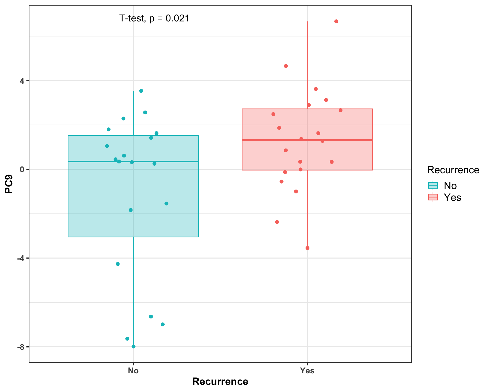
ggplot(pcTab, aes(x=Recurrence, y=PC20, col=Recurrence, fill=Recurrence)) +
geom_boxplot(alpha = 0.3, outlier.shape = NA) +
geom_jitter(position = position_jitter(0.2), size = 2, show.legend = F) +
scale_color_manual(values=c('#00BFC4', '#F8766D')) +
scale_fill_manual(values=c('#00BFC4', '#F8766D')) +
ggpubr::stat_compare_means(method = 't.test', paired = F,
method.args = list(var.equal = T),
size = 5, show.legend = F) +
th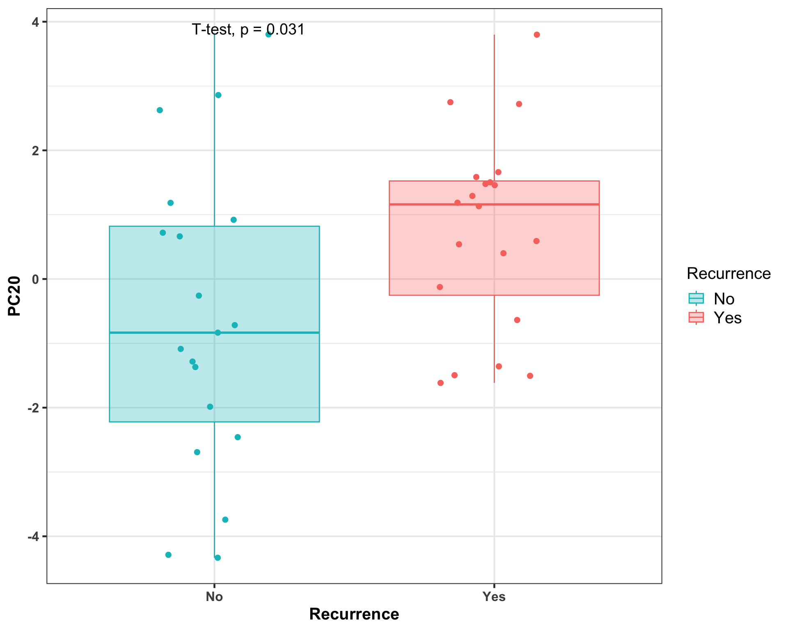
ggplot(pcTab, aes(x=Recurrence, y=PC7, col=Recurrence, fill=Recurrence)) +
geom_boxplot(alpha = 0.3, outlier.shape = NA) +
geom_jitter(position = position_jitter(0.2), size = 2, show.legend = F) +
scale_color_manual(values=c('#00BFC4', '#F8766D')) +
scale_fill_manual(values=c('#00BFC4', '#F8766D')) +
ggpubr::stat_compare_means(method = 't.test', paired = F,
method.args = list(var.equal = T),
size = 5, show.legend = F) +
th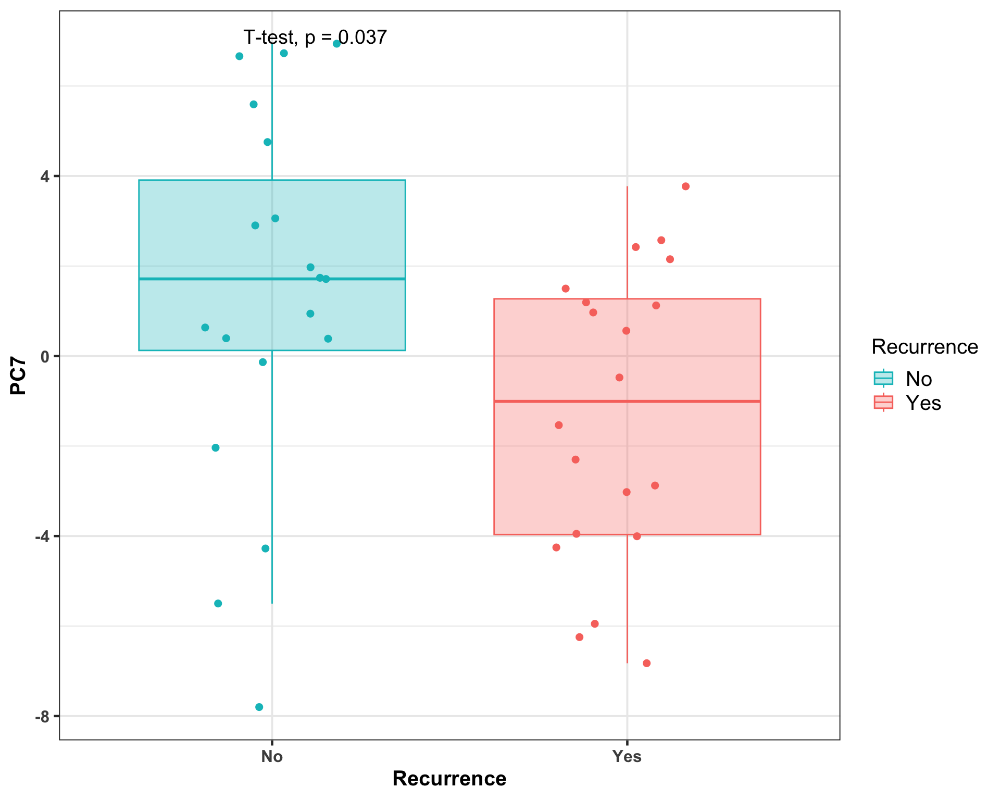
Display variance explained by each PC
# Display proportion of total variance captured by all PCs explained by each PC
varExplained <- pcaRes@sDev^2 / sum(pcaRes@sDev^2)
PC <- paste0('PC', seq(length(varExplained)))
varTab <- data.frame(PC = factor(PC, levels = PC),
Var_explained = varExplained)
ggplot(varTab, aes(x=PC, y=Var_explained*100)) +
geom_col() +
labs(x = '', y = 'Variance explained (%)') +
th + theme(axis.text.x = element_text(angle = 90, hjust = 1, vjust = 0.5)) => We attempt to identify biomarkers that can predict whether
patients WILL suffer from cancer recurrence or not. Therefore, we
decided to analyze Baseline and Follow-up samples separately.
=> We attempt to identify biomarkers that can predict whether
patients WILL suffer from cancer recurrence or not. Therefore, we
decided to analyze Baseline and Follow-up samples separately.
Baseline samples
Display significant associations between learned PCs (Var1) and metadata variables (Var2)
# Subset baseline samples
smpBaseIdx <- which(colData(proPlasma)$Condition == 'Baseline')
proBase <- proPlasma[, smpBaseIdx]
# Display significant associations between PCs and metadata variables
proBaseAssoRes <- doSOA(proBase, meta_var = c('Recurrence', 'Gender', 'Age',
'Smoking', 'Stage', 'Metastasis'),
do_onlyPCA = T, pca_method = 'ppca', num_PCs = 17)
proBaseAssoRes$tPCASigRes Var1 Var2 pVal pValAdj Stat Test
1 PC9 Stage 0.0002520104 0.02570506 14.5378599 ANOVA
2 PC17 Smoking 0.0083179586 0.42421589 6.5575367 ANOVA
3 PC3 Metastasis 0.0135541920 0.46084253 2.7539881 T-test
4 PC8 Gender 0.0213707614 0.54495441 2.5347212 T-test
5 PC4 Age 0.0311364974 0.62459424 0.4951084 Correlation
6 PC2 Smoking 0.0484718763 0.62459424 3.6789489 ANOVA
7 PC3 Stage 0.0490221633 0.62459424 3.6624804 ANOVA
8 PC2 Gender 0.0493290096 0.62459424 2.1167799 T-testDisplay significant associations between features (Var1) and cancer recurrence (Var2) and observe molecular signatures in input data through heatmap. Note that features in heatmap are ordered by their t-statistics.
# Perform analysis
proBaseRes <- doSOA(proBase, meta_var = 'Recurrence', pca_method = 'ppca',
num_PCs = 17, num_PCfeats = 30)
datMat <- proBaseRes$data
smpAnno <- proBaseRes$smpMetadata
tFeatSigRes <- proBaseRes$tFeatSigRes
tPCASigRes <- proBaseRes$tPCASigRes
# Display features that can significantly separate recurrence and non-recurrence
# patients
dplyr::mutate(tFeatSigRes, Gene = plyr::mapvalues(Var1,
from = featInfo$Protein.Groups,
to = featInfo$Genes,
warn_missing = F)) Var1 Var2 pVal pValAdj Stat Test Gene
1 A0A075B6Q5 Recurrence 0.000154664 0.09125178 -4.835958 T-test IGHV3-64
2 Q08380 Recurrence 0.004461299 0.99951948 -3.275341 T-test LGALS3BP
3 A0A0B4J1U3 Recurrence 0.009382262 0.99951948 2.928293 T-test IGLV1-36
4 A0A0J9YXX1 Recurrence 0.014877322 0.99951948 -2.709488 T-test IGHV5-10-1
5 A0A075B6J1 Recurrence 0.019975418 0.99951948 2.625125 T-test IGLV5-37
6 Q8NI99 Recurrence 0.021262913 0.99951948 -2.571688 T-test ANGPTL6
7 P19320 Recurrence 0.023879306 0.99951948 -2.480538 T-test VCAM1
8 P30622 Recurrence 0.039482636 0.99951948 -2.366944 T-test CLIP1
9 P01833 Recurrence 0.044109827 0.99951948 -2.174121 T-test PIGR# Plot molecular signatures in input data
# Order features according to t-statistics
featOrder <- dplyr::arrange(tFeatSigRes, dplyr::desc(Stat))$Var1
# Arrange samples to make same groups in same clusters
smpOrder <- c(which(smpAnno$Recurrence == 'No'),
which(smpAnno$Recurrence == 'Yes'))
# Prepare recurrence table for annotating samples in heatmap
smpRecur <- dplyr::select(smpAnno, Sample, Recurrence) %>%
tibble::column_to_rownames('Sample')
# Change protein names to gene names
datMatSub <- datMat[featOrder, smpOrder]
rownames(datMatSub) <- plyr::mapvalues(rownames(datMatSub),
from = featInfo$Protein.Groups,
to = featInfo$Genes,
warn_missing = F)
pheatmap::pheatmap(datMatSub,
annotation_col = smpRecur,
color = colorRampPalette(c('navy', 'white', 'red'))(100),
cluster_rows = F, cluster_cols = F,
scale = 'row', #row scaling is across columns
main = 'Baseline plasma proteomics')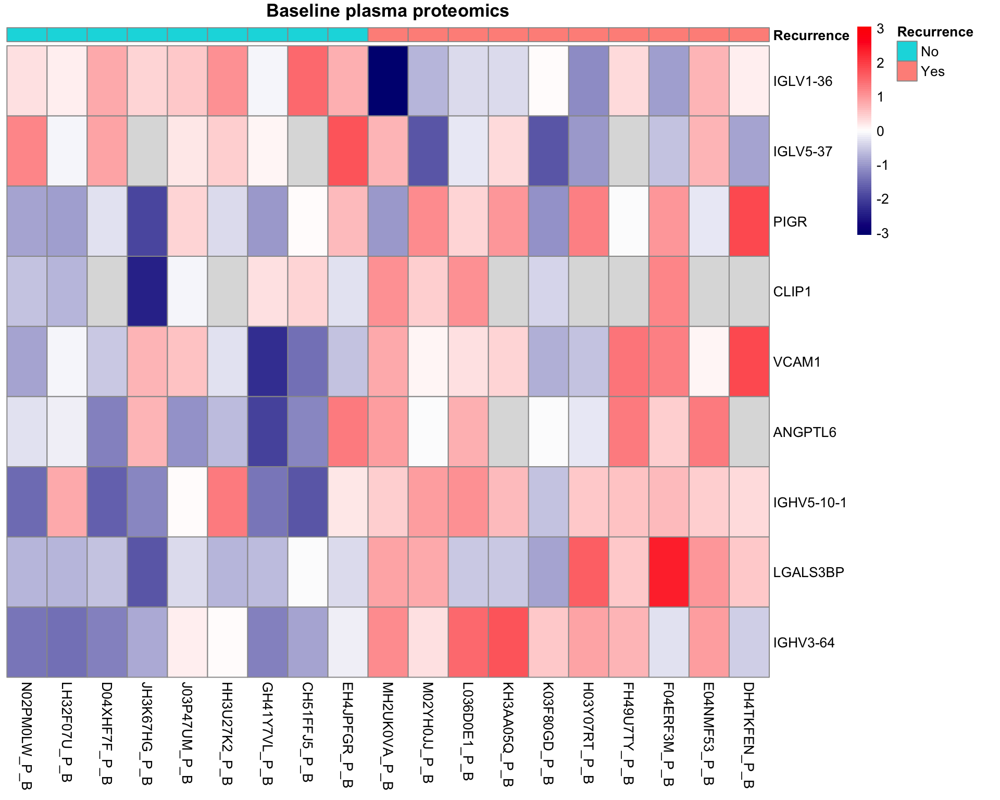
Owing to missing values, there might be a situation that only few observations detected in one sample group, resulting in unreliable t-statistics. We used probabilistic dropout model (proDA R package) to account for data missingness and identify differentially abundant entities that are significantly associated with cancer recurrence. Note that features in heatmap are ordered by their t-statistics.
# Fit linear probabilistic dropout model to normalized data
fit <- proDA::proDA(datMat, design = ~ smpAnno$Recurrence)
# fit
# Check coefficient names for Parameter 'contrast' in proDA::test_diff()
# proDA::result_names(fit)
# Identify significant differentially abundant entities
all_proDAProBaseRes <- proDA::test_diff(fit,
contrast = Intercept + `smpAnno$RecurrenceYes` - Intercept,
sort_by = 'pval')
proDAProBaseRes <- dplyr::select(all_proDAProBaseRes, -c(diff, se, df, avg_abundance, n_approx, n_obs)) %>%
dplyr::filter(pval < 0.05) %>%
dplyr::mutate(Gene = plyr::mapvalues(name,
from = featInfo$Protein.Groups,
to = featInfo$Genes,
warn_missing = F))
proDAProBaseRes name pval adj_pval t_statistic Gene
1 A0A075B6Q5 0.0001022981 0.06035588 5.032885 IGHV3-64
2 A0A0B4J1U3 0.0081710575 0.99951104 -2.993271 IGLV1-36
3 Q08380 0.0089027177 0.99951104 2.952986 LGALS3BP
4 A0A0J9YXX1 0.0157515549 0.99951104 2.682124 IGHV5-10-1
5 Q8NI99 0.0235815171 0.99951104 2.486680 ANGPTL6
6 A0A075B6J1 0.0261445516 0.99951104 -2.436045 IGLV5-37
7 P01833 0.0410104209 0.99951104 2.211198 PIGR
8 Q9P2M4 0.0491899466 0.99951104 2.118234 TBC1D14# Plot molecular signatures in input data
# Order features according to t-statistics
featOrder <- dplyr::arrange(proDAProBaseRes, dplyr::desc(t_statistic))$name
# Change protein names to gene names
datMatSub <- datMat[featOrder, smpOrder]
rownames(datMatSub) <- plyr::mapvalues(rownames(datMatSub),
from = featInfo$Protein.Groups,
to = featInfo$Genes,
warn_missing = F)
pheatmap::pheatmap(datMatSub,
annotation_col = smpRecur,
color = colorRampPalette(c('navy', 'white', 'red'))(100),
cluster_rows = F, cluster_cols = F,
scale = 'row', main = 'Baseline plasma proteomics (proDA)')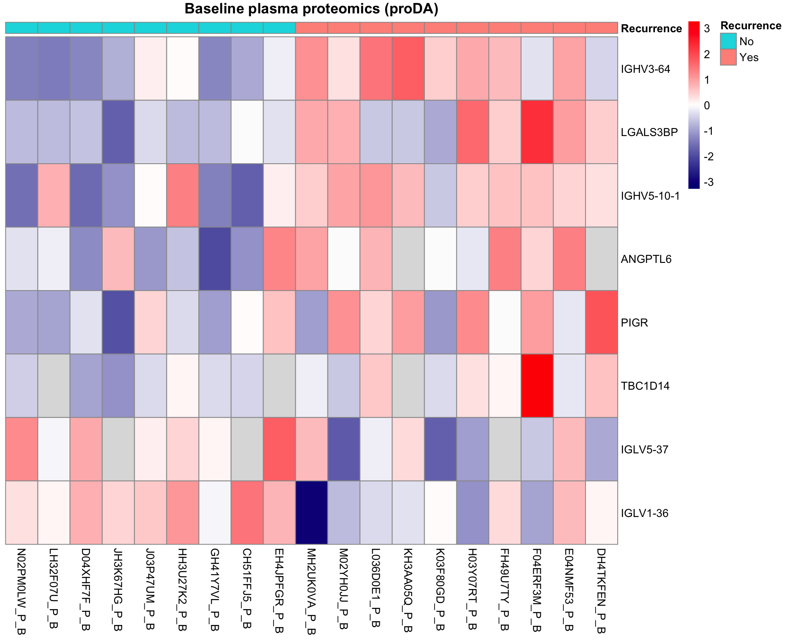
Visualize data of top 6 significant features based on proDA result
# Visualize data of top 6 significant features
topSigFeats <- proDAProBaseRes[1:6,] %>%
dplyr::select(name, pval, Gene) %>%
dplyr::rename(Feature = name, pVal = pval)
topSigFeatData <- tibble::as_tibble(datMat[topSigFeats$Feature,], rownames = 'Feature') %>%
tidyr::pivot_longer(cols = -'Feature',
names_to = 'Sample', values_to = 'Abundance') %>%
dplyr::left_join(topSigFeats, by = 'Feature') %>%
dplyr::mutate(Gene = paste0(Gene, '\n(p = ', round(pVal, 4), ')'),
Gene = factor(Gene, levels = unique(Gene))) %>%
dplyr::left_join(smpAnno, by = 'Sample')
ggplot(topSigFeatData, aes(x=Recurrence, y=Abundance, col=Recurrence, fill=Recurrence)) +
geom_boxplot(alpha = 0.3, outlier.shape = NA) +
geom_jitter(position = position_jitter(0.2), size = 2, show.legend = F) +
scale_color_manual(values=c('#00BFC4', '#F8766D')) +
scale_fill_manual(values=c('#00BFC4', '#F8766D')) +
facet_wrap(vars(Gene), scales = 'free') +
th + theme(strip.text = element_text(size = 13, face = 'bold'))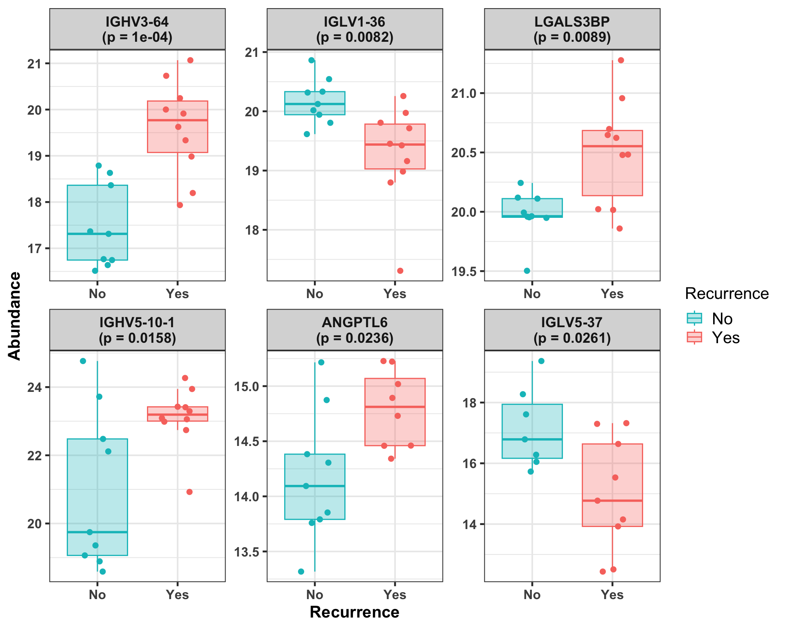
Assess data power by p-value histogram
p <- all_proDAProBaseRes$pval
hist(p, xlab = 'P-value', main = 'Baseline Plasma Proteomics (proDA)')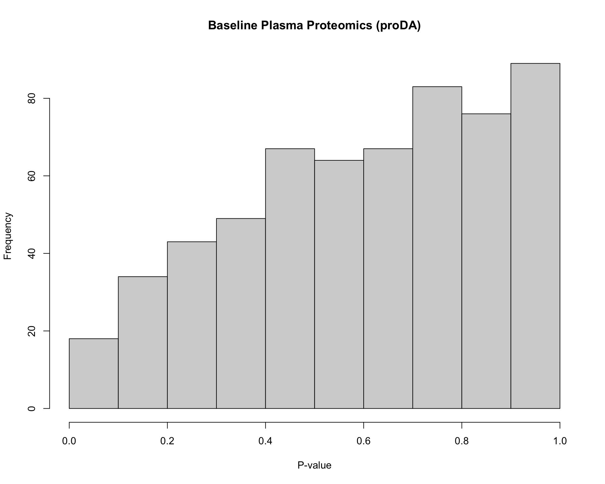
There is no significant association between PCs (Var1) and cancer recurrence (Var2).
# Display PCs that can significantly separate recurrence and non-recurrence
# patients
tPCASigRes[1] Var1 Var2 pVal pValAdj Stat Test
<0 rows> (or 0-length row.names)Follow-up samples
Display significant associations between learned PCs (Var1) and metadata variables (Var2)
# Subset follow-up samples
smpFoloIdx <- which(colData(proPlasma)$Condition != 'Baseline')
proFolo <- proPlasma[, smpFoloIdx]
# Display significant associations between PCs and metadata variables
proFoloAssoRes <- doSOA(proFolo, meta_var = c('Recurrence', 'Gender'),
do_onlyPCA = T, pca_method = 'ppca', num_PCs = 18)
proFoloAssoRes$tPCASigRes Var1 Var2 pVal pValAdj Stat Test
1 PC7 Recurrence 0.02420596 0.4639542 -2.460624 T-test
2 PC6 Gender 0.02577524 0.4639542 -2.430200 T-test
3 PC11 Gender 0.04707725 0.5649270 2.131580 T-testDisplay significant associations between features (Var1) and cancer recurrence (Var2) and observe molecular signatures in input data through heatmap. Note that features in heatmap are ordered by their t-statistics.
# Perform analysis
proFoloRes <- doSOA(proFolo, meta_var = 'Recurrence', pca_method = 'ppca',
num_PCs = 18, num_PCfeats = 30)
datMat <- proFoloRes$data
smpAnno <- proFoloRes$smpMetadata
tFeatSigRes <- proFoloRes$tFeatSigRes
tPCASigRes <- proFoloRes$tPCASigRes
pcaRes <- proFoloRes$pcaRes
pcTab <- proFoloRes$pcTab
pcTopFeatTab <- proFoloRes$pcTopFeatTab
# Display features that can significantly separate recurrence and non-recurrence
# patients
dplyr::mutate(tFeatSigRes, Gene = plyr::mapvalues(Var1,
from = featInfo$Protein.Groups,
to = featInfo$Genes,
warn_missing = F)) %>%
dplyr::select(-Test) Var1 Var2 pVal pValAdj Stat Gene
1 Q08380 Recurrence 0.0005321432 0.1759394 -4.205111 LGALS3BP
2 A0A075B6Q5 Recurrence 0.0005964046 0.1759394 -4.153807 IGHV3-64
3 Q12931 Recurrence 0.0042754816 0.5172352 3.453962 TRAP1
4 A0A0J9YXX1 Recurrence 0.0066183182 0.5172352 -3.068596 IGHV5-10-1
5 P09871 Recurrence 0.0067831533 0.5172352 -3.057326 C1S
6 P11216 Recurrence 0.0074898872 0.5172352 3.059412 PYGB
7 P48059 Recurrence 0.0077166007 0.5172352 3.045149 LIMS1
8 P59998 Recurrence 0.0083006638 0.5172352 3.109064 ARPC4
9 A0A075B6H9 Recurrence 0.0095615141 0.5172352 2.919376 IGLV4-69
10 Q92820 Recurrence 0.0097303202 0.5172352 -2.891113 GGH
11 Q9NTI5 Recurrence 0.0106457639 0.5172352 -2.849388 PDS5B
12 O15144 Recurrence 0.0111879854 0.5172352 2.866674 ARPC2
13 P00736 Recurrence 0.0113967067 0.5172352 -2.817666 C1R
14 P01824 Recurrence 0.0129069917 0.5439375 -2.777299 IGHV4-39
15 Q99700;Q9NZM4 Recurrence 0.0177897322 0.5822419 -2.623585 ATXN2;BICRA
16 Q96PD5 Recurrence 0.0189133166 0.5822419 -2.579053 PGLYRP2
17 Q9NR31;Q9Y6B6 Recurrence 0.0196733877 0.5822419 2.831525 SAR1A;SAR1B
18 P0DP01 Recurrence 0.0201569525 0.5822419 2.563141 IGHV1-8
19 Q09666 Recurrence 0.0213082114 0.5822419 -2.536148 AHNAK
20 P04004 Recurrence 0.0234504115 0.5822419 -2.475939 VTN
21 O14786 Recurrence 0.0237198546 0.5822419 -2.470425 NRP1
22 P12111 Recurrence 0.0242326322 0.5822419 -2.460092 COL6A3
23 P06331 Recurrence 0.0252670946 0.5822419 -2.554257 IGHV4-34
24 P07384 Recurrence 0.0255684410 0.5822419 2.461665 CAPN1
25 P02787 Recurrence 0.0284354227 0.5822419 -2.382385 TF
26 P01011 Recurrence 0.0300008466 0.5822419 -2.356166 SERPINA3
27 P19320 Recurrence 0.0301757187 0.5822419 -2.353317 VCAM1
28 P01031 Recurrence 0.0301806997 0.5822419 -2.353236 C5
29 Q14247 Recurrence 0.0309210528 0.5822419 2.366304 CTTN
30 Q9NZP8 Recurrence 0.0317074922 0.5822419 -2.328997 C1RL
31 Q13642 Recurrence 0.0321799333 0.5822419 2.378261 FHL1
32 P02788 Recurrence 0.0330388990 0.5822419 2.364469 LTF
33 O00391 Recurrence 0.0336607393 0.5822419 -2.299521 QSOX1
34 Q9UGM3 Recurrence 0.0346447572 0.5822419 -2.358924 DMBT1
35 P31146 Recurrence 0.0349646722 0.5822419 2.304068 CORO1A
36 P55103 Recurrence 0.0355266227 0.5822419 -2.272810 INHBC
37 Q8N6C8 Recurrence 0.0372964789 0.5841700 -2.284895 LILRA3
38 P02748 Recurrence 0.0387937626 0.5841700 -2.229016 C9
39 P37837 Recurrence 0.0400602120 0.5841700 2.327286 TALDO1
40 P13671 Recurrence 0.0413071455 0.5841700 -2.197582 C6
41 P27824 Recurrence 0.0427548939 0.5841700 2.228443 CANX
42 P52566 Recurrence 0.0431397996 0.5841700 2.240722 ARHGDIB
43 P04406 Recurrence 0.0442105535 0.5841700 2.163384 GAPDH
44 P02786 Recurrence 0.0455027016 0.5841700 -2.148822 TFRC
45 Q14019 Recurrence 0.0459066621 0.5841700 2.206961 COTL1
46 Q16706 Recurrence 0.0470587046 0.5841700 -2.131780 MAN2A1
47 P07900 Recurrence 0.0480891337 0.5841700 -2.129880 HSP90AA1
48 P26038 Recurrence 0.0498176360 0.5841700 2.102787 MSN# Plot molecular signatures in input data
# Order features according to t-statistics
featOrder <- dplyr::arrange(tFeatSigRes, dplyr::desc(Stat))$Var1
# Arrange samples to make same groups in same clusters
smpOrder <- c(which(smpAnno$Recurrence == 'No'),
which(smpAnno$Recurrence == 'Yes'))
# Prepare recurrence table for annotating samples in heatmap
smpRecur <- dplyr::select(smpAnno, Sample, Recurrence) %>%
tibble::column_to_rownames('Sample')
# Change protein names to gene names
datMatSub <- datMat[featOrder, smpOrder]
rownames(datMatSub) <- plyr::mapvalues(rownames(datMatSub),
from = featInfo$Protein.Groups,
to = featInfo$Genes,
warn_missing = F)
pheatmap::pheatmap(datMatSub,
annotation_col = smpRecur,
color = colorRampPalette(c('navy', 'white', 'red'))(100),
cluster_rows = F, cluster_cols = F,
scale = 'row', main = 'Follow-up plasma proteomics')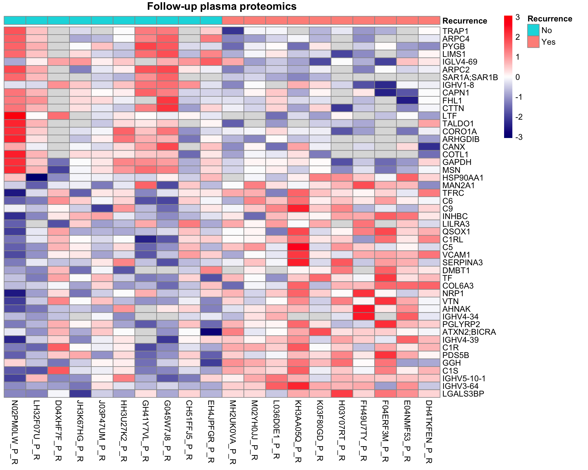
Use probabilistic dropout model to account for data missingness and identify differentially abundant entities that are significantly associated with cancer recurrence. Note that features in heatmap are ordered by their t-statistics.
# Fit linear probabilistic dropout model to normalized data
fit <- proDA::proDA(datMat, design = ~ smpAnno$Recurrence)
# fit
# Check coefficient names for Parameter 'contrast' in proDA::test_diff()
# proDA::result_names(fit)
# Identify significant differentially abundant entities
all_proDAProFoloRes <- proDA::test_diff(fit,
contrast = Intercept + `smpAnno$RecurrenceYes` - Intercept,
sort_by = 'pval')
proDAProFoloRes <- dplyr::select(all_proDAProFoloRes, -c(diff, se, df, avg_abundance, n_approx, n_obs)) %>%
dplyr::filter(pval < 0.05) %>%
dplyr::mutate(Gene = plyr::mapvalues(name,
from = featInfo$Protein.Groups,
to = featInfo$Genes,
warn_missing = F))
proDAProFoloRes name pval adj_pval t_statistic Gene
1 A0A075B6Q5 0.0004282949 0.2526940 4.302942 IGHV3-64
2 Q08380 0.0014631357 0.4316250 3.750861 LGALS3BP
3 P11216 0.0057584142 0.6261417 -3.132223 PYGB
4 P59998 0.0064319915 0.6261417 -3.081669 ARPC4
5 Q12931 0.0077620459 0.6261417 -2.995437 TRAP1
6 A0A0J9YXX1 0.0081217665 0.6261417 2.974584 IGHV5-10-1
7 P48059 0.0094357294 0.6261417 -2.905349 LIMS1
8 A0A075B6H9 0.0106201024 0.6261417 -2.850509 IGLV4-69
9 Q92820 0.0115322372 0.6261417 2.812156 GGH
10 O15144 0.0118596823 0.6261417 -2.799096 ARPC2
11 P0DP01 0.0140908195 0.6261417 -2.718362 IGHV1-8
12 P01824 0.0173092077 0.6261417 2.621209 IGHV4-39
13 P02788 0.0188422494 0.6261417 -2.580847 LTF
14 P52566 0.0188544490 0.6261417 -2.580539 ARHGDIB
15 P07384 0.0201781573 0.6261417 -2.548138 CAPN1
16 P06331 0.0202660545 0.6261417 2.546058 IGHV4-34
17 Q9NR31;Q9Y6B6 0.0208301217 0.6261417 -2.532912 SAR1A;SAR1B
18 Q13642 0.0230525216 0.6261417 -2.484191 FHL1
19 Q14247 0.0245420504 0.6261417 -2.453955 CTTN
20 O14786 0.0258471947 0.6261417 2.428847 NRP1
21 Q14019 0.0282842930 0.6261417 -2.384987 COTL1
22 P31146 0.0284760560 0.6261417 -2.381687 CORO1A
23 Q8N6C8 0.0294054540 0.6261417 2.365984 LILRA3
24 P10124 0.0309473145 0.6261417 -2.340926 SRGN
25 Q99700;Q9NZM4 0.0344863408 0.6261417 2.287537 ATXN2;BICRA
26 O14950;P19105 0.0345013804 0.6261417 -2.287321 MYL12A;MYL12B
27 Q96PD5 0.0353467813 0.6261417 2.275327 PGLYRP2
28 Q9NTI5 0.0360776974 0.6261417 2.265169 PDS5B
29 P09871 0.0377154919 0.6261417 2.243080 C1S
30 P04406 0.0388190000 0.6261417 -2.228691 GAPDH
31 P02748 0.0400163064 0.6261417 2.213499 C9
32 P04004 0.0403237726 0.6261417 2.209665 VTN
33 P19320 0.0421868843 0.6261417 2.186993 VCAM1
34 P55103 0.0431083373 0.6261417 2.176117 INHBC
35 Q9UGM3 0.0433223707 0.6261417 2.173622 DMBT1
36 P24844 0.0446546561 0.6261417 -2.158336 MYL9
37 P26038 0.0451366411 0.6261417 -2.152909 MSN
38 Q9NZP8 0.0454711323 0.6261417 2.149174 C1RL
39 Q9NQC3 0.0462055834 0.6261417 -2.141059 RTN4
40 P00736 0.0467233614 0.6261417 2.135409 C1R
41 O00194 0.0469064146 0.6261417 -2.133425 RAB27B
42 P01833 0.0499727816 0.6261417 2.101200 PIGR# Plot molecular signatures in input data
# Order features according to t-statistics
featOrder <- dplyr::arrange(proDAProFoloRes, dplyr::desc(t_statistic))$name
# Change protein names to gene names
datMatSub <- datMat[featOrder, smpOrder]
rownames(datMatSub) <- plyr::mapvalues(rownames(datMatSub),
from = featInfo$Protein.Groups,
to = featInfo$Genes,
warn_missing = F)
pheatmap::pheatmap(datMatSub,
annotation_col = smpRecur,
color = colorRampPalette(c('navy', 'white', 'red'))(100),
cluster_rows = F, cluster_cols = F,
scale = 'row', main = 'Follow-up plasma proteomics (proDA)')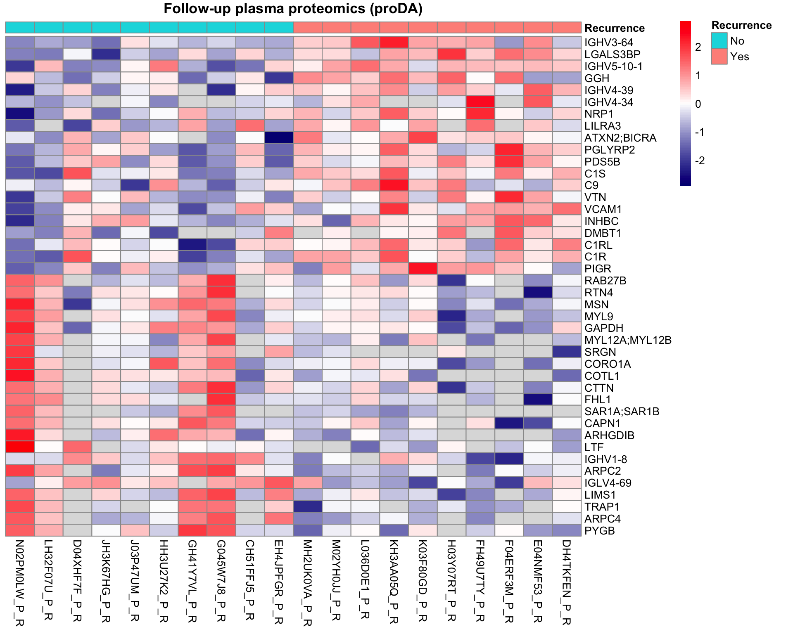
Visualize data of top 6 significant features based on proDA result
# Visualize data of top 6 significant features
topSigFeats <- proDAProFoloRes[1:6,] %>%
dplyr::select(name, pval, Gene) %>%
dplyr::rename(Feature = name, pVal = pval)
topSigFeatData <- tibble::as_tibble(datMat[topSigFeats$Feature,], rownames = 'Feature') %>%
tidyr::pivot_longer(cols = -'Feature',
names_to = 'Sample', values_to = 'Abundance') %>%
dplyr::left_join(topSigFeats, by = 'Feature') %>%
dplyr::mutate(Gene = paste0(Gene, '\n(p = ', round(pVal, 4), ')'),
Gene = factor(Gene, levels = unique(Gene))) %>%
dplyr::left_join(smpAnno, by = 'Sample')
ggplot(topSigFeatData, aes(x=Recurrence, y=Abundance, col=Recurrence, fill=Recurrence)) +
geom_boxplot(alpha = 0.3, outlier.shape = NA) +
geom_jitter(position = position_jitter(0.2), size = 2, show.legend = F) +
scale_color_manual(values=c('#00BFC4', '#F8766D')) +
scale_fill_manual(values=c('#00BFC4', '#F8766D')) +
facet_wrap(vars(Gene), scales = 'free') +
th + theme(strip.text = element_text(size = 13, face = 'bold'))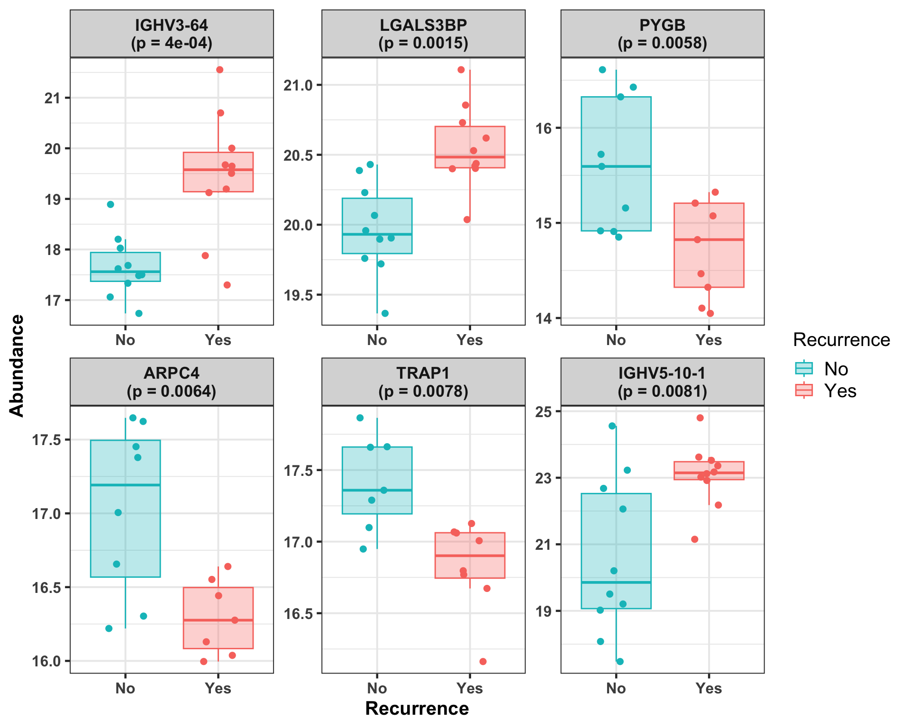
Assess data power by p-value histogram
p <- all_proDAProFoloRes$pval
hist(p, xlab = 'P-value', main = 'Follow-up Plasma Proteomics (proDA)')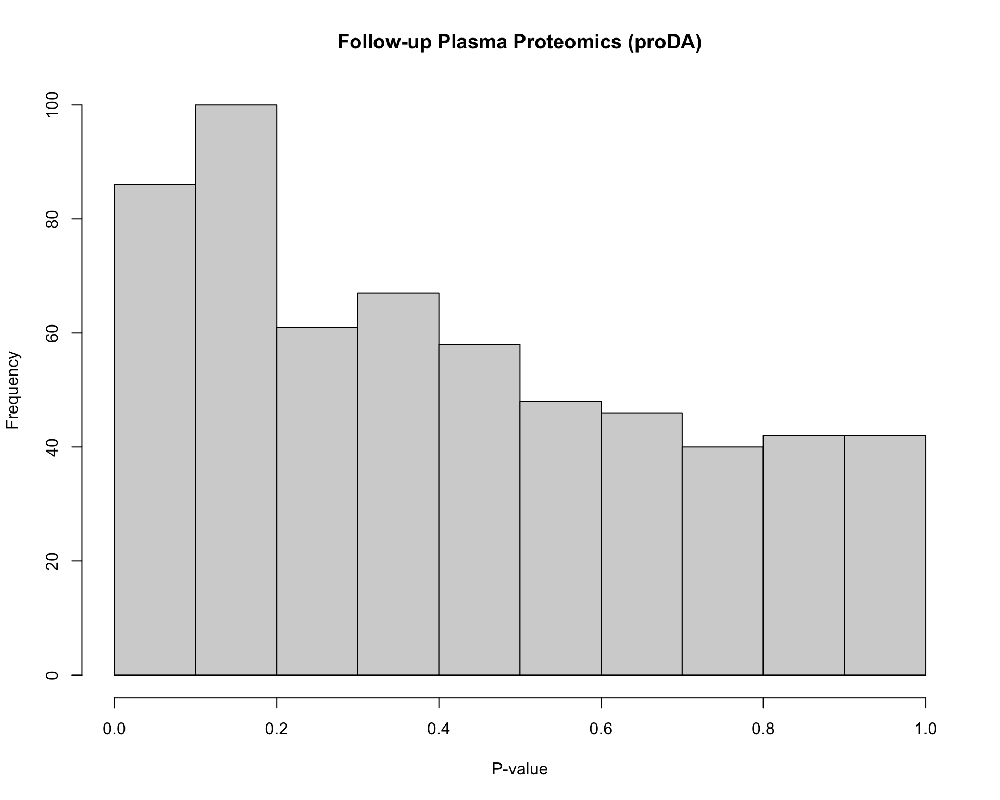
Display significant associations between PCs (Var1) and cancer recurrence (Var2)
# Display PCs that can significantly separate recurrence and non-recurrence
# patients
tPCASigRes Var1 Var2 pVal pValAdj Stat Test
1 PC7 Recurrence 0.02420596 0.4357072 -2.460624 T-test# Display proportion of total variance captured by all PCs explained by each PC
varExplained <- pcaRes@sDev^2 / sum(pcaRes@sDev^2)
PC <- paste0('PC', seq(length(varExplained)))
varTab <- data.frame(PC = factor(PC, levels = PC),
Var_explained = varExplained)
ggplot(varTab, aes(x=PC, y=Var_explained*100)) +
geom_col() +
labs(x = '', y = 'Variance explained (%)',
title = 'Follow-up plasma proteomics') +
th + theme(axis.text.x = element_text(angle = 90, hjust = 1, vjust = 0.5))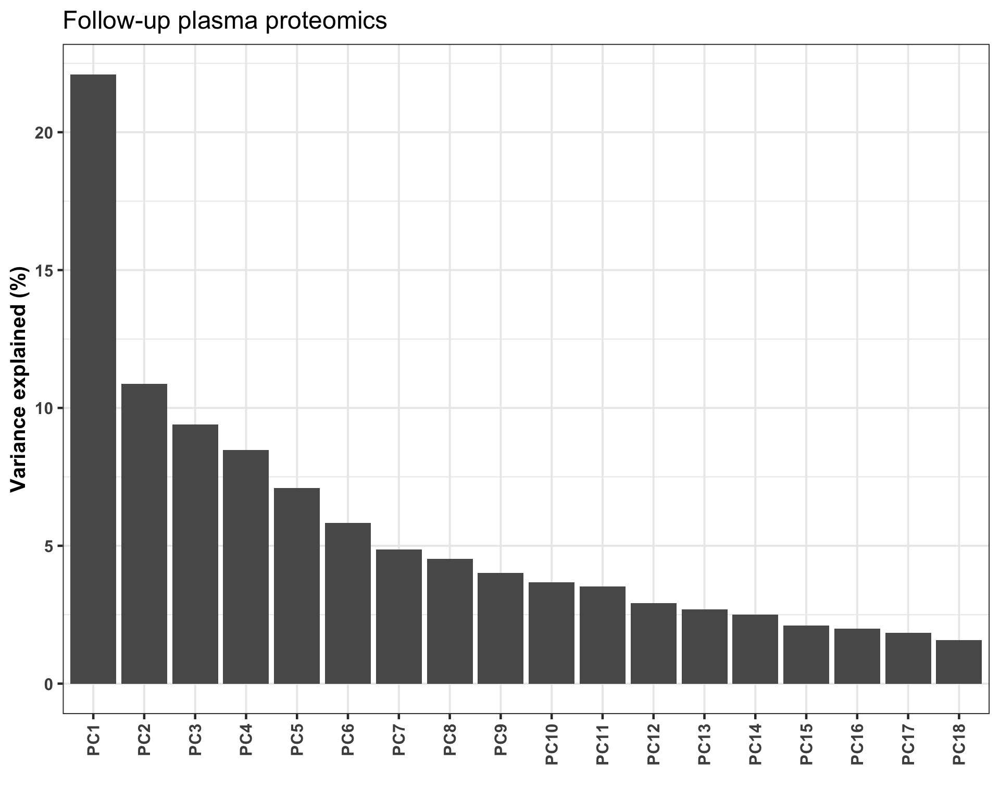
PC7 potentially separates recurrence and non-recurrence patients.
# Visualize PCs
ggplot(pcTab, aes(x=Recurrence, y=PC7, col=Recurrence, fill=Recurrence)) +
geom_boxplot(alpha = 0.3, outlier.shape = NA) +
geom_jitter(position = position_jitter(0.2), size = 2, show.legend = F) +
labs(title = 'Follow-up plasma proteomics') +
scale_color_manual(values=c('#00BFC4', '#F8766D')) +
scale_fill_manual(values=c('#00BFC4', '#F8766D')) +
ggpubr::stat_compare_means(method = 't.test', paired = F, size = 6,
method.args = list(var.equal = T), hjust = 0.65,
show.legend = F) +
th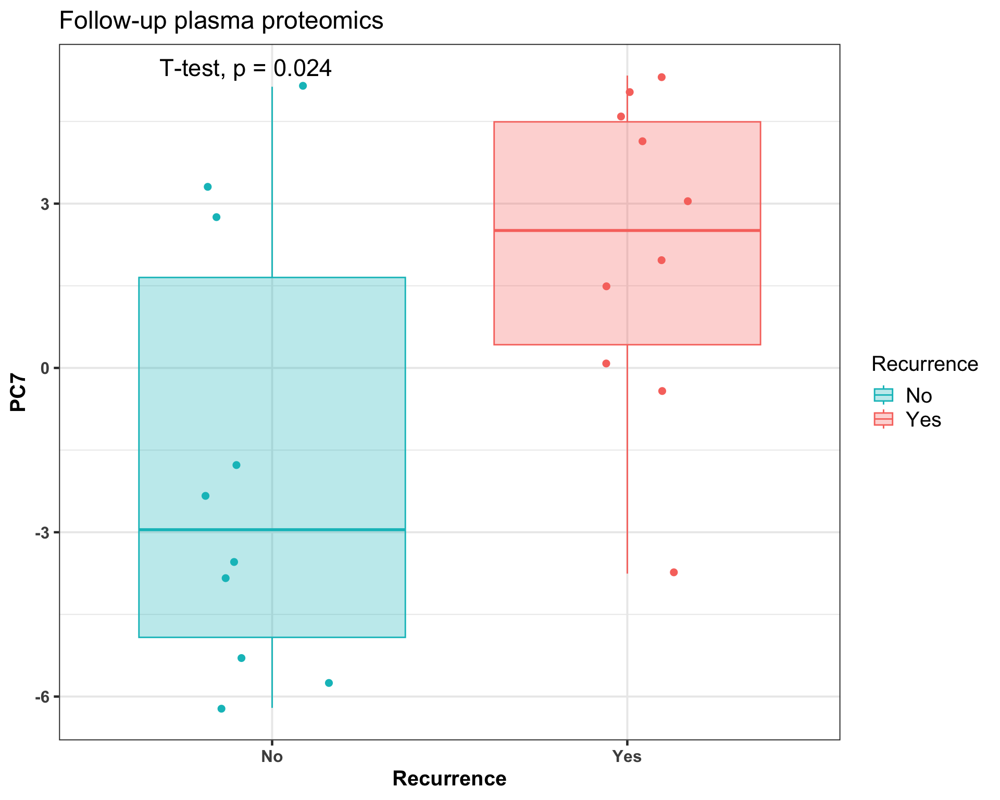
Plot molecular signatures captured by PC7 in input data. We took a look at top 20 features with highest loadings and observed protein levels of these top features through heatmap. Note that features in heatmap are ordered by their loadings. There is no single feature that can decently hint if patients will suffer cancer recurrence or not, which means each of these top features contributes a bit to explaining variation between recurrence and non-recurrence patients.
# Plot molecular signatures in input data
# Extract top features with highest loadings
topFeats <- pcTopFeatTab$PC7$Feature[1:20]
# Order features by loadings
topFeatsIdx <- sapply(topFeats, function(feat) {which(rownames(datMat) == feat)})
# Change protein names to gene names
datMatSub <- datMat[topFeatsIdx, smpOrder]
rownames(datMatSub) <- plyr::mapvalues(rownames(datMatSub),
from = featInfo$Protein.Groups,
to = featInfo$Genes,
warn_missing = F)
pheatmap::pheatmap(datMatSub,
annotation_col = smpRecur,
color = colorRampPalette(c('navy', 'white', 'red'))(100),
cluster_rows = F, cluster_cols = F,
scale = 'row', main = 'Follow-up plasma proteomics - PC7')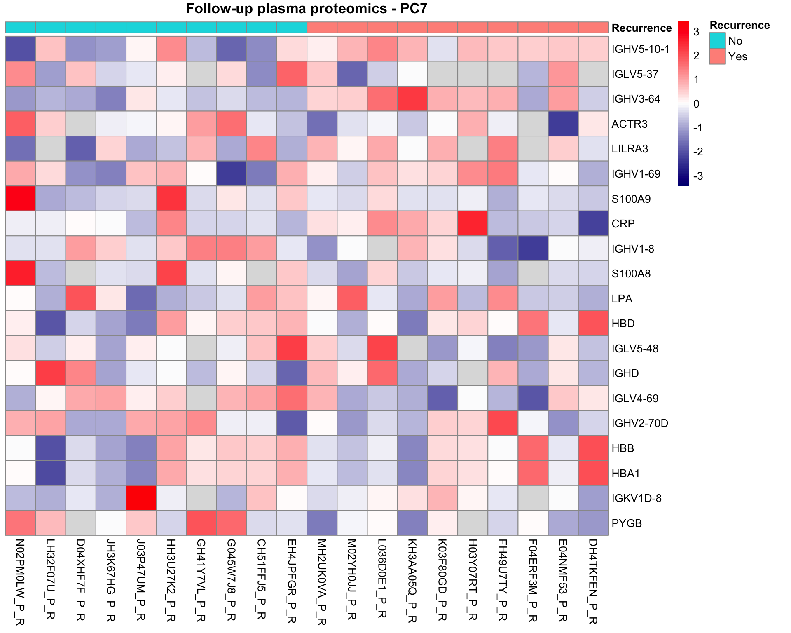
Display top features that build the PC7
# Display top features with highest loadings of PC of interest
pcTopFeatTab <- dplyr::mutate(pcTopFeatTab$PC7, Gene = plyr::mapvalues(Feature,
from = featInfo$Protein.Groups,
to = featInfo$Genes,
warn_missing = F))
pcTopFeatTab Feature Loading Gene
1 A0A0J9YXX1 0.32130079 IGHV5-10-1
2 A0A075B6J1 0.18531247 IGLV5-37
3 A0A075B6Q5 0.18128353 IGHV3-64
4 P61158 0.15744538 ACTR3
5 Q8N6C8 0.15534590 LILRA3
6 P01742 0.15438191 IGHV1-69
7 P06702 0.14922369 S100A9
8 P02741 0.13771881 CRP
9 P0DP01 0.12830464 IGHV1-8
10 P05109 0.12528850 S100A8
11 P08519 0.12163329 LPA
12 P02042 0.11579589 HBD
13 A0A075B6I7 0.11321580 IGLV5-48
14 P01880 0.11248926 IGHD
15 A0A075B6H9 0.11101122 IGLV4-69
16 A0A0C4DH43 0.10998496 IGHV2-70D
17 P68871 0.10879111 HBB
18 P69905 0.10815166 HBA1
19 A0A087WSZ0 0.10594400 IGKV1D-8
20 P11216 0.10245202 PYGB
21 P01704 0.09964878 IGLV2-14
22 P13645 0.09908860 KRT10
23 P06331 0.09643002 IGHV4-34
24 P32119 0.09569198 PRDX2
25 Q96CV9 0.09466332 OPTN
26 P50914 0.09426500 RPL14
27 P50552 0.08949841 VASP
28 P68104;Q5VTE0 0.08903951 EEF1A1;EEF1A1P5
29 A0A0B4J2D9;P0DP09 0.08645179 IGKV1-13;IGKV1D-13
30 Q8IXQ9 0.08471363 ETFBKMTChanges in time course
Differences between Follow-up and Baseline samples (Follow-up matrix
- baseline matrix):
Display significant associations between learned PCs (Var1) and metadata variables (Var2)
# Subset baseline samples
smpBaseIdx <- which(colData(proPlasma)$Condition == 'Baseline')
proBase <- proPlasma[, smpBaseIdx]
# Subset follow-up samples
smpFoloIdx <- which(colData(proPlasma)$Condition != 'Baseline')
proFolo <- proPlasma[, smpFoloIdx]
# Modify column names for matching two matrices
colnames(proBase) <- stringr::str_remove(colnames(proBase), '_P_B')
colnames(proFolo) <- stringr::str_remove(colnames(proFolo), '_P_R')
# Remove Sample 'G045W7J8' from Follow-up group, which is not present in Baseline
# group due to extremely high missingness
rmSmpIdx <- which(!colnames(proFolo) %in% colnames(proBase))
proFolo <- proFolo[, -rmSmpIdx]
# Retrieve data matrix
proBaseMat <- SummarizedExperiment::assay(proBase)
proFoloMat <- SummarizedExperiment::assay(proFolo)
# Subtract follow-up matrix by baseline matrix
if (identical(colnames(proBaseMat), colnames(proFoloMat)) &
identical(rownames(proBaseMat), rownames(proFoloMat))) {
proPlasmaDiffMat <- proFoloMat - proBaseMat
} else {
print('Align samples or features first.')
}
# Retrieve samples metadata for creating SE object
colAnno <- as.data.frame(colData(proBase))
proPlasmaDiff <- SummarizedExperiment(assays = proPlasmaDiffMat, colData = colAnno)
# Display significant associations between PCs and metadata variables
proPlasmaDiffAssoRes <- doSOA(proPlasmaDiff, meta_var = c('Recurrence', 'Gender', 'Age',
'Smoking', 'Stage', 'Metastasis'),
do_onlyPCA = T, pca_method = 'ppca', num_PCs = 17)
proPlasmaDiffAssoRes$tPCASigRes Var1 Var2 pVal pValAdj Stat Test
1 PC11 Smoking 0.005103377 0.5205444 7.4741849 ANOVA
2 PC4 Smoking 0.019277143 0.7577845 5.1056829 ANOVA
3 PC4 Gender 0.037038317 0.7577845 -2.2626955 T-test
4 PC3 Age 0.046297695 0.7577845 -0.4622581 Correlation
5 PC3 Metastasis 0.049283282 0.7577845 2.1172577 T-testDisplay significant associations between features (Var1) and cancer recurrence (Var2) and observe molecular signatures in input data through heatmap. Note that features in heatmap are ordered by their t-statistics.
# Perform analysis
proPlasmaDiffRes <- doSOA(proPlasmaDiff, meta_var = 'Recurrence', pca_method = 'ppca',
num_PCs = 17, num_PCfeats = 30)
datMat <- proPlasmaDiffRes$data
smpAnno <- proPlasmaDiffRes$smpMetadata
tFeatSigRes <- proPlasmaDiffRes$tFeatSigRes
tPCASigRes <- proPlasmaDiffRes$tPCASigRes
# Display features that can significantly separate recurrence and non-recurrence
# patients
dplyr::mutate(tFeatSigRes, Gene = plyr::mapvalues(Var1,
from = featInfo$Protein.Groups,
to = featInfo$Genes,
warn_missing = F)) Var1 Var2 pVal pValAdj Stat Test Gene
1 Q9P2M4 Recurrence 0.01786128 0.9832339 2.742114 T-test TBC1D14
2 P78563 Recurrence 0.01920537 0.9832339 -2.603459 T-test ADARB1
3 P13671 Recurrence 0.02110072 0.9832339 -2.540909 T-test C6
4 Q96QK1 Recurrence 0.02197414 0.9832339 -2.763829 T-test VPS35
5 P22352 Recurrence 0.03084664 0.9832339 -2.354227 T-test GPX3
6 Q9BXR6 Recurrence 0.03108854 0.9832339 -2.441218 T-test CFHR5
7 P61981 Recurrence 0.03865397 0.9832339 2.321613 T-test YWHAG
8 P49908 Recurrence 0.04068620 0.9832339 -2.215225 T-test SELENOP
9 Q9NZP8 Recurrence 0.04310156 0.9832339 -2.185912 T-test C1RL
10 P07384 Recurrence 0.04356035 0.9832339 2.204016 T-test CAPN1
11 P02749 Recurrence 0.04681759 0.9832339 -2.143639 T-test APOH# Plot molecular signatures in input data
# Order features according to t-statistics
featOrder <- dplyr::arrange(tFeatSigRes, dplyr::desc(Stat))$Var1
# Arrange samples to make same groups in same clusters
smpOrder <- c(which(smpAnno$Recurrence == 'No'),
which(smpAnno$Recurrence == 'Yes'))
# Prepare recurrence table for annotating samples in heatmap
smpRecur <- dplyr::select(smpAnno, Sample, Recurrence) %>%
tibble::column_to_rownames('Sample')
# Change protein names to gene names
datMatSub <- datMat[featOrder, smpOrder]
rownames(datMatSub) <- plyr::mapvalues(rownames(datMatSub),
from = featInfo$Protein.Groups,
to = featInfo$Genes,
warn_missing = F)
pheatmap::pheatmap(datMatSub,
annotation_col = smpRecur,
color = colorRampPalette(c('navy', 'white', 'red'))(100),
cluster_rows = F, cluster_cols = F,
scale = 'row', main = 'Differential plasma proteomics')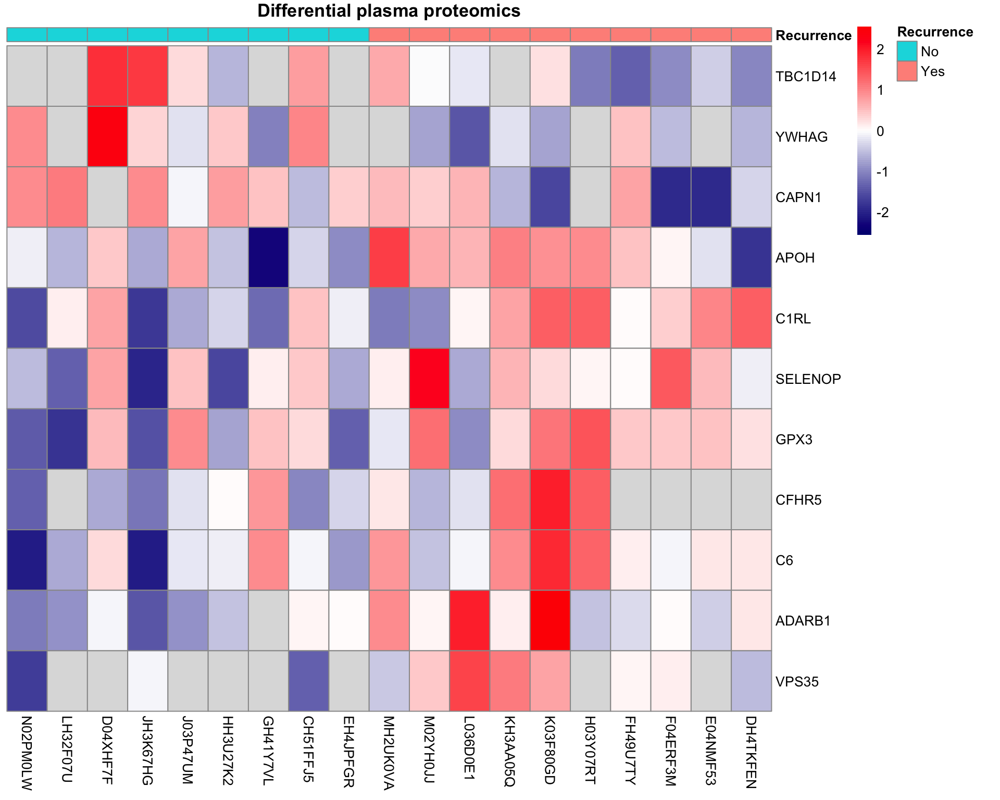
Use probabilistic dropout model to account for data missingness and identify differentially abundant entity differences that are significantly associated with cancer recurrence. Note that there is no differentially abundant protein.
# Fit linear probabilistic dropout model to normalized data
fit <- proDA::proDA(datMat, design = ~ smpAnno$Recurrence)
# fit
# Check coefficient names for Parameter 'contrast' in proDA::test_diff()
# proDA::result_names(fit)
# Identify significant differentially abundant entities
proDAProPlasmaDiffRes <- proDA::test_diff(fit,
contrast = Intercept + `smpAnno$RecurrenceYes` - Intercept,
sort_by = 'pval', n_max = 20) %>%
dplyr::select(-c(diff, se, df, avg_abundance, n_approx, n_obs)) %>%
dplyr::mutate(Gene = plyr::mapvalues(name,
from = featInfo$Protein.Groups,
to = featInfo$Genes,
warn_missing = F))
proDAProPlasmaDiffRes name pval adj_pval t_statistic Gene
309 P13671 0.6497374 0.9998693 0.4622866 C6
168 P02749 0.6795008 0.9998693 0.4203420 APOH
340 P22352 0.6821900 0.9998693 0.4165912 GPX3
183 P02790 0.6864613 0.9998693 0.4106464 HPX
568 Q9NZP8 0.7013204 0.9998693 0.3900816 C1RL
404 P49908 0.7171905 0.9998693 0.3683070 SELENOP
415 P54253 0.7252356 0.9998693 0.3573391 ATXN1
321 P15814 0.7253454 0.9998693 0.3571897 IGLL1
505 Q16706 0.7280861 0.9998693 0.3534637 MAN2A1
531 Q8NDA2 0.7339525 0.9998693 0.3455059 HMCN2
285 P11021 0.7363850 0.9998693 -0.3422130 HSPA5
180 P02786 0.7395523 0.9998693 0.3379311 TFRC
547 Q96QK1 0.7469094 0.9998693 0.3280100 VPS35
93 P00736 0.7500584 0.9998693 0.3237739 C1R
586 Q9Y5Y7 0.7508653 0.9998693 0.3226895 LYVE1
119 P01619 0.7553641 0.9998693 0.3166505 IGKV3-20
296 P12111 0.7617576 0.9998693 0.3080889 COL6A3
560 Q9HDC9 0.7687286 0.9998693 0.2987810 APMAP
108 P01023 0.7694687 0.9998693 0.2977944 A2M
384 P36980 0.7733779 0.9998693 0.2925883 CFHR2Visualize data of top 6 significant features based on regular t-test result
# Visualize data of top 6 significant features
topSigFeats <- tFeatSigRes$Var1[1:6]
topSigFeatData <- tibble::as_tibble(datMat[topSigFeats,], rownames = 'Feature') %>%
tidyr::pivot_longer(cols = -'Feature',
names_to = 'Sample', values_to = 'Abundance') %>%
dplyr::mutate(Feature = plyr::mapvalues(Feature,
from = featInfo$Protein.Groups,
to = featInfo$Genes,
warn_missing = F),
Feature = factor(Feature, levels = plyr::mapvalues(topSigFeats,
from = featInfo$Protein.Groups,
to = featInfo$Genes,
warn_missing = F))) %>%
dplyr::left_join(smpAnno, by = 'Sample')
ggplot(topSigFeatData, aes(x=Recurrence, y=Abundance, col=Recurrence, fill=Recurrence)) +
geom_boxplot(alpha = 0.3, outlier.shape = NA) +
geom_jitter(position = position_jitter(0.2), size = 2, show.legend = F) +
scale_color_manual(values=c('#00BFC4', '#F8766D')) +
scale_fill_manual(values=c('#00BFC4', '#F8766D')) +
facet_wrap(vars(Feature), scales = 'free') +
ggpubr::stat_compare_means(method = 't.test', paired = F,
method.args = list(var.equal = T),
show.legend = F) +
th + theme(strip.text = element_text(size = 13, face = 'bold'))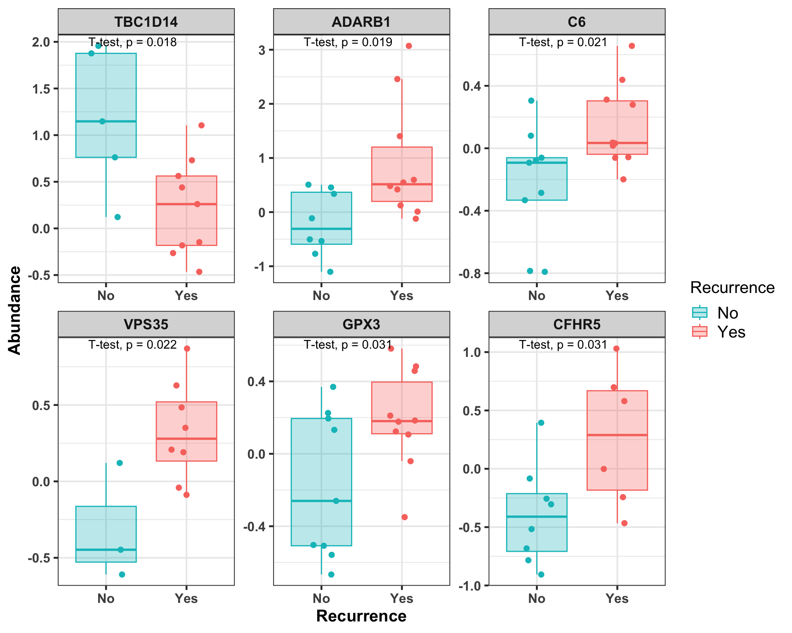
There is no significant association between PCs (Var1) and cancer recurrence (Var2).
# Display PCs that can significantly separate recurrence and non-recurrence
# patients
tPCASigRes[1] Var1 Var2 pVal pValAdj Stat Test
<0 rows> (or 0-length row.names)Tissue Proteomics
Based on PCA result obtained by analyzing whole Tissue Proteomics dataset that includes Tumor and Normal samples, we found that PCA mainly captures source of variation in tissue conditions, which indicates good data quality. However, Recurrence-related significant PCs do not work that well, perhaps because Tumor and Normal samples are noise to each other. Therefore, we decided to analyze Tumor and Normal samples separately.
# Load normalized data
proTissue <- readRDS('./data/AG_Krijgsveld/new_proTissueNorm_DIA.rds')
# Prepare protein-gene table for changing protein names to gene names
featInfo <- tibble::as_tibble(rowData(proTissue), rownames = 'Protein.Groups')
# Manually modify metadata information (metastasis)
tmp_metadata <- as.data.frame(colData(proTissue)) %>%
dplyr::mutate(
Metastasis = case_when(
Stage == 'IIB' ~ 'Yes',
Stage != 'IIB' ~ 'No'
))
colData(proTissue)['Metastasis'] <- tmp_metadata$Metastasis
# Perform analysis
proTissueRes <- doSOA(proTissue, meta_var = c('Recurrence', 'Gender', 'Age',
'Condition', 'Smoking', 'Stage',
'Metastasis'),
do_onlyPCA = T, pca_method = 'ppca')
tPCASigRes <- proTissueRes$tPCASigRes
pcaRes <- proTissueRes$pcaRes
pcTab <- proTissueRes$pcTabDisplay significant associations between learned PCs (Var1) and metadata variables (Var2). Note that each patient has two samples that have same patient annotations, so association test results may have additive effects.
# Display PCs of interest
tPCASigRes Var1 Var2 pVal pValAdj Stat Test
1 PC1 Condition 3.149656e-23 4.409519e-21 -22.0095312 T-test
2 PC17 Stage 1.221164e-03 8.548145e-02 8.0854131 ANOVA
3 PC19 Gender 3.471012e-03 1.619805e-01 -3.1172052 T-test
4 PC4 Metastasis 6.404361e-03 2.241526e-01 2.8857306 T-test
5 PC4 Stage 1.653369e-02 4.629435e-01 4.5927715 ANOVA
6 PC16 Recurrence 2.275740e-02 4.706193e-01 -2.3739181 T-test
7 PC5 Recurrence 2.353097e-02 4.706193e-01 -2.3596641 T-test
8 PC7 Age 2.976820e-02 5.209436e-01 -0.3439535 Correlation
9 PC19 Smoking 4.790560e-02 7.451982e-01 3.3022945 ANOVAVisualize some significant PCs
ggplot(pcTab, aes(x=Condition, y=PC1, color=Condition, fill=Condition)) +
geom_boxplot(alpha = 0.3, outlier.shape = NA) +
geom_jitter(position = position_jitter(0.2), size = 2, show.legend = F) +
ggpubr::stat_compare_means(method = 't.test', paired = F,
method.args = list(var.equal = T),
size = 5, show.legend = F) +
th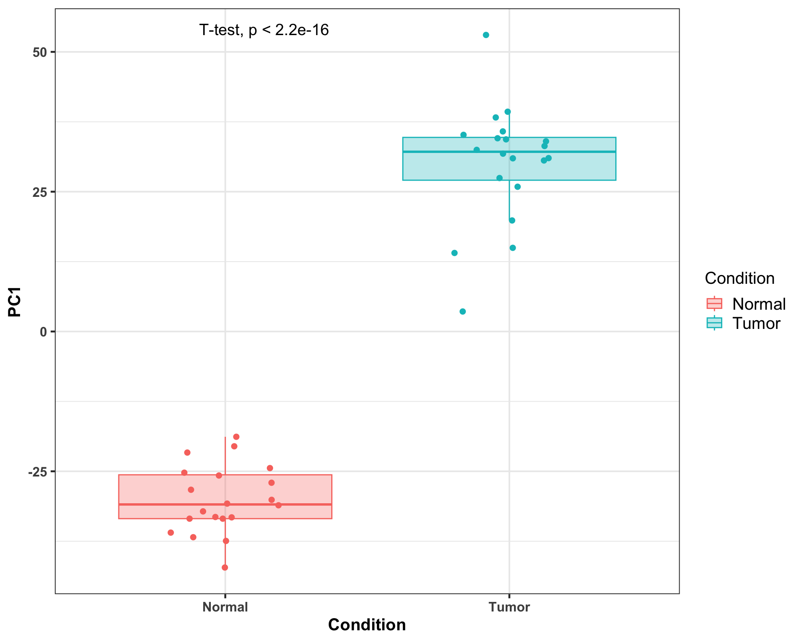
ggplot(pcTab, aes(x=Recurrence, y=PC16, color=Recurrence, fill=Recurrence)) +
geom_boxplot(alpha = 0.3, outlier.shape = NA) +
geom_jitter(position = position_jitter(0.2), size = 2, show.legend = F) +
scale_color_manual(values=c('#00BFC4', '#F8766D')) +
scale_fill_manual(values=c('#00BFC4', '#F8766D')) +
ggpubr::stat_compare_means(method = 't.test', paired = F,
method.args = list(var.equal = T),
size = 5, show.legend = F) +
th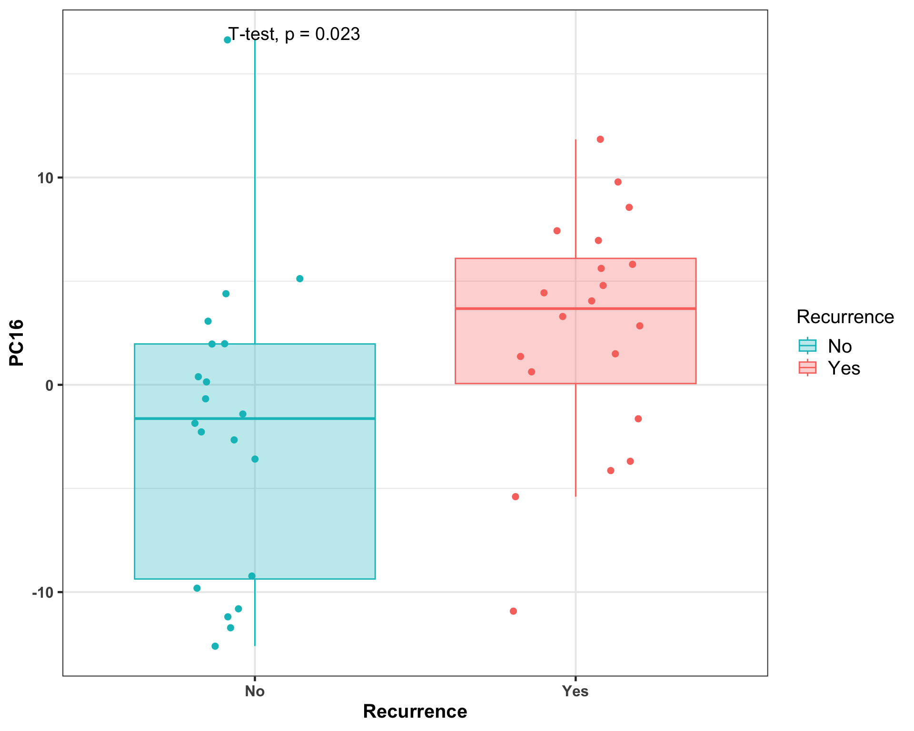
ggplot(pcTab, aes(x=Recurrence, y=PC5, color=Recurrence, fill=Recurrence)) +
geom_boxplot(alpha = 0.3, outlier.shape = NA) +
geom_jitter(position = position_jitter(0.2), size = 2, show.legend = F) +
scale_color_manual(values=c('#00BFC4', '#F8766D')) +
scale_fill_manual(values=c('#00BFC4', '#F8766D')) +
ggpubr::stat_compare_means(method = 't.test', paired = F,
method.args = list(var.equal = T),
size = 5, show.legend = F) +
th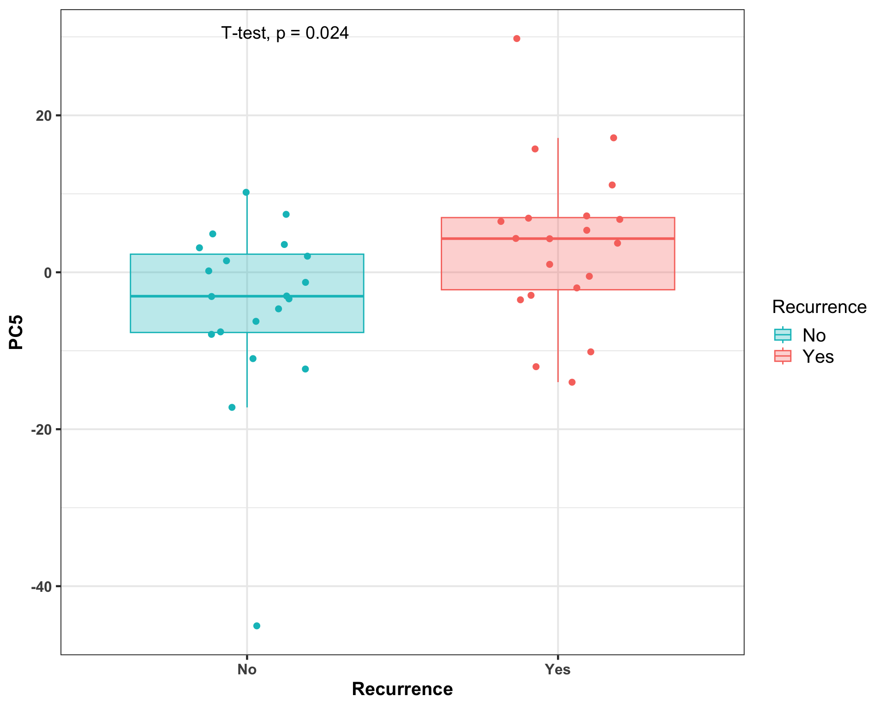
Display variance explained by each PC
# Display proportion of total variance captured by all PCs explained by each PC
varExplained <- pcaRes@sDev^2 / sum(pcaRes@sDev^2)
PC <- paste0('PC', seq(length(varExplained)))
varTab <- data.frame(PC = factor(PC, levels = PC),
Var_explained = varExplained)
ggplot(varTab, aes(x=PC, y=Var_explained*100)) +
geom_col() +
labs(x = '', y = 'Variance explained (%)') +
th + theme(axis.text.x = element_text(angle = 90, hjust = 1, vjust = 0.5))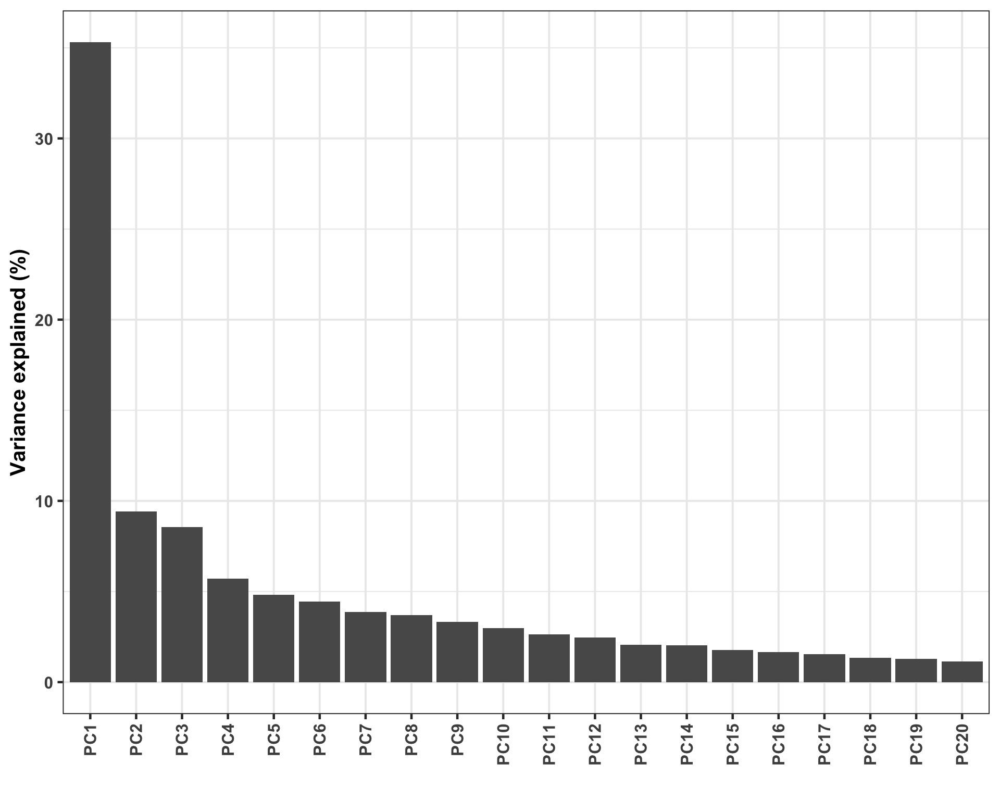
Tumor samples
Display significant associations between learned PCs (Var1) and metadata variables (Var2)
# Subset tumor samples
smpTumorIdx <- which(colData(proTissue)$Condition == 'Tumor')
proTumor <- proTissue[, smpTumorIdx]
# Display significant associations between PCs and metadata variables
proTumorAssoRes <- doSOA(proTumor, meta_var = c('Recurrence', 'Gender', 'Age',
'Smoking', 'Stage', 'Metastasis'),
do_onlyPCA = T, pca_method = 'ppca', num_PCs = 18)
proTumorAssoRes$tPCASigRes Var1 Var2 pVal pValAdj Stat Test
1 PC3 Metastasis 0.006572695 0.4586676 -3.071764 T-test
2 PC13 Gender 0.008493844 0.4586676 -2.953937 T-test
3 PC10 Age 0.019722482 0.5048890 0.516494 Correlation
4 PC7 Metastasis 0.020205962 0.5048890 -2.547479 T-test
5 PC3 Stage 0.023374490 0.5048890 4.723049 ANOVADisplay significant associations between features (Var1) and cancer recurrence (Var2) and observe molecular signatures in input data through heatmap. Note that features in heatmap are ordered by their t-statistics.
# Perform analysis
proTumorRes <- doSOA(proTumor, meta_var = 'Recurrence', pca_method = 'ppca',
num_PCs = 18, num_PCfeats = 30)
datMat <- proTumorRes$data
smpAnno <- proTumorRes$smpMetadata
tFeatSigRes <- proTumorRes$tFeatSigRes
tPCASigRes <- proTumorRes$tPCASigRes
pcaRes <- proTumorRes$pcaRes
pcTab <- proTumorRes$pcTab
pcTopFeatTab <- proTumorRes$pcTopFeatTab
# Display features that can significantly separate recurrence and non-recurrence
# patients
tFeatSigRes <- dplyr::mutate(tFeatSigRes, Gene = plyr::mapvalues(Var1,
from = featInfo$Protein.Groups,
to = featInfo$Genes,
warn_missing = F)) %>%
dplyr::select(-Test)
tFeatSigRes Var1 Var2 pVal pValAdj Stat Gene
1 P15169 Recurrence 0.0001585916 0.8203959 4.753901 CPN1
2 Q93096 Recurrence 0.0002912511 0.8203959 -4.477260 PTP4A1
3 Q9BZK7 Recurrence 0.0006070055 0.8203959 4.145883 TBL1XR1
4 Q9BQS2 Recurrence 0.0006887782 0.8203959 -5.346450 SYT15
5 Q9NWW5 Recurrence 0.0007549833 0.8203959 -4.047829 CLN6
6 Q9Y312 Recurrence 0.0008750919 0.8203959 -3.981534 AAR2
7 P28290 Recurrence 0.0009468708 0.8203959 -3.946147 ITPRID2
8 Q8NBN7 Recurrence 0.0014143811 0.9263354 -3.766071 RDH13
9 P11586 Recurrence 0.0028735330 0.9263354 3.447357 MTHFD1
10 P41236 Recurrence 0.0033992244 0.9263354 3.371517 PPP1R2
11 O14974 Recurrence 0.0037105667 0.9263354 3.331886 PPP1R12A
12 Q6P6C2 Recurrence 0.0038993568 0.9263354 3.309421 ALKBH5
13 Q8TCS8 Recurrence 0.0039965404 0.9263354 -3.298270 PNPT1
14 P56181 Recurrence 0.0046741007 0.9263354 -3.318910 NDUFV3
15 Q9HAB8 Recurrence 0.0048907085 0.9263354 -3.206627 PPCS
16 P54687 Recurrence 0.0049702752 0.9263354 3.225219 BCAT1
17 Q9NQT8 Recurrence 0.0051326327 0.9263354 -3.184660 KIF13B
18 O15460 Recurrence 0.0053322278 0.9263354 3.167286 P4HA2
19 Q9Y277 Recurrence 0.0053631305 0.9263354 -3.164653 VDAC3
20 Q9NVH1 Recurrence 0.0057216950 0.9263354 -3.135143 DNAJC11
21 P29373 Recurrence 0.0059160998 0.9263354 3.144209 CRABP2
22 Q9UNF0 Recurrence 0.0060623615 0.9263354 -3.108734 PACSIN2
23 Q96AA3 Recurrence 0.0061264664 0.9263354 3.127929 RFT1
24 Q16643 Recurrence 0.0061683528 0.9263354 3.100812 DBN1
25 Q9UDW1 Recurrence 0.0064224881 0.9263354 -3.082346 UQCR10
26 Q9NY33 Recurrence 0.0064228991 0.9263354 -3.082317 DPP3
27 Q969X1 Recurrence 0.0064480189 0.9263354 -3.080531 TMBIM1
28 O14548 Recurrence 0.0065037876 0.9263354 -3.076589 COX7A2L
29 P27694 Recurrence 0.0066096861 0.9263354 3.069194 RPA1
30 P08133 Recurrence 0.0066905692 0.9263354 3.063623 ANXA6
31 Q96BP3 Recurrence 0.0067476665 0.9263354 3.059730 PPWD1
32 Q16585 Recurrence 0.0067826373 0.9263354 3.324032 SGCB
33 O00330 Recurrence 0.0068118199 0.9263354 -3.055394 PDHX
34 Q9BUR5 Recurrence 0.0069394425 0.9263354 -3.046884 APOO
35 Q8TD10 Recurrence 0.0070164201 0.9263354 3.064618 MIPOL1
36 Q96P70 Recurrence 0.0082132781 0.9263354 2.969422 IPO9
37 O15484 Recurrence 0.0083101970 0.9263354 -2.964016 CAPN5
38 Q8TE77 Recurrence 0.0084378756 0.9263354 -2.956986 SSH3
39 P18669 Recurrence 0.0084508380 0.9263354 2.956278 PGAM1
40 O14949 Recurrence 0.0085775175 0.9263354 -2.949415 UQCRQ
41 Q9NUP1 Recurrence 0.0087067551 0.9263354 -2.942513 BLOC1S4
42 P20674 Recurrence 0.0089276132 0.9263354 -2.930945 COX5A
43 P05023 Recurrence 0.0092474167 0.9263354 -2.914676 ATP1A1
44 Q9Y2J2 Recurrence 0.0093025681 0.9263354 2.911926 EPB41L3
45 Q99487 Recurrence 0.0094116066 0.9263354 -2.949945 PAFAH2
46 P25325 Recurrence 0.0096329831 0.9263354 -2.895770 MPST
47 P62891;Q59GN2 Recurrence 0.0098027968 0.9263354 2.887674 RPL39;RPL39P5
48 Q9NQT5 Recurrence 0.0109574534 0.9263354 2.835967 EXOSC3
49 O15121 Recurrence 0.0110251527 0.9263354 2.852103 DEGS1
50 Q8TEQ8 Recurrence 0.0112958175 0.9263354 -2.840617 PIGO
51 P35244 Recurrence 0.0114770677 0.9263354 2.814391 RPA3
52 P01704 Recurrence 0.0122641385 0.9263354 2.944712 IGLV2-14
53 P21796 Recurrence 0.0125132039 0.9263354 -2.774035 VDAC1
54 O00478 Recurrence 0.0126019557 0.9263354 2.770729 BTN3A3
55 Q9Y2V7 Recurrence 0.0127190826 0.9263354 -2.766400 COG6
56 Q7Z406 Recurrence 0.0128359718 0.9263354 -2.762118 MYH14
57 P21964 Recurrence 0.0131736266 0.9263354 -2.749954 COMT
58 Q9HAV7 Recurrence 0.0131832417 0.9263354 -2.749612 GRPEL1
59 P09874 Recurrence 0.0134744040 0.9263354 2.739368 PARP1
60 Q6UW02 Recurrence 0.0134895219 0.9263354 -2.738842 CYP20A1
61 O15211 Recurrence 0.0135308107 0.9263354 2.737408 RGL2
62 Q9Y6N5 Recurrence 0.0136796532 0.9263354 -2.732274 SQOR
63 Q96Q11 Recurrence 0.0137132535 0.9263354 2.731122 TRNT1
64 Q16539 Recurrence 0.0138438748 0.9263354 2.726670 MAPK14
65 Q16762 Recurrence 0.0139163738 0.9263354 -2.724216 TST
66 P27448 Recurrence 0.0139750217 0.9263354 2.722240 MARK3
67 P22695 Recurrence 0.0140418545 0.9263354 -2.719998 UQCRC2
68 O14841 Recurrence 0.0140482857 0.9263354 -2.719783 OPLAH
69 Q9ULC4 Recurrence 0.0140824894 0.9263354 2.718640 MCTS1
70 Q9H1Z4 Recurrence 0.0142653024 0.9263354 -2.712576 WDR13
71 Q6FIF0 Recurrence 0.0143363940 0.9263354 -2.710238 ZFAND6
72 P26583 Recurrence 0.0143701796 0.9263354 2.709130 HMGB2
73 Q96EP5 Recurrence 0.0144913967 0.9263354 -2.705178 DAZAP1
74 Q6P158 Recurrence 0.0145504973 0.9263354 2.703262 DHX57
75 P13674 Recurrence 0.0146857418 0.9263354 2.698906 P4HA1
76 P78381 Recurrence 0.0148659270 0.9263354 -2.709855 SLC35A2
77 Q8NBM8 Recurrence 0.0150574314 0.9263354 2.687129 PCYOX1L
78 A0AV96 Recurrence 0.0152845437 0.9263354 -2.680069 RBM47
79 P07437 Recurrence 0.0157990950 0.9263354 2.664436 TUBB
80 P19367 Recurrence 0.0162399073 0.9263354 -2.651425 HK1
81 P11182 Recurrence 0.0162944056 0.9263354 -2.649840 DBT
82 Q9Y6C9 Recurrence 0.0163064469 0.9263354 -2.649490 MTCH2
83 Q13232 Recurrence 0.0167318316 0.9263354 -2.637296 NME3
84 Q5R372 Recurrence 0.0169632991 0.9263354 2.630784 RABGAP1L
85 Q9C0B1 Recurrence 0.0169914517 0.9263354 2.629998 FTO
86 Q9BQ61 Recurrence 0.0171520750 0.9263354 2.625536 TRIR
87 O43772 Recurrence 0.0172651863 0.9263354 -2.622417 SLC25A20
88 Q14318 Recurrence 0.0173991950 0.9263354 2.618748 FKBP8
89 Q6IC98 Recurrence 0.0179462539 0.9263354 -2.604040 GRAMD4
90 O15379 Recurrence 0.0180470956 0.9263354 2.601376 HDAC3
91 P46782 Recurrence 0.0182376473 0.9263354 2.596379 RPS5
92 Q15020 Recurrence 0.0183644251 0.9263354 2.593082 SART3
93 Q99735 Recurrence 0.0187598516 0.9263354 -2.582936 MGST2
94 Q86VU5 Recurrence 0.0187727061 0.9263354 -2.582609 COMTD1
95 P08574 Recurrence 0.0190506789 0.9263354 -2.575602 CYC1
96 Q2TAA5 Recurrence 0.0192097775 0.9263354 2.571635 ALG11
97 Q8IZH2 Recurrence 0.0192722823 0.9263354 2.570085 XRN1
98 P49447 Recurrence 0.0192788604 0.9263354 -2.569922 CYB561
99 Q07960 Recurrence 0.0195897770 0.9263354 -2.562284 ARHGAP1
100 P48163 Recurrence 0.0199618354 0.9263354 -2.553293 ME1
101 P61962 Recurrence 0.0200236170 0.9263354 2.551815 DCAF7
102 O95202 Recurrence 0.0200417407 0.9263354 -2.551383 LETM1
103 Q16563 Recurrence 0.0201249708 0.9263354 -2.549401 SYPL1
104 P31930 Recurrence 0.0208293704 0.9263354 -2.532930 UQCRC1
105 L0R6Q1 Recurrence 0.0210958307 0.9263354 -2.526836 SLC35A4
106 P16949 Recurrence 0.0213955946 0.9263354 2.520067 STMN1
107 Q9BU61 Recurrence 0.0215867877 0.9263354 -2.515796 NDUFAF3
108 Q9UN86 Recurrence 0.0217828140 0.9263354 2.511454 G3BP2
109 P48449 Recurrence 0.0220627223 0.9263354 -2.505318 LSS
110 Q6UXB2 Recurrence 0.0220809646 0.9263354 -2.504920 CXCL17
111 Q15653 Recurrence 0.0221764904 0.9263354 -2.516690 NFKBIB
112 Q16527 Recurrence 0.0222187432 0.9263354 2.501929 CSRP2
113 Q9P266 Recurrence 0.0222695763 0.9263354 -2.569252 JCAD
114 P83876 Recurrence 0.0223114871 0.9263354 2.499925 TXNL4A
115 Q02539 Recurrence 0.0226020733 0.9263354 2.493698 H1-1
116 Q5XKP0 Recurrence 0.0229395881 0.9263354 -2.486558 MICOS13
117 Q9ULF5 Recurrence 0.0229472595 0.9263354 2.500012 SLC39A10
118 P46199 Recurrence 0.0231458915 0.9263354 -2.482243 MTIF2
119 P42126 Recurrence 0.0232021063 0.9263354 -2.481073 ECI1
120 Q9H1C4 Recurrence 0.0233715483 0.9263354 -2.477564 UNC93B1
121 P15927 Recurrence 0.0238423490 0.9263354 2.467937 RPA2
122 Q6XQN6 Recurrence 0.0239711655 0.9263354 -2.465335 NAPRT
123 P05026 Recurrence 0.0240315360 0.9263354 -2.464119 ATP1B1
124 P30626 Recurrence 0.0240641829 0.9263354 -2.463463 SRI
125 Q6P4A8 Recurrence 0.0241543850 0.9263354 2.461655 PLBD1
126 Q8TED1 Recurrence 0.0242107464 0.9263354 2.460528 GPX8
127 Q13277 Recurrence 0.0243804951 0.9263354 -2.457150 STX3
128 Q9NWU1 Recurrence 0.0246668836 0.9263354 -2.451500 OXSM
129 Q9HBH5 Recurrence 0.0250464628 0.9263354 -2.444106 RDH14
130 P35659 Recurrence 0.0253341982 0.9263354 2.438571 DEK
131 O14683 Recurrence 0.0254709498 0.9263354 -2.435961 TP53I11
132 P00156 Recurrence 0.0255283730 0.9263354 -2.434869 MT-CYB
133 P25815 Recurrence 0.0256440664 0.9263354 -2.432675 S100P
134 P11802 Recurrence 0.0257822355 0.9263354 2.430068 CDK4
135 P54760 Recurrence 0.0261739999 0.9263354 -2.466582 EPHB4
136 Q9ULR0 Recurrence 0.0262663507 0.9263354 2.433757 ISY1
137 Q16718 Recurrence 0.0264429272 0.9263354 -2.417779 NDUFA5
138 Q13177 Recurrence 0.0265416534 0.9263354 2.415967 PAK2
139 Q71U36 Recurrence 0.0269942454 0.9263354 2.407742 TUBA1A
140 Q0P6H9 Recurrence 0.0272068102 0.9263354 -2.403924 TMEM62
141 O43395 Recurrence 0.0273077125 0.9263354 2.402121 PRPF3
142 Q9Y5B8 Recurrence 0.0273326027 0.9263354 2.401677 NME7
143 Q9NRP0 Recurrence 0.0278225508 0.9263354 2.393018 OSTC
144 Q9BSY9 Recurrence 0.0279176703 0.9263354 -2.417694 DESI2
145 Q96B23 Recurrence 0.0279553828 0.9263354 -2.417017 C18orf25
146 Q8WWC4 Recurrence 0.0286337017 0.9263354 -2.378990 MAIP1
147 Q9H8Y8 Recurrence 0.0288545142 0.9263354 -2.375236 GORASP2
148 P33991 Recurrence 0.0288781991 0.9263354 2.374835 MCM4
149 P27986 Recurrence 0.0296456869 0.9263354 2.362001 PIK3R1
150 Q9ULP9 Recurrence 0.0300844279 0.9263354 -2.354802 TBC1D24
151 Q96I25 Recurrence 0.0301605421 0.9263354 2.353564 RBM17
152 O95573 Recurrence 0.0301656081 0.9263354 -2.353481 ACSL3
153 Q8N2F6 Recurrence 0.0302093425 0.9263354 -2.352771 ARMC10
154 P14555 Recurrence 0.0302674508 0.9263354 -2.392461 PLA2G2A
155 Q16850 Recurrence 0.0306235903 0.9263354 -2.346089 CYP51A1
156 Q9Y548 Recurrence 0.0307324124 0.9263354 -2.384652 YIPF1
157 P04406 Recurrence 0.0307681420 0.9263354 2.343778 GAPDH
158 Q8TD16 Recurrence 0.0307918626 0.9263354 2.383662 BICD2
159 Q16854 Recurrence 0.0312444173 0.9263354 -2.336232 DGUOK
160 Q5SW79 Recurrence 0.0313501786 0.9263354 2.334570 CEP170
161 Q99459 Recurrence 0.0314213143 0.9263354 2.333456 CDC5L
162 Q8IXM2 Recurrence 0.0315475571 0.9263354 2.331484 BAP18
163 Q8N465 Recurrence 0.0316922813 0.9263354 -2.329233 D2HGDH
164 Q4L180 Recurrence 0.0318518660 0.9263354 2.351329 FILIP1L
165 Q9BYM8 Recurrence 0.0321397354 0.9263354 -2.322331 RBCK1
166 P14649 Recurrence 0.0324363054 0.9263354 2.317806 MYL6B
167 O00299 Recurrence 0.0325069193 0.9263354 2.316734 CLIC1
168 A5A3E0 Recurrence 0.0325491625 0.9263354 2.316094 POTEF
169 P68366 Recurrence 0.0326891013 0.9263354 2.313979 TUBA4A
170 Q14746 Recurrence 0.0327364105 0.9263354 -2.313266 COG2
171 Q8N8S7 Recurrence 0.0327892855 0.9263354 2.312470 ENAH
172 O43660 Recurrence 0.0341879900 0.9263354 2.291837 PLRG1
173 P50479 Recurrence 0.0343837777 0.9263354 2.289011 PDLIM4
174 P49137 Recurrence 0.0347252811 0.9263354 2.284118 MAPKAPK2
175 Q6UWE0 Recurrence 0.0351921600 0.9263354 -2.277501 LRSAM1
176 Q8NBJ4 Recurrence 0.0353790146 0.9263354 -2.274875 GOLM1
177 P08246 Recurrence 0.0353993082 0.9263354 2.285452 ELANE
178 Q00688 Recurrence 0.0359786407 0.9263354 2.266534 FKBP3
179 Q9UP83 Recurrence 0.0360666685 0.9263354 -2.265321 COG5
180 Q6P996 Recurrence 0.0365580045 0.9263354 -2.258597 PDXDC1
181 P35270 Recurrence 0.0365671456 0.9263354 -2.258472 SPR
182 Q99623 Recurrence 0.0365920585 0.9263354 -2.258134 PHB2
183 Q7Z7E8 Recurrence 0.0365969534 0.9263354 2.258067 UBE2Q1
184 P49184 Recurrence 0.0366486809 0.9263354 -2.410553 DNASE1L1
185 Q8IYB5 Recurrence 0.0366662839 0.9263354 -2.257126 SMAP1
186 P42167 Recurrence 0.0370920473 0.9263354 2.251382 TMPO
187 P0DMM9;P0DMN0 Recurrence 0.0371714417 0.9263354 -2.250318 SULT1A3;SULT1A4
188 Q9NNW7 Recurrence 0.0372208411 0.9263354 -2.249657 TXNRD2
189 Q9Y314 Recurrence 0.0374374566 0.9263354 -2.257295 NOSIP
190 Q14157 Recurrence 0.0377067024 0.9263354 2.243197 UBAP2L
191 Q8NB37 Recurrence 0.0381758513 0.9263354 -2.237031 GATD1
192 P46734 Recurrence 0.0381968331 0.9263354 2.236757 MAP2K3
193 P47985 Recurrence 0.0383195346 0.9263354 -2.235157 UQCRFS1
194 O14980 Recurrence 0.0383568314 0.9263354 2.234671 XPO1
195 P27816 Recurrence 0.0383572453 0.9263354 2.234666 MAP4
196 P04070 Recurrence 0.0385409394 0.9263354 2.267864 PROC
197 P24390 Recurrence 0.0386863359 0.9263354 -2.230401 KDELR1
198 P83436 Recurrence 0.0387765130 0.9263354 -2.229238 COG7
199 Q96EK4 Recurrence 0.0388017693 0.9263354 2.228913 THAP11
200 O43852 Recurrence 0.0388471102 0.9263354 2.228330 CALU
201 Q8NDA8 Recurrence 0.0388739703 0.9263354 -2.227984 MROH1
202 P55209 Recurrence 0.0389191748 0.9263354 2.227404 NAP1L1
203 Q8N392 Recurrence 0.0389741860 0.9263354 2.226698 ARHGAP18
204 Q9UBW7 Recurrence 0.0391665567 0.9263354 2.224237 ZMYM2
205 O75907 Recurrence 0.0391872480 0.9263354 -2.223973 DGAT1
206 Q14534 Recurrence 0.0393005607 0.9263354 -2.222530 SQLE
207 O14681 Recurrence 0.0393851609 0.9263354 -2.221455 EI24
208 P54886 Recurrence 0.0394226393 0.9263354 -2.220979 ALDH18A1
209 P19634 Recurrence 0.0394650646 0.9263354 -2.220441 SLC9A1
210 Q8N129 Recurrence 0.0397435852 0.9263354 2.227102 CNPY4
211 Q9BYX4 Recurrence 0.0403191792 0.9263354 -2.209722 IFIH1
212 Q7KZI7 Recurrence 0.0405937289 0.9263354 -2.206321 MARK2
213 Q96AB3 Recurrence 0.0407020157 0.9263354 -2.215027 ISOC2
214 Q8TEM1 Recurrence 0.0411434207 0.9263354 2.199575 NUP210
215 Q92504 Recurrence 0.0411878084 0.9263354 -2.199034 SLC39A7
216 O14976 Recurrence 0.0414942612 0.9263354 -2.195312 GAK
217 P99999 Recurrence 0.0415232676 0.9263354 -2.194961 CYCS
218 Q9NVA1 Recurrence 0.0415596268 0.9263354 -2.194522 UQCC1
219 O00472 Recurrence 0.0415638211 0.9263354 -2.215654 ELL2
220 P09622 Recurrence 0.0418946275 0.9263354 -2.190488 DLD
221 Q9Y6G9 Recurrence 0.0423960076 0.9263354 2.184506 DYNC1LI1
222 Q96RE7 Recurrence 0.0425059755 0.9263354 2.183202 NACC1
223 P45381 Recurrence 0.0426239229 0.9263354 2.703139 ASPA
224 P51151 Recurrence 0.0428563260 0.9263354 -2.179070 RAB9A
225 Q63HM1 Recurrence 0.0434614209 0.9263354 -2.192647 AFMID
226 Q9Y3C0 Recurrence 0.0435179846 0.9263354 2.171351 WASHC3
227 P15559 Recurrence 0.0439021234 0.9263354 -2.176529 NQO1
228 Q99611 Recurrence 0.0439053908 0.9263354 -2.166880 SEPHS2
229 Q9BUB7 Recurrence 0.0441204723 0.9263354 -2.164414 TMEM70
230 Q16891 Recurrence 0.0443236476 0.9263354 -2.162095 IMMT
231 Q9P2K3 Recurrence 0.0445671500 0.9263354 2.168854 RCOR3
232 Q6DKJ4 Recurrence 0.0446411362 0.9263354 2.158489 NXN
233 O00186 Recurrence 0.0448102288 0.9263354 -2.156579 STXBP3
234 Q9NX14 Recurrence 0.0448869904 0.9263354 -2.155713 NDUFB11
235 Q14376 Recurrence 0.0452919144 0.9263354 -2.151172 GALE
236 P61586 Recurrence 0.0454322629 0.9263354 2.149606 RHOA
237 Q9NZD2 Recurrence 0.0456330664 0.9263354 -2.147374 GLTP
238 Q96EI5 Recurrence 0.0456465345 0.9263354 -2.147225 TCEAL4
239 P15170 Recurrence 0.0460870283 0.9263354 -2.142361 GSPT1
240 Q9Y512 Recurrence 0.0464935482 0.9263354 -2.137909 SAMM50
241 P62888 Recurrence 0.0464988044 0.9263354 2.137852 RPL30
242 Q92851 Recurrence 0.0467062588 0.9263354 2.135594 CASP10
243 Q9Y696 Recurrence 0.0468312185 0.9263354 2.134239 CLIC4
244 Q9Y5B0 Recurrence 0.0469870193 0.9263354 2.132553 CTDP1
245 Q92974 Recurrence 0.0469981032 0.9263354 2.132434 ARHGEF2
246 O60502 Recurrence 0.0471171919 0.9263354 2.131149 OGA
247 P06753 Recurrence 0.0471976311 0.9263354 2.130283 TPM3
248 Q9NVT9 Recurrence 0.0473060108 0.9263354 -2.129118 ARMC1
249 P50213 Recurrence 0.0473827910 0.9263354 -2.128295 IDH3A
250 P61604 Recurrence 0.0473966816 0.9263354 -2.128146 HSPE1
251 O75306 Recurrence 0.0474099802 0.9263354 -2.128003 NDUFS2
252 Q13191 Recurrence 0.0474896727 0.9263354 2.127150 CBLB
253 Q7Z5K2 Recurrence 0.0475815662 0.9263354 2.135332 WAPL
254 Q96N58 Recurrence 0.0476497775 0.9263354 2.156873 ZNF578
255 P28288 Recurrence 0.0480676002 0.9263354 -2.121002 ABCD3
256 Q8N0X7 Recurrence 0.0480686442 0.9263354 2.120991 SPART
257 Q9BVM4 Recurrence 0.0485110432 0.9263354 -2.125388 GGACT
258 Q56VL3 Recurrence 0.0491103856 0.9263354 -2.110077 OCIAD2
259 Q14839 Recurrence 0.0495126470 0.9263354 2.105919 CHD4
260 Q9NW68 Recurrence 0.0495321340 0.9263354 -2.105718 BSDC1
261 P35232 Recurrence 0.0497510114 0.9263354 -2.103469 PHB# Plot molecular signatures in input data
# Order features according to t-statistics
featOrder <- dplyr::arrange(tFeatSigRes, dplyr::desc(Stat))$Var1
# Arrange samples to make same groups in same clusters
smpOrder <- c(which(smpAnno$Recurrence == 'No'),
which(smpAnno$Recurrence == 'Yes'))
# Prepare recurrence table for annotating samples in heatmap
smpRecur <- dplyr::select(smpAnno, Sample, Recurrence) %>%
tibble::column_to_rownames('Sample')
# Change protein names to gene names
datMatSub <- datMat[featOrder, smpOrder]
rownames(datMatSub) <- plyr::mapvalues(rownames(datMatSub),
from = featInfo$Protein.Groups,
to = featInfo$Genes,
warn_missing = F)
pheatmap::pheatmap(datMatSub,
annotation_col = smpRecur,
color = colorRampPalette(c('navy', 'white', 'red'))(100),
cluster_rows = F, cluster_cols = F, show_rownames = F,
scale = 'row', #row scaling is across columns
main = 'Tumor Tissue proteomics')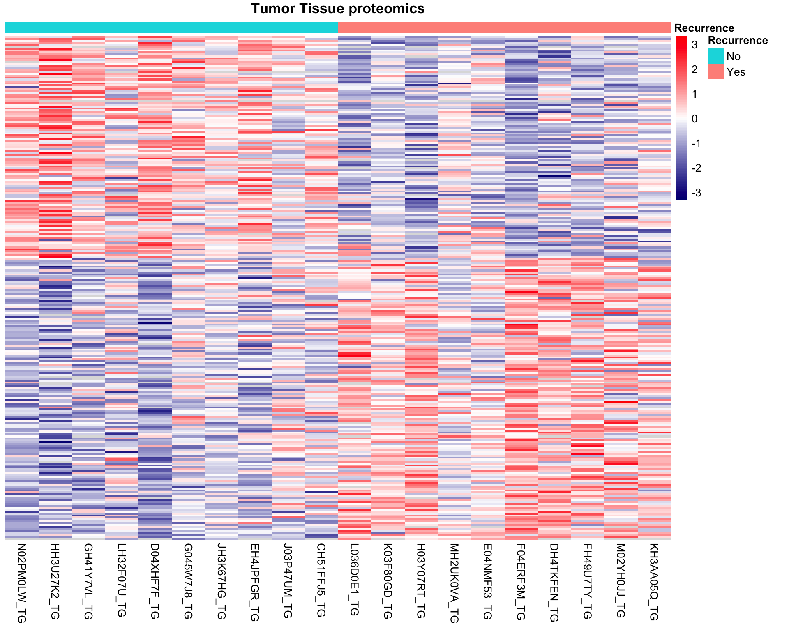
Owing to missing values, there might be a situation that only few observations in sample groups, resulting in unreliable t-statistics. To this end, we used probabilistic dropout model (proDA R package) to account for data missingness and identify differentially abundant entities that are significantly associated with cancer recurrence. Note that features in heatmap are ordered by their t-statistics.
# Fit linear probabilistic dropout model to normalized data
fit <- proDA::proDA(datMat, design = ~ smpAnno$Recurrence)
# fit
# Check coefficient names for Parameter 'contrast' in proDA::test_diff()
# proDA::result_names(fit)
# Identify significant differentially abundant entities
all_proDAProTumorRes <- proDA::test_diff(fit,
contrast = Intercept + `smpAnno$RecurrenceYes` - Intercept,
sort_by = 'pval')
proDAProTumorRes <- dplyr::select(all_proDAProTumorRes, -c(diff, se, df, avg_abundance, n_approx, n_obs)) %>%
dplyr::filter(pval < 0.05) %>%
dplyr::mutate(Gene = plyr::mapvalues(name,
from = featInfo$Protein.Groups,
to = featInfo$Genes,
warn_missing = F))
proDAProTumorRes name pval adj_pval t_statistic Gene
1 P15169 0.0003688933 0.9691863 -4.370342 CPN1
2 Q9BQS2 0.0004825600 0.9691863 4.249161 SYT15
3 Q93096 0.0007703864 0.9691863 4.038758 PTP4A1
4 Q9NWW5 0.0007931467 0.9691863 4.025681 CLN6
5 P28290 0.0012683855 0.9691863 3.814962 ITPRID2
6 Q9Y312 0.0016180489 0.9691863 3.705683 AAR2
7 Q8NBN7 0.0018922141 0.9691863 3.635381 RDH13
8 Q9BZK7 0.0022047026 0.9691863 -3.566671 TBL1XR1
9 P54687 0.0040665740 0.9691863 -3.290398 BCAT1
10 Q16585 0.0042086408 0.9691863 -3.274831 SGCB
11 O15460 0.0051865611 0.9691863 -3.179901 P4HA2
12 Q8TCS8 0.0057363317 0.9691863 3.133977 PNPT1
13 Q16643 0.0061147308 0.9691863 -3.104803 DBN1
14 P56181 0.0061971626 0.9691863 3.098682 NDUFV3
15 P11586 0.0062545159 0.9691863 -3.094469 MTHFD1
16 Q9NQT8 0.0064359473 0.9691863 3.081388 KIF13B
17 O14974 0.0065166832 0.9691863 -3.075682 PPP1R12A
18 Q9UDW1 0.0066321558 0.9691863 3.067640 UQCR10
19 Q9UNF0 0.0070605882 0.9691863 3.038947 PACSIN2
20 Q9BUR5 0.0072358657 0.9691863 3.027693 APOO
21 Q9HAB8 0.0074124346 0.9691863 3.016622 PPCS
22 Q969X1 0.0077082540 0.9691863 2.998635 TMBIM1
23 Q6P6C2 0.0077468241 0.9691863 -2.996340 ALKBH5
24 O15484 0.0080737363 0.9691863 2.977316 CAPN5
25 P08133 0.0086425939 0.9691863 -2.945927 ANXA6
26 O14548 0.0087759886 0.9691863 2.938857 COX7A2L
27 Q99487 0.0089646857 0.9691863 2.929031 PAFAH2
28 O14949 0.0089666203 0.9691863 2.928931 UQCRQ
29 Q9NVH1 0.0090707398 0.9691863 2.923596 DNAJC11
30 Q9Y2J2 0.0091902841 0.9691863 -2.917543 EPB41L3
31 Q9Y277 0.0093051611 0.9691863 2.911797 VDAC3
32 P27694 0.0101432318 0.9691863 -2.871843 RPA1
33 O00330 0.0106858127 0.9691863 2.847642 PDHX
34 Q96P70 0.0107255867 0.9691863 -2.845915 IPO9
35 P62891;Q59GN2 0.0107547760 0.9691863 -2.844651 RPL39;RPL39P5
36 O15121 0.0108837667 0.9691863 -2.839107 DEGS1
37 P25325 0.0111094634 0.9691863 2.829555 MPST
38 Q96AA3 0.0111166367 0.9691863 -2.829255 RFT1
39 P05023 0.0113042253 0.9691863 2.821462 ATP1A1
40 P29373 0.0113539770 0.9691863 -2.819416 CRABP2
41 Q8TD10 0.0115721619 0.9691863 -2.810544 MIPOL1
42 Q9NY33 0.0118801363 0.9691863 2.798291 DPP3
43 P18669 0.0120438668 0.9691863 -2.791901 PGAM1
44 P41236 0.0120534969 0.9691863 -2.791528 PPP1R2
45 P78381 0.0123709072 0.9691863 2.779383 SLC35A2
46 Q7Z406 0.0128545256 0.9691863 2.761441 MYH14
47 Q8TE77 0.0128824025 0.9691863 2.760427 SSH3
48 P21796 0.0132641976 0.9691863 2.746742 VDAC1
49 Q9NQT5 0.0135035386 0.9691863 -2.738355 EXOSC3
50 Q9NUP1 0.0135806772 0.9691863 2.735682 BLOC1S4
51 Q9Y6N5 0.0137933941 0.9691863 2.728386 SQOR
52 Q9HAV7 0.0139831503 0.9691863 2.721967 GRPEL1
53 Q16762 0.0139837914 0.9691863 2.721946 TST
54 P35244 0.0140958107 0.9691863 -2.718196 RPA3
55 P26583 0.0145534876 0.9691863 -2.703165 HMGB2
56 Q8NBM8 0.0146175526 0.9691863 -2.701097 PCYOX1L
57 O00478 0.0147142486 0.9691863 -2.697993 BTN3A3
58 P13674 0.0148872536 0.9691863 -2.692486 P4HA1
59 O14841 0.0150088634 0.9691863 2.688652 OPLAH
60 Q6FIF0 0.0152430677 0.9691863 2.681351 ZFAND6
61 Q6P158 0.0153741232 0.9691863 -2.677311 DHX57
62 P22695 0.0162490999 0.9691863 2.651157 UQCRC2
63 P11182 0.0164721850 0.9691863 2.644703 DBT
64 P09874 0.0165414896 0.9691863 -2.642715 PARP1
65 Q13232 0.0165822945 0.9691863 2.641549 NME3
66 Q9BQ61 0.0172296951 0.9691863 -2.623394 TRIR
67 Q9Y6C9 0.0172741830 0.9691863 2.622170 MTCH2
68 P21964 0.0176737755 0.9691863 2.611312 COMT
69 Q6IC98 0.0181320468 0.9691863 2.599142 GRAMD4
70 Q96Q11 0.0186954343 0.9691863 -2.584575 TRNT1
71 A0AV96 0.0188666289 0.9691863 2.580231 RBM47
72 P49447 0.0191228526 0.9691863 2.573798 CYB561
73 P08574 0.0193346320 0.9691863 2.568543 CYC1
74 Q9H1Z4 0.0196129967 0.9691863 2.561718 WDR13
75 O43772 0.0197333831 0.9691863 2.558794 SLC25A20
76 O15211 0.0207502748 0.9691863 -2.534753 RGL2
77 Q86VU5 0.0209445917 0.9691863 2.530286 COMTD1
78 O95202 0.0209625232 0.9691863 2.529875 LETM1
79 P19367 0.0212126802 0.9691863 2.524187 HK1
80 Q16563 0.0217399722 0.9691863 2.512400 SYPL1
81 P61962 0.0217556730 0.9691863 -2.512053 DCAF7
82 Q6UW02 0.0220810857 0.9691863 2.504918 CYP20A1
83 Q9ULF5 0.0220845220 0.9691863 -2.504843 SLC39A10
84 P48163 0.0223173629 0.9691863 2.499799 ME1
85 Q16527 0.0223912876 0.9691863 -2.498207 CSRP2
86 P46782 0.0224667019 0.9691863 -2.496589 RPS5
87 Q02539 0.0225189518 0.9691863 -2.495471 H1-1
88 Q16539 0.0225344189 0.9691863 -2.495141 MAPK14
89 Q9P266 0.0229711316 0.9691863 2.485896 JCAD
90 Q9H1C4 0.0232894455 0.9691863 2.479261 UNC93B1
91 Q96BP3 0.0233625924 0.9691863 -2.477749 PPWD1
92 Q6P4A8 0.0236259698 0.9691863 -2.472339 PLBD1
93 Q96EP5 0.0237202895 0.9691863 2.470416 DAZAP1
94 Q8TED1 0.0238775672 0.9691863 -2.467224 GPX8
95 P42126 0.0239035438 0.9691863 2.466699 ECI1
96 Q07960 0.0239376278 0.9691863 2.466011 ARHGAP1
97 Q9C0B1 0.0241228113 0.9691863 -2.462287 FTO
98 P05026 0.0241295753 0.9691863 2.462152 ATP1B1
99 Q8IZH2 0.0243273189 0.9691863 -2.458206 XRN1
100 P30626 0.0243570890 0.9691863 2.457615 SRI
101 P31930 0.0243986095 0.9691863 2.456791 UQCRC1
102 P54760 0.0244709985 0.9691863 2.455358 EPHB4
103 Q9BU61 0.0244770007 0.9691863 2.455239 NDUFAF3
104 Q6XQN6 0.0245527414 0.9691863 2.453745 NAPRT
105 Q5R372 0.0247104709 0.9691863 -2.450646 RABGAP1L
106 Q15653 0.0247604055 0.9691863 2.449669 NFKBIB
107 O15379 0.0249627789 0.9691863 -2.445727 HDAC3
108 P16949 0.0251195455 0.9691863 -2.442695 STMN1
109 P11802 0.0252850619 0.9691863 -2.439512 CDK4
110 O14683 0.0253500382 0.9691863 2.438268 TP53I11
111 Q5XKP0 0.0258772570 0.9691863 2.428283 MICOS13
112 Q9ULR0 0.0258912696 0.9691863 -2.428020 ISY1
113 Q4L180 0.0260711104 0.9691863 -2.424659 FILIP1L
114 L0R6Q1 0.0261707385 0.9691863 2.422807 SLC35A4
115 Q8TEQ8 0.0262915676 0.9691863 2.420569 PIGO
116 P20674 0.0263946130 0.9691863 2.418668 COX5A
117 Q0P6H9 0.0272641507 0.9691863 2.402899 TMEM62
118 Q9NWU1 0.0276526410 0.9691863 2.396005 OXSM
119 P48449 0.0278363358 0.9691863 2.392776 LSS
120 Q9NRP0 0.0280772029 0.9691863 -2.388574 OSTC
121 P27448 0.0283761169 0.9691863 -2.383404 MARK3
122 Q9Y2V7 0.0285049439 0.9691863 2.381192 COG6
123 Q9ULP9 0.0292879134 0.9691863 2.367945 TBC1D24
124 P00156 0.0307572754 0.9691863 2.343951 MT-CYB
125 P33991 0.0307761006 0.9691863 -2.343651 MCM4
126 Q14318 0.0311698825 0.9691863 -2.337405 FKBP8
127 Q8N2F6 0.0313584527 0.9691863 2.334441 ARMC10
128 Q9HBH5 0.0313617008 0.9691863 2.334390 RDH14
129 Q96B23 0.0314476923 0.9691863 2.333043 C18orf25
130 Q16718 0.0319168393 0.9691863 2.325758 NDUFA5
131 Q9Y314 0.0322542593 0.9691863 2.320579 NOSIP
132 Q5SW79 0.0323712705 0.9691863 -2.318795 CEP170
133 Q8N465 0.0325673893 0.9691863 2.315818 D2HGDH
134 O95573 0.0326725164 0.9691863 2.314230 ACSL3
135 Q9UN86 0.0327586934 0.9691863 -2.312931 G3BP2
136 Q16850 0.0333713954 0.9691863 2.303786 CYP51A1
137 Q2TAA5 0.0335592806 0.9691863 -2.301013 ALG11
138 Q96AB3 0.0336239937 0.9691863 2.300061 ISOC2
139 P50479 0.0337816651 0.9691863 -2.297749 PDLIM4
140 Q9Y548 0.0340995926 0.9691863 2.293118 YIPF1
141 Q8NBJ4 0.0344847833 0.9691863 2.287560 GOLM1
142 Q9H8Y8 0.0345056327 0.9691863 2.287260 GORASP2
143 Q8TD16 0.0350379944 0.9691863 -2.279677 BICD2
144 Q14802 0.0351761373 0.9691863 2.277727 FXYD3
145 P07437 0.0353031564 0.9691863 -2.275939 TUBB
146 P83876 0.0358414386 0.9691863 -2.268431 TXNL4A
147 Q6P996 0.0362569453 0.9691863 2.262707 PDXDC1
148 Q9Y5B8 0.0363025416 0.9691863 -2.262082 NME7
149 Q9NNW7 0.0367015563 0.9691863 2.256648 TXNRD2
150 Q99735 0.0367414083 0.9691863 2.256108 MGST2
151 P04406 0.0373731653 0.9691863 -2.247623 GAPDH
152 P15927 0.0373780525 0.9691863 -2.247558 RPA2
153 P35270 0.0378400376 0.9691863 2.241437 SPR
154 Q8NDA8 0.0379734706 0.9691863 2.239682 MROH1
155 Q8IYB5 0.0381440974 0.9691863 2.237446 SMAP1
156 Q15020 0.0383194747 0.9691863 -2.235157 SART3
157 P35659 0.0386173256 0.9691863 -2.231293 DEK
158 O75907 0.0387801764 0.9691863 2.229191 DGAT1
159 Q14534 0.0389560714 0.9691863 2.226930 SQLE
160 Q9UBW7 0.0396314187 0.9691863 -2.218337 ZMYM2
161 O14681 0.0398177271 0.9691863 2.215990 EI24
162 Q9BVM4 0.0400478370 0.9691863 2.213105 GGACT
163 Q8N8S7 0.0401288202 0.9691863 -2.212093 ENAH
164 P27986 0.0406234594 0.9691863 -2.205954 PIK3R1
165 Q14157 0.0406305610 0.9691863 -2.205867 UBAP2L
166 P54886 0.0406363278 0.9691863 2.205796 ALDH18A1
167 O43395 0.0406693014 0.9691863 -2.205389 PRPF3
168 Q9NVA1 0.0407268515 0.9691863 2.204680 UQCC1
169 Q8N129 0.0408278088 0.9691863 -2.203438 CNPY4
170 Q96I25 0.0410884641 0.9691863 -2.200246 RBM17
171 Q9P2K3 0.0410923320 0.9691863 -2.200198 RCOR3
172 Q6UWE0 0.0411349109 0.9691863 2.199679 LRSAM1
173 P15144 0.0414044593 0.9691863 -2.196400 ANPEP
174 Q8N392 0.0415204819 0.9691863 -2.194995 ARHGAP18
175 P45381 0.0415711323 0.9691863 -2.194383 ASPA
176 P55209 0.0422418516 0.9691863 -2.186338 NAP1L1
177 P04070 0.0424108227 0.9691863 -2.184330 PROC
178 O00472 0.0427587573 0.9691863 2.180218 ELL2
179 Q14746 0.0431543393 0.9691863 2.175580 COG2
180 Q63HM1 0.0432254591 0.9691863 2.174750 AFMID
181 Q8IXM2 0.0433413756 0.9691863 -2.173401 BAP18
182 P0DMM9;P0DMN0 0.0434239320 0.9691863 2.172441 SULT1A3;SULT1A4
183 P49137 0.0436391810 0.9691863 -2.169948 MAPKAPK2
184 Q9ULC4 0.0436893676 0.9691863 -2.169369 MCTS1
185 Q96EK4 0.0437266413 0.9691863 -2.168938 THAP11
186 Q99611 0.0437595329 0.9691863 2.168559 SEPHS2
187 Q96N58 0.0438444840 0.9691863 -2.167581 ZNF578
188 Q00688 0.0438905409 0.9691863 -2.167051 FKBP3
189 Q9BUB7 0.0441242234 0.9691863 2.164371 TMEM70
190 Q99623 0.0442428815 0.9691863 2.163015 PHB2
191 Q6DKJ4 0.0443229596 0.9691863 -2.162102 NXN
192 Q16854 0.0448618543 0.9691863 2.155997 DGUOK
193 Q7Z7E8 0.0449198302 0.9691863 -2.155344 UBE2Q1
194 Q92504 0.0451606523 0.9691863 2.152640 SLC39A7
195 O43852 0.0452108309 0.9691863 -2.152078 CALU
196 Q14376 0.0453553408 0.9691863 2.150464 GALE
197 O60502 0.0457914523 0.9691863 -2.145620 OGA
198 Q92851 0.0460405798 0.9691863 -2.142872 CASP10
199 Q13277 0.0464279922 0.9691863 2.138625 STX3
200 Q8TEM1 0.0465556350 0.9691863 -2.137233 NUP210
201 P99999 0.0466208695 0.9691863 2.136523 CYCS
202 Q96GK7 0.0466675129 0.9691863 2.136015 FAHD2A
203 Q9Y3C0 0.0466774168 0.9691863 -2.135908 WASHC3
204 P19634 0.0468013732 0.9691863 2.134562 SLC9A1
205 Q9NZD2 0.0470280299 0.9691863 2.132111 GLTP
206 Q71U36 0.0472110993 0.9691863 -2.130138 TUBA1A
207 Q6UXB2 0.0474113093 0.9691863 2.127989 CXCL17
208 P28288 0.0483162352 0.9691863 2.118378 ABCD3
209 P61604 0.0484181651 0.9691863 2.117305 HSPE1
210 P24390 0.0484317323 0.9691863 2.117163 KDELR1
211 P27816 0.0485177294 0.9691863 -2.116260 MAP4
212 P47985 0.0487715779 0.9691863 2.113603 UQCRFS1
213 Q7Z5K2 0.0487957521 0.9691863 -2.113351 WAPL
214 Q96RE7 0.0488201168 0.9691863 -2.113097 NACC1
215 Q13177 0.0492274894 0.9691863 -2.108863 PAK2
216 P14649 0.0494404006 0.9691863 -2.106663 MYL6B
217 P46199 0.0499645734 0.9691863 2.101284 MTIF2# Plot molecular signatures in input data
# Order features according to t-statistics
featOrder <- dplyr::arrange(proDAProTumorRes, dplyr::desc(t_statistic))$name
# Change protein names to gene names
datMatSub <- datMat[featOrder, smpOrder]
rownames(datMatSub) <- plyr::mapvalues(rownames(datMatSub),
from = featInfo$Protein.Groups,
to = featInfo$Genes,
warn_missing = F)
pheatmap::pheatmap(datMatSub,
annotation_col = smpRecur,
color = colorRampPalette(c('navy', 'white', 'red'))(100),
cluster_rows = F, cluster_cols = F, show_rownames = F,
scale = 'row', main = 'Tumor Tissue proteomics (proDA)')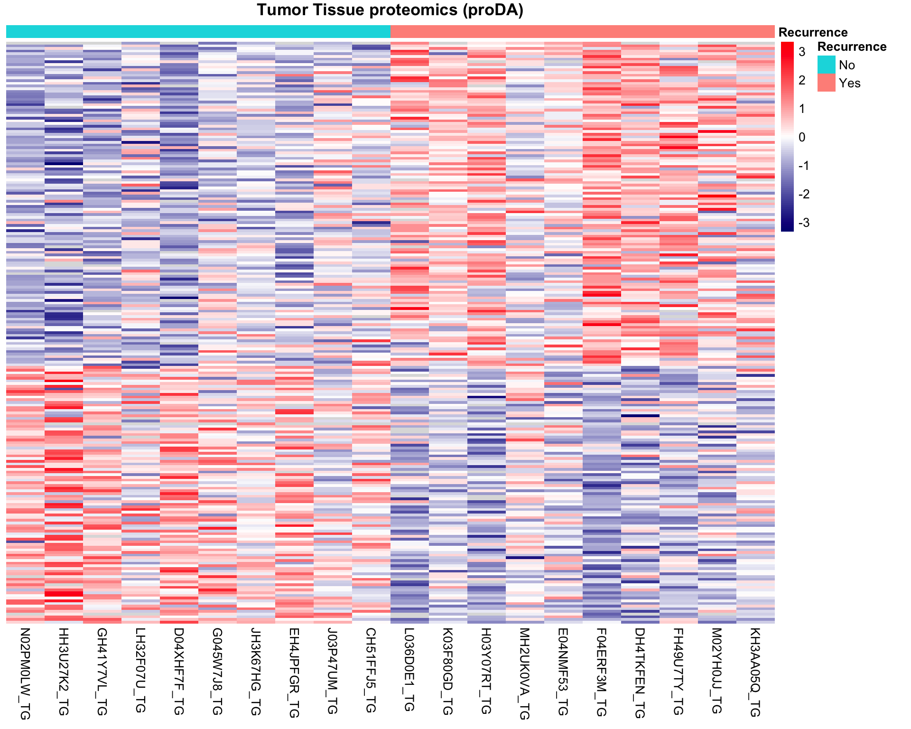
Visualize data of top 6 significant features based on proDA result
# Visualize data of top 6 significant features
topSigFeats <- proDAProTumorRes[1:6,] %>%
dplyr::select(name, pval, Gene) %>%
dplyr::rename(Feature = name, pVal = pval)
topSigFeatData <- tibble::as_tibble(datMat[topSigFeats$Feature,], rownames = 'Feature') %>%
tidyr::pivot_longer(cols = -'Feature',
names_to = 'Sample', values_to = 'Abundance') %>%
dplyr::left_join(topSigFeats, by = 'Feature') %>%
dplyr::mutate(Gene = paste0(Gene, '\n(p = ', round(pVal, 4), ')'),
Gene = factor(Gene, levels = unique(Gene))) %>%
dplyr::left_join(smpAnno, by = 'Sample')
ggplot(topSigFeatData, aes(x=Recurrence, y=Abundance, col=Recurrence, fill=Recurrence)) +
geom_boxplot(alpha = 0.3, outlier.shape = NA) +
geom_jitter(position = position_jitter(0.2), size = 2, show.legend = F) +
scale_color_manual(values=c('#00BFC4', '#F8766D')) +
scale_fill_manual(values=c('#00BFC4', '#F8766D')) +
facet_wrap(vars(Gene), scales = 'free') +
th + theme(strip.text = element_text(size = 13, face = 'bold'))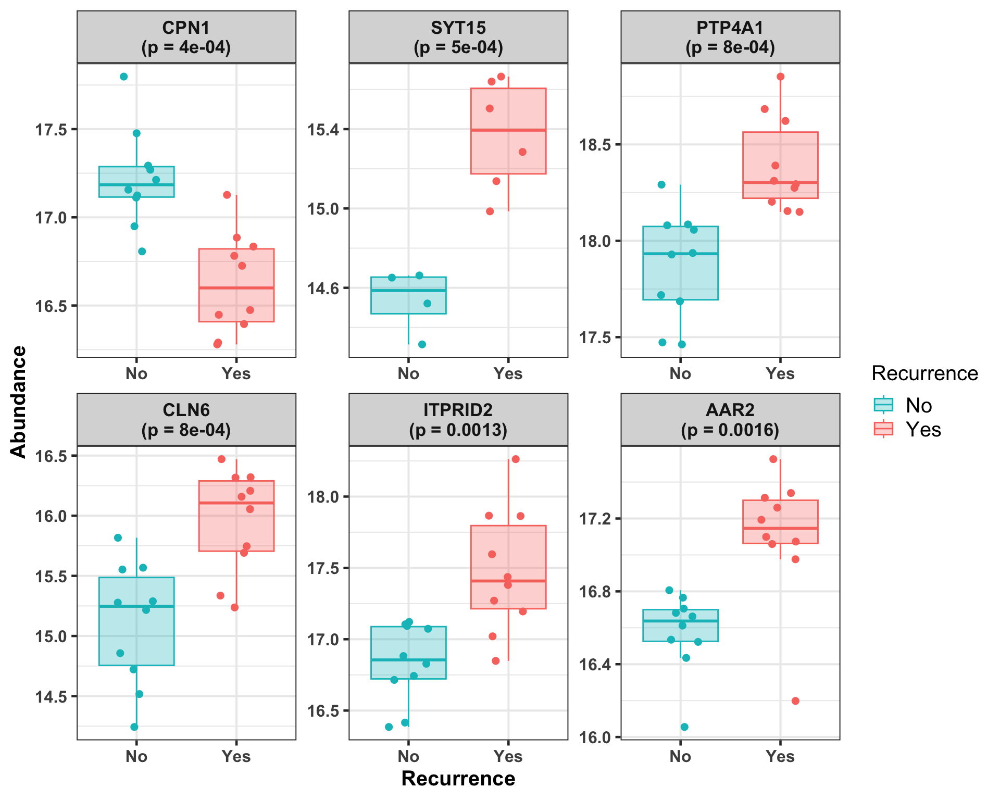
Assess data power by p-value histogram
p <- all_proDAProTumorRes$pval
hist(p, xlab = 'P-value', main = 'Tumor Tissue Proteomics (proDA)')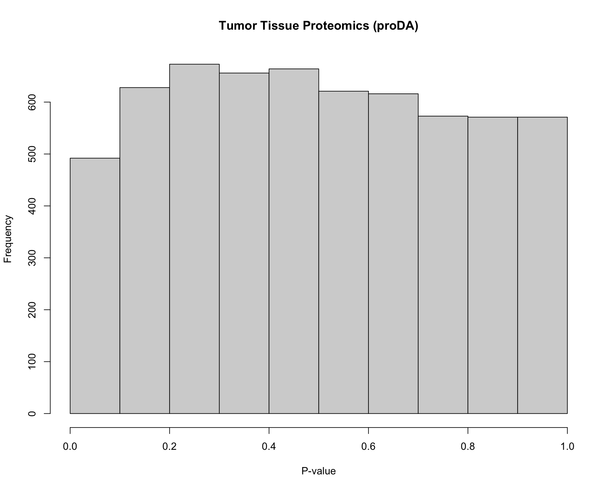
There is no significant association between PCs (Var1) and cancer recurrence (Var2).
# Display PCs that can significantly separate recurrence and non-recurrence
# patients
tPCASigRes[1] Var1 Var2 pVal pValAdj Stat Test
<0 rows> (or 0-length row.names)Normal samples
Display significant associations between learned PCs (Var1) and metadata variables (Var2)
# Subset normal samples
smpNormalIdx <- which(colData(proTissue)$Condition == 'Normal')
proNormal <- proTissue[, smpNormalIdx]
# Display significant associations between PCs and metadata variables
proNormalAssoRes <- doSOA(proNormal, meta_var = c('Recurrence', 'Gender', 'Age',
'Smoking', 'Stage', 'Metastasis'),
do_onlyPCA = T, pca_method = 'ppca', num_PCs = 18)
proNormalAssoRes$tPCASigRes Var1 Var2 pVal pValAdj Stat Test
1 PC6 Gender 0.01442428 0.7701386 -2.707362 T-test
2 PC16 Stage 0.01843157 0.7701386 5.097856 ANOVA
3 PC15 Recurrence 0.03563831 0.7701386 2.271252 T-testDisplay significant associations between features (Var1) and cancer recurrence (Var2) and observe molecular signatures in input data through heatmap. Note that features in heatmap are ordered by their t-statistics.
# Perform analysis
proNormalRes <- doSOA(proNormal, meta_var = 'Recurrence', pca_method = 'ppca',
num_PCs = 18, num_PCfeats = 30)
datMat <- proNormalRes$data
smpAnno <- proNormalRes$smpMetadata
tFeatSigRes <- proNormalRes$tFeatSigRes
tPCASigRes <- proNormalRes$tPCASigRes
pcaRes <- proNormalRes$pcaRes
pcTab <- proNormalRes$pcTab
pcTopFeatTab <- proNormalRes$pcTopFeatTab
# Display features that can significantly separate recurrence and non-recurrence
# patients
tFeatSigRes <- dplyr::mutate(tFeatSigRes, Gene = plyr::mapvalues(Var1,
from = featInfo$Protein.Groups,
to = featInfo$Genes,
warn_missing = F)) %>%
dplyr::select(-Test)
# Manually shorten names
tFeatSigRes$Var1[170] <- 'P09086;P14859'
tFeatSigRes$Gene[170] <- 'POU2F1;POU2F2'
tFeatSigRes$Var1[303] <- 'P0DP23;P0DP24'
tFeatSigRes$Gene[303] <- 'CALM1;CALM2'
tFeatSigRes Var1 Var2 pVal pValAdj Stat Gene
1 P08579 Recurrence 0.0001410636 0.4600567 -4.807520 SNRPB2
2 Q9UNP9 Recurrence 0.0002146910 0.4600567 -4.615740 PPIE
3 P17655 Recurrence 0.0002739187 0.4600567 4.505071 CAPN2
4 Q8IYB8 Recurrence 0.0003034675 0.4600567 -4.458648 SUPV3L1
5 P41227 Recurrence 0.0006123201 0.6973440 4.141962 NAA10
6 Q9Y6R4 Recurrence 0.0007046777 0.6973440 -4.517649 MAP3K4
7 Q9NXR1 Recurrence 0.0008416193 0.6973440 4.097122 NDE1
8 Q9UKU9 Recurrence 0.0009484324 0.6973440 3.945408 ANGPTL2
9 Q8WW59 Recurrence 0.0010349763 0.6973440 -3.906218 SPRYD4
10 Q9H0A0 Recurrence 0.0011795025 0.7152503 -3.847563 NAT10
11 P55209 Recurrence 0.0013722007 0.7564568 3.779659 NAP1L1
12 Q8TB03 Recurrence 0.0016405226 0.7595992 3.699490 CXorf38
13 Q7L311 Recurrence 0.0016927243 0.7595992 3.765158 ARMCX2
14 Q9Y5P4 Recurrence 0.0017536920 0.7595992 -3.669533 CERT1
15 Q9GZP9 Recurrence 0.0025835063 0.7596634 3.495307 DERL2
16 O43493 Recurrence 0.0031588644 0.7596634 -3.404642 TGOLN2
17 O43237 Recurrence 0.0034492243 0.7596634 3.364918 DYNC1LI2
18 Q27J81 Recurrence 0.0034951916 0.7596634 3.358933 INF2
19 P55263 Recurrence 0.0035625831 0.7596634 -3.350297 ADK
20 Q92508 Recurrence 0.0035667325 0.7596634 3.349771 PIEZO1
21 Q9BTZ2 Recurrence 0.0036933670 0.7596634 -3.333989 DHRS4
22 P54802 Recurrence 0.0037490035 0.7596634 -3.327223 NAGLU
23 O00264 Recurrence 0.0037955018 0.7596634 3.321643 PGRMC1
24 Q8N5G2 Recurrence 0.0043109728 0.7596634 -3.400224 MACO1
25 P63000 Recurrence 0.0044256017 0.7596634 3.252027 RAC1
26 P35869 Recurrence 0.0044951971 0.7596634 3.302539 AHR
27 Q9H490 Recurrence 0.0047616485 0.7596634 -3.275197 PIGU
28 Q99733 Recurrence 0.0049310251 0.7596634 3.202893 NAP1L4
29 P11310 Recurrence 0.0053685519 0.7596634 -3.164192 ACADM
30 Q7Z4W1 Recurrence 0.0054474920 0.7596634 -3.157540 DCXR
31 Q9Y6M1 Recurrence 0.0055060548 0.7596634 3.152665 IGF2BP2
32 Q13356 Recurrence 0.0055182681 0.7596634 -3.375066 PPIL2
33 Q9H3M7 Recurrence 0.0060844921 0.7596634 3.107069 TXNIP
34 P07942 Recurrence 0.0062265509 0.7596634 3.096519 LAMB1
35 P05204 Recurrence 0.0064479134 0.7596634 3.080538 HMGN2
36 Q13445 Recurrence 0.0067188116 0.7596634 -3.061693 TMED1
37 O15357 Recurrence 0.0068607612 0.7596634 -3.052112 INPPL1
38 P38919 Recurrence 0.0069012268 0.7596634 -3.049416 EIF4A3
39 Q9NP97 Recurrence 0.0069345352 0.7596634 3.047209 DYNLRB1
40 P52294 Recurrence 0.0072150537 0.7596634 3.029016 KPNA1
41 Q96RP7 Recurrence 0.0074420896 0.7596634 3.091716 GAL3ST4
42 P06127 Recurrence 0.0074607033 0.7596634 3.013640 CD5
43 Q6BCY4 Recurrence 0.0078994735 0.7596634 -2.987362 CYB5R2
44 Q15493 Recurrence 0.0079008929 0.7596634 -2.987279 RGN
45 P51159 Recurrence 0.0080508616 0.7596634 -2.978623 RAB27A
46 Q9Y3B7 Recurrence 0.0080706803 0.7596634 -2.977490 MRPL11
47 P62328 Recurrence 0.0081720349 0.7596634 2.971742 TMSB4X
48 P04083 Recurrence 0.0081927621 0.7596634 2.970575 ANXA1
49 Q9HAS0 Recurrence 0.0083434910 0.7596634 3.152025 C17orf75
50 Q8WVY7 Recurrence 0.0084279076 0.7596634 -2.957531 UBLCP1
51 Q9NXW2 Recurrence 0.0087992798 0.7596634 2.982247 DNAJB12
52 Q9BQE4 Recurrence 0.0089042239 0.7596634 2.932157 SELENOS
53 Q14515 Recurrence 0.0090628928 0.7596634 2.923996 SPARCL1
54 P09001 Recurrence 0.0090993166 0.7596634 -2.922142 MRPL3
55 P60866 Recurrence 0.0093098124 0.7596634 -2.911566 RPS20
56 P40855 Recurrence 0.0093199408 0.7596634 3.145300 PEX19
57 P42126 Recurrence 0.0096535174 0.7596634 -2.894784 ECI1
58 Q99611 Recurrence 0.0097945908 0.7596634 -2.930768 SEPHS2
59 P82664 Recurrence 0.0098275493 0.7596634 -3.115558 MRPS10
60 P62750 Recurrence 0.0099794781 0.7596634 -2.879393 RPL23A
61 Q02040 Recurrence 0.0100150612 0.7596634 2.877743 AKAP17A
62 O94762 Recurrence 0.0100955616 0.7596634 2.893742 RECQL5
63 Q92506 Recurrence 0.0101011177 0.7596634 -2.893482 HSD17B8
64 Q86YS6 Recurrence 0.0101139969 0.7596634 -2.915325 RAB43
65 Q96S44 Recurrence 0.0104128992 0.7596634 -2.859663 TP53RK
66 Q9H8H2 Recurrence 0.0106298692 0.7596634 -3.656010 DDX31
67 O00299 Recurrence 0.0106720389 0.7596634 2.848242 CLIC1
68 P24821 Recurrence 0.0108316792 0.7596634 2.841338 TNC
69 Q8IV38 Recurrence 0.0111501316 0.7596634 -2.921839 ANKMY2
70 Q9P0M6 Recurrence 0.0112624793 0.7596634 -2.823185 MACROH2A2
71 Q92759 Recurrence 0.0113474238 0.7596634 -2.986520 GTF2H4
72 P62888 Recurrence 0.0114946952 0.7596634 -2.813676 RPL30
73 Q96PE3 Recurrence 0.0115039205 0.7596634 2.813302 INPP4A
74 Q99569 Recurrence 0.0115586130 0.7596634 2.829717 PKP4
75 P00390 Recurrence 0.0119176859 0.7596634 -2.796818 GSR
76 Q9BUJ2 Recurrence 0.0120814741 0.7596634 -2.790445 HNRNPUL1
77 P48059 Recurrence 0.0121280311 0.7596634 2.788649 LIMS1
78 Q8N5I2 Recurrence 0.0121745555 0.7596634 2.877358 ARRDC1
79 P78539 Recurrence 0.0122438926 0.7596634 2.784206 SRPX
80 Q15056 Recurrence 0.0123467335 0.7596634 2.780297 EIF4H
81 Q15847 Recurrence 0.0125948671 0.7596634 2.770992 ADIRF
82 O75052 Recurrence 0.0127950644 0.7596634 -3.024577 NOS1AP
83 P52789 Recurrence 0.0128855732 0.7596634 -2.760312 HK2
84 Q9UIG0 Recurrence 0.0133893833 0.7596634 -2.742337 BAZ1B
85 O95833 Recurrence 0.0135336446 0.7596634 2.737310 CLIC3
86 O95298 Recurrence 0.0136226363 0.7596634 -2.734234 NDUFC2
87 P24723 Recurrence 0.0136538461 0.7596634 2.770230 PRKCH
88 Q13838 Recurrence 0.0137202803 0.7596634 -2.730881 DDX39B
89 O75909 Recurrence 0.0138849547 0.7596634 -2.742485 CCNK
90 Q9UJX2 Recurrence 0.0139100987 0.7596634 2.724428 CDC23
91 O15270 Recurrence 0.0140294165 0.7596634 2.720415 SPTLC2
92 Q8TF65 Recurrence 0.0143974089 0.7596634 2.744449 GIPC2
93 P61247 Recurrence 0.0143981764 0.7596634 -2.708215 RPS3A
94 Q8WUH6 Recurrence 0.0145456244 0.7596634 2.703420 TMEM263
95 P21359 Recurrence 0.0149433740 0.7596634 -2.707367 NF1
96 O43752 Recurrence 0.0150651211 0.7596634 -2.686888 STX6
97 O75911 Recurrence 0.0150832542 0.7596634 2.686321 DHRS3
98 O60264 Recurrence 0.0155651201 0.7596634 -2.671483 SMARCA5
99 Q9H9J2 Recurrence 0.0155997747 0.7596634 2.670433 MRPL44
100 Q9H7Z7 Recurrence 0.0156296529 0.7596634 -2.669530 PTGES2
101 P83881 Recurrence 0.0156331484 0.7596634 2.669424 RPL36A
102 Q8TCG2 Recurrence 0.0157940034 0.7596634 -2.850096 PI4K2B
103 Q8IX01 Recurrence 0.0159266739 0.7596634 -2.845421 SUGP2
104 Q9GZS3 Recurrence 0.0159581985 0.7596634 2.659700 WDR61
105 Q9H3H5 Recurrence 0.0159961541 0.7596634 -2.658577 DPAGT1
106 P07477;Q9BYE2 Recurrence 0.0161655620 0.7596634 2.653595 PRSS1;TMPRSS13
107 Q9UHP3 Recurrence 0.0162509160 0.7596634 2.706337 USP25
108 Q96G03 Recurrence 0.0163680618 0.7596634 -2.647705 PGM2
109 O43395 Recurrence 0.0164134222 0.7596634 -2.646395 PRPF3
110 O95777 Recurrence 0.0165570132 0.7596634 -2.642271 LSM8
111 Q99828 Recurrence 0.0166090899 0.7596634 2.656660 CIB1
112 Q16543 Recurrence 0.0166489125 0.7596634 2.639650 CDC37
113 Q8N4T8 Recurrence 0.0167071610 0.7596634 -2.637995 CBR4
114 Q9NR28 Recurrence 0.0169601906 0.7596634 -2.630871 DIABLO
115 Q5TA45 Recurrence 0.0170472187 0.7596634 -2.644131 INTS11
116 P18621 Recurrence 0.0170529808 0.7596634 -2.628284 RPL17
117 Q9UGI8 Recurrence 0.0170781492 0.7596634 2.627585 TES
118 Q9NPA8 Recurrence 0.0173327342 0.7596634 2.620564 ENY2
119 Q9UNQ2 Recurrence 0.0173732663 0.7596634 -2.907803 DIMT1
120 Q8N3P4 Recurrence 0.0183612752 0.7596634 2.593164 VPS8
121 Q9H6T3 Recurrence 0.0185600337 0.7596634 2.620269 RPAP3
122 Q9UBX1 Recurrence 0.0191029073 0.7596634 2.625509 CTSF
123 Q9UBT2 Recurrence 0.0191286029 0.7596634 -2.573655 UBA2
124 P23921 Recurrence 0.0191709641 0.7596634 2.703888 RRM1
125 Q99543 Recurrence 0.0195800777 0.7596634 -2.692473 DNAJC2
126 P41236 Recurrence 0.0198414380 0.7596634 2.556185 PPP1R2
127 Q9UMS0 Recurrence 0.0201310978 0.7596634 2.563764 NFU1
128 O60502 Recurrence 0.0201841163 0.7596634 2.547997 OGA
129 Q15653 Recurrence 0.0202761769 0.7596634 -2.617457 NFKBIB
130 Q5T1V6 Recurrence 0.0203144846 0.7596634 2.575792 DDX59
131 P46777 Recurrence 0.0204644491 0.7596634 -2.541396 RPL5
132 Q14457 Recurrence 0.0205781067 0.7596634 -2.747166 BECN1
133 Q8IYS1 Recurrence 0.0210532727 0.7596634 2.689358 PM20D2
134 P23469 Recurrence 0.0212165569 0.7596634 -2.524099 PTPRE
135 Q8NBQ5 Recurrence 0.0216593946 0.7596634 -2.514183 HSD17B11
136 Q9Y5B9 Recurrence 0.0216856720 0.7596634 -2.513601 SUPT16H
137 P15502 Recurrence 0.0219350057 0.7596634 2.508108 ELN
138 P62841 Recurrence 0.0219987509 0.7596634 -2.506714 RPS15
139 P62277 Recurrence 0.0221764351 0.7596634 -2.502846 RPS13
140 P08123 Recurrence 0.0222574940 0.7596634 2.501091 COL1A2
141 Q9HBH5 Recurrence 0.0224122433 0.7596634 -2.497757 RDH14
142 P37235 Recurrence 0.0224591441 0.7596634 2.496751 HPCAL1
143 Q86U44 Recurrence 0.0231804287 0.7596634 -2.481524 METTL3
144 Q15080 Recurrence 0.0233260146 0.7596634 -2.478505 NCF4
145 Q14151 Recurrence 0.0234164563 0.7596634 -2.476638 SAFB2
146 P20908 Recurrence 0.0236032321 0.7596634 2.472804 COL5A1
147 P49406 Recurrence 0.0237245490 0.7596634 -2.470329 MRPL19
148 P62312 Recurrence 0.0238297724 0.7596634 -2.468192 LSM6
149 Q14244 Recurrence 0.0240601589 0.7596634 2.463544 MAP7
150 Q8TF01 Recurrence 0.0242407980 0.7596634 2.525510 PNISR
151 Q9H5X1 Recurrence 0.0243803452 0.7596634 -2.457153 CIAO2A
152 Q86YM7 Recurrence 0.0245760043 0.7596634 2.453286 HOMER1
153 O43708 Recurrence 0.0248327764 0.7596634 -2.448256 GSTZ1
154 Q96Q11 Recurrence 0.0250973790 0.7596634 2.443122 TRNT1
155 Q14152 Recurrence 0.0252024649 0.7596634 -2.441098 EIF3A
156 Q9H2M9 Recurrence 0.0254114720 0.7596634 -2.437094 RAB3GAP2
157 Q8NBK3 Recurrence 0.0254472027 0.7596634 2.464037 SUMF1
158 Q9BRV3 Recurrence 0.0256580680 0.7596634 -2.578516 SLC50A1
159 Q05513 Recurrence 0.0261462700 0.7596634 2.423261 PRKCZ
160 Q13753 Recurrence 0.0262080235 0.7596634 2.422115 LAMC2
161 O75787 Recurrence 0.0262423220 0.7596634 -2.655413 ATP6AP2
162 Q96P44 Recurrence 0.0263173453 0.7596634 2.420093 COL21A1
163 O14776 Recurrence 0.0263805031 0.7596634 -2.418928 TCERG1
164 Q9GZZ8 Recurrence 0.0264738029 0.7596634 2.417212 LACRT
165 P18887 Recurrence 0.0265318538 0.7596634 -2.416147 XRCC1
166 P50914 Recurrence 0.0265780592 0.7596634 -2.415301 RPL14
167 P51116 Recurrence 0.0269526383 0.7596634 2.421049 FXR2
168 Q08397 Recurrence 0.0270125319 0.7596634 2.407413 LOXL1
169 Q5JTV8 Recurrence 0.0271112952 0.7596634 -2.405636 TOR1AIP1
170 P09086;P14859 Recurrence 0.0271582519 0.7596634 -2.514983 POU2F1;POU2F2
171 P30049 Recurrence 0.0273798599 0.7596634 -2.400836 ATP5F1D
172 P98194 Recurrence 0.0274079433 0.7596634 -2.400336 ATP2C1
173 P51689 Recurrence 0.0276068477 0.7596634 2.396813 ARSD
174 P43405 Recurrence 0.0277107700 0.7596634 -2.394981 SYK
175 Q99417 Recurrence 0.0278201603 0.7596634 2.393060 MYCBP
176 P01700 Recurrence 0.0279008260 0.7596634 2.391648 IGLV1-47
177 Q8WVM0 Recurrence 0.0280800236 0.7596634 -2.566055 TFB1M
178 Q9H8Y8 Recurrence 0.0281204477 0.7596634 -2.387823 GORASP2
179 P40616 Recurrence 0.0281992933 0.7596634 -2.386456 ARL1
180 P29474 Recurrence 0.0283133286 0.7596634 2.396726 NOS3
181 O14493 Recurrence 0.0284556717 0.7596634 2.382037 CLDN4
182 Q9H300 Recurrence 0.0285442542 0.7596634 -2.392707 PARL
183 P02452 Recurrence 0.0287302414 0.7596634 2.377346 COL1A1
184 Q9HC84 Recurrence 0.0287463339 0.7596634 2.377072 MUC5B
185 Q6ZVM7 Recurrence 0.0288816062 0.7596634 2.374777 TOM1L2
186 P13645 Recurrence 0.0289009233 0.7596634 2.374450 KRT10
187 Q14112 Recurrence 0.0290681005 0.7596634 2.371630 NID2
188 P54098 Recurrence 0.0292691661 0.7596634 -2.368258 POLG
189 Q96HH6 Recurrence 0.0296094213 0.7596634 -2.388142 TMEM19
190 Q9NVV5 Recurrence 0.0300744614 0.7596634 -2.395736 AIG1
191 Q9NY47 Recurrence 0.0303239130 0.7596634 2.350914 CACNA2D2
192 Q99638 Recurrence 0.0304146695 0.7596634 -2.361237 RAD9A
193 Q9UQE7 Recurrence 0.0305592701 0.7596634 -2.347121 SMC3
194 Q69YL0 Recurrence 0.0306096457 0.7596634 2.449706 NCBP2AS2
195 Q8NFD5 Recurrence 0.0306850173 0.7596634 2.345106 ARID1B
196 P22570 Recurrence 0.0306984322 0.7596634 -2.344891 FDXR
197 Q9Y3C6 Recurrence 0.0308789379 0.7596634 -2.342012 PPIL1
198 P45954 Recurrence 0.0309249575 0.7596634 -2.341281 ACADSB
199 Q8NDA8 Recurrence 0.0309490205 0.7596634 -2.340899 MROH1
200 Q8NGC0 Recurrence 0.0309829557 0.7596634 -2.340361 OR5AU1
201 P84157 Recurrence 0.0310902837 0.7596634 2.338662 MXRA7
202 O95817 Recurrence 0.0313123581 0.7596634 2.335164 BAG3
203 Q9UHB9 Recurrence 0.0315415095 0.7596634 -2.331578 SRP68
204 Q9P258 Recurrence 0.0315742844 0.7596634 -2.331068 RCC2
205 Q9BV57 Recurrence 0.0315926998 0.7596634 -2.330781 ADI1
206 Q9Y2V2 Recurrence 0.0320957603 0.7596634 2.323006 CARHSP1
207 Q96FZ2 Recurrence 0.0323282638 0.7596634 2.585705 HMCES
208 Q8N4Q0 Recurrence 0.0324358357 0.7596634 -2.317813 ZADH2
209 Q9BZQ6 Recurrence 0.0324814621 0.7596634 2.341431 EDEM3
210 Q9NPY3 Recurrence 0.0325336210 0.7596634 2.316330 CD93
211 Q9Y259 Recurrence 0.0328468411 0.7596634 2.350490 CHKB
212 O14561 Recurrence 0.0329547982 0.7596634 2.348802 NDUFAB1
213 P16050 Recurrence 0.0329701193 0.7596634 2.348563 ALOX15
214 Q9H6S1 Recurrence 0.0330914470 0.7596634 2.363637 AZI2
215 Q8NCH0 Recurrence 0.0331886092 0.7596634 2.306498 CHST14
216 Q12906 Recurrence 0.0332670918 0.7596634 -2.305332 ILF3
217 Q495W5 Recurrence 0.0334029136 0.7596634 2.464765 FUT11
218 Q96KN1 Recurrence 0.0334193954 0.7596634 2.314284 LRATD2
219 Q03135 Recurrence 0.0337763257 0.7596634 2.297827 CAV1
220 Q99715 Recurrence 0.0339504362 0.7596634 2.295285 COL12A1
221 Q92572 Recurrence 0.0340124649 0.7596634 -2.294383 AP3S1
222 Q7Z3B4 Recurrence 0.0340626545 0.7596634 -2.293654 NUP54
223 Q5VWZ2 Recurrence 0.0344868344 0.7596634 -2.287530 LYPLAL1
224 P37268 Recurrence 0.0346306828 0.7596634 -2.285469 FDFT1
225 Q13137 Recurrence 0.0347596662 0.7596634 2.283628 CALCOCO2
226 P55036 Recurrence 0.0347641970 0.7596634 2.283564 PSMD4
227 O76003 Recurrence 0.0349478621 0.7596634 2.280953 GLRX3
228 P12830 Recurrence 0.0349580119 0.7596634 2.280809 CDH1
229 Q9H089 Recurrence 0.0350381098 0.7596634 2.290598 LSG1
230 P61923 Recurrence 0.0350464280 0.7596634 -2.279558 COPZ1
231 Q8WW12 Recurrence 0.0353123418 0.7596634 2.275810 PCNP
232 Q3SXM5 Recurrence 0.0353429563 0.7596634 -2.275381 HSDL1
233 Q9NVR2 Recurrence 0.0354920213 0.7596634 -2.296454 INTS10
234 Q14331 Recurrence 0.0355457366 0.7596634 -2.283379 FRG1
235 Q15363 Recurrence 0.0357470203 0.7596634 -2.269741 TMED2
236 O75427 Recurrence 0.0359161696 0.7596634 -2.422364 LRCH4
237 Q04941 Recurrence 0.0361147174 0.7596634 2.264659 PLP2
238 P35908 Recurrence 0.0362239999 0.7596634 2.263158 KRT2
239 P02654 Recurrence 0.0362733463 0.7596634 2.262482 APOC1
240 Q15113 Recurrence 0.0362964557 0.7596634 2.262166 PCOLCE
241 O00587 Recurrence 0.0364139915 0.7596634 2.354495 MFNG
242 P28068 Recurrence 0.0366028501 0.7596634 -2.268649 HLA-DMB
243 Q9NP55 Recurrence 0.0366414940 0.7596634 2.257462 BPIFA1
244 Q9GZS1 Recurrence 0.0367126749 0.7596634 2.450731 POLR1E
245 Q13751 Recurrence 0.0367471914 0.7596634 2.256030 LAMB3
246 Q16787 Recurrence 0.0368909590 0.7596634 2.254087 LAMA3
247 P49754 Recurrence 0.0369016035 0.7596634 -2.253944 VPS41
248 P78368;Q9Y6M4 Recurrence 0.0371054107 0.7596634 2.251203 CSNK1G2;CSNK1G3
249 O14683 Recurrence 0.0371474870 0.7596634 -2.250639 TP53I11
250 Q9BYT8 Recurrence 0.0373688927 0.7596634 -2.247680 NLN
251 P04632 Recurrence 0.0375506764 0.7596634 2.245263 CAPNS1
252 P34059 Recurrence 0.0375995658 0.7596634 -2.296491 GALNS
253 P07437 Recurrence 0.0376804268 0.7596634 2.243544 TUBB
254 Q92879 Recurrence 0.0378102246 0.7596634 -2.241830 CELF1
255 Q96Q05 Recurrence 0.0378526481 0.7596634 2.241271 TRAPPC9
256 P63173 Recurrence 0.0380270104 0.7596634 -2.238979 RPL38
257 Q5RI15 Recurrence 0.0383166107 0.7596634 2.235195 COX20
258 Q16378 Recurrence 0.0385392142 0.7596634 2.232304 PRR4
259 Q8WU79 Recurrence 0.0385634287 0.7596634 -2.231990 SMAP2
260 Q96E52 Recurrence 0.0386031942 0.7596634 -2.241824 OMA1
261 O75556 Recurrence 0.0386905032 0.7596634 2.230347 SCGB2A1
262 Q16513 Recurrence 0.0387859460 0.7596634 2.229117 PKN2
263 P42677 Recurrence 0.0388006607 0.7596634 -2.228927 RPS27
264 Q8N7H5 Recurrence 0.0395140843 0.7596634 -2.219820 PAF1
265 P11047 Recurrence 0.0400455527 0.7596634 2.213133 LAMC1
266 P48637 Recurrence 0.0401891730 0.7596634 -2.211340 GSS
267 Q9H0E3 Recurrence 0.0408957310 0.7596634 -2.315569 SAP130
268 Q5VWJ9 Recurrence 0.0409037031 0.7596634 -2.202507 SNX30
269 P28702 Recurrence 0.0412117629 0.7596634 -2.232986 RXRB
270 O95208 Recurrence 0.0412220340 0.7596634 2.198617 EPN2
271 Q8TB96 Recurrence 0.0412405157 0.7596634 2.208358 ITFG1
272 P67812 Recurrence 0.0415973690 0.7596634 -2.194066 SEC11A
273 Q6P1X6 Recurrence 0.0416580203 0.7596634 -2.227365 C8orf82
274 P18085 Recurrence 0.0416612670 0.7596634 -2.193295 ARF4
275 Q14678 Recurrence 0.0417725595 0.7596634 2.191954 KANK1
276 P15924 Recurrence 0.0418416973 0.7596634 2.191123 DSP
277 P23634 Recurrence 0.0419029166 0.7596634 2.190388 ATP2B4
278 Q7L4I2 Recurrence 0.0419714011 0.7596634 2.189568 RSRC2
279 O94901 Recurrence 0.0421576509 0.7596634 2.187342 SUN1
280 P26639 Recurrence 0.0422807181 0.7596634 -2.185876 TARS1
281 Q8NI27 Recurrence 0.0423383158 0.7596634 -2.185191 THOC2
282 P61006 Recurrence 0.0423646122 0.7596634 -2.184878 RAB8A
283 Q9BVK6 Recurrence 0.0434816763 0.7596634 -2.171771 TMED9
284 P04156 Recurrence 0.0435144852 0.7596634 2.171391 PRNP
285 Q9H239 Recurrence 0.0436935812 0.7596634 2.169320 MMP28
286 P47914 Recurrence 0.0437716409 0.7596634 2.168420 RPL29
287 P25311 Recurrence 0.0442867087 0.7596634 2.162516 AZGP1
288 P09758 Recurrence 0.0443324545 0.7596634 2.161994 TACSTD2
289 Q13242 Recurrence 0.0444952226 0.7596634 2.160143 SRSF9
290 P11940 Recurrence 0.0445102604 0.7596634 -2.159973 PABPC1
291 Q9Y6A9 Recurrence 0.0446446707 0.7596634 -2.158449 SPCS1
292 O75396 Recurrence 0.0446640106 0.7596634 -2.158230 SEC22B
293 Q58FG1 Recurrence 0.0448463671 0.7596634 -2.156171 HSP90AA4P
294 P62263 Recurrence 0.0450080713 0.7596634 -2.154351 RPS14
295 Q8WVJ2 Recurrence 0.0450306558 0.7596634 2.154098 NUDCD2
296 Q92544 Recurrence 0.0450560695 0.7596634 -2.153812 TM9SF4
297 Q9P0I2 Recurrence 0.0451328565 0.7596634 -2.152951 EMC3
298 O14920 Recurrence 0.0452026482 0.7596634 2.152170 IKBKB
299 P55774 Recurrence 0.0454225698 0.7596634 2.159135 CCL18
300 Q96HS1 Recurrence 0.0455734911 0.7596634 -2.148035 PGAM5
301 O75821 Recurrence 0.0456247276 0.7596634 -2.147467 EIF3G
302 Q15031 Recurrence 0.0458194660 0.7596634 -2.145310 LARS2
303 P0DP23;P0DP24 Recurrence 0.0458770464 0.7596634 2.144674 CALM1;CALM2
304 P51809 Recurrence 0.0460682736 0.7596634 -2.142567 VAMP7
305 Q96BQ5 Recurrence 0.0460719430 0.7596634 -2.142527 CCDC127
306 Q9H8L6 Recurrence 0.0462377716 0.7596634 2.140706 MMRN2
307 P60604 Recurrence 0.0462888600 0.7596634 2.172130 UBE2G2
308 Q6UXI9 Recurrence 0.0465583336 0.7596634 2.137203 NPNT
309 P29558;Q6XE24 Recurrence 0.0466072343 0.7596634 2.136671 RBMS1;RBMS3
310 O14639 Recurrence 0.0466373341 0.7596634 2.136343 ABLIM1
311 P31150 Recurrence 0.0467030671 0.7596634 2.135629 GDI1
312 P62269 Recurrence 0.0469131368 0.7596634 -2.133352 RPS18
313 Q13214 Recurrence 0.0470080079 0.7596634 2.132327 SEMA3B
314 O75822 Recurrence 0.0470377007 0.7596634 2.132006 EIF3J
315 Q5S007 Recurrence 0.0474714733 0.7596634 -2.127345 LRRK2
316 Q9UFW8 Recurrence 0.0475763654 0.7596634 2.126224 CGGBP1
317 Q92947 Recurrence 0.0477561319 0.7596634 -2.124307 GCDH
318 Q14257 Recurrence 0.0485812053 0.7596634 2.115594 RCN2
319 O15230 Recurrence 0.0488997988 0.7596634 2.112266 LAMA5
320 Q9BUB7 Recurrence 0.0489054304 0.7596634 -2.121221 TMEM70
321 O75558 Recurrence 0.0489620628 0.7596634 2.111618 STX11
322 P26885 Recurrence 0.0490188804 0.7596634 -2.111027 FKBP2
323 P22314 Recurrence 0.0490768612 0.7596634 2.110425 UBA1
324 P82914 Recurrence 0.0493541390 0.7596634 -2.151769 MRPS15
325 P02458 Recurrence 0.0494124722 0.7596634 2.106951 COL2A1
326 Q99805 Recurrence 0.0496587878 0.7596634 -2.104416 TM9SF2
327 Q9BPW8 Recurrence 0.0496868175 0.7596634 -2.104128 NIPSNAP1
328 Q9GZP8 Recurrence 0.0497491272 0.7596634 2.103489 IMUP
329 O94829 Recurrence 0.0497953302 0.7596634 2.203333 IPO13tFeatSigRes$Var1[170] <- 'P09086;P14859;Q9UKI9'
tFeatSigRes$Gene[170] <- 'POU2F1;POU2F2;POU2F3'
tFeatSigRes$Var1[303] <- 'P0DP23;P0DP24;P0DP25'
tFeatSigRes$Gene[303] <- 'CALM1;CALM2;CALM3'
# Plot molecular signatures in input data
# Order features according to t-statistics
featOrder <- dplyr::arrange(tFeatSigRes, dplyr::desc(Stat))$Var1
# Arrange samples to make same groups in same clusters
smpOrder <- c(which(smpAnno$Recurrence == 'No'),
which(smpAnno$Recurrence == 'Yes'))
# Prepare recurrence table for annotating samples in heatmap
smpRecur <- dplyr::select(smpAnno, Sample, Recurrence) %>%
tibble::column_to_rownames('Sample')
# Change protein names to gene names
datMatSub <- datMat[featOrder, smpOrder]
rownames(datMatSub) <- plyr::mapvalues(rownames(datMatSub),
from = featInfo$Protein.Groups,
to = featInfo$Genes,
warn_missing = F)
pheatmap::pheatmap(datMatSub,
annotation_col = smpRecur,
color = colorRampPalette(c('navy', 'white', 'red'))(100),
cluster_rows = F, cluster_cols = F, show_rownames = F,
scale = 'row', main = 'Normal tissue proteomics')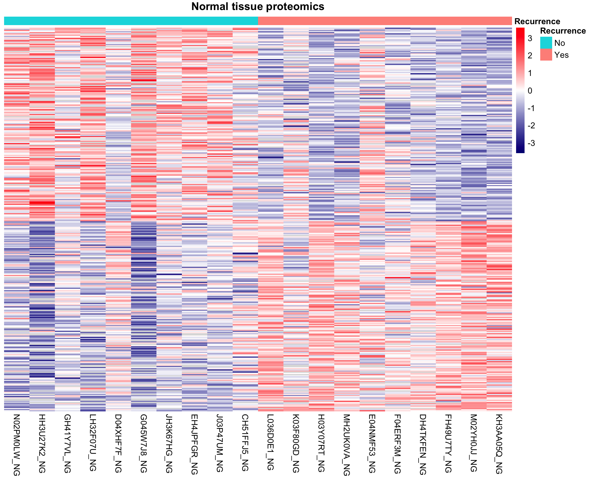
Use probabilistic dropout model to account for data missingness and identify differentially abundant entities that are significantly associated with cancer recurrence. Note that features in heatmap are ordered by their t-statistics.
# Fit linear probabilistic dropout model to normalized data
fit <- proDA::proDA(datMat, design = ~ smpAnno$Recurrence)
# fit
# Check coefficient names for Parameter 'contrast' in proDA::test_diff()
# proDA::result_names(fit)
# Identify significant differentially abundant entities
all_proDAProNormalRes <- proDA::test_diff(fit,
contrast = Intercept + `smpAnno$RecurrenceYes` - Intercept,
sort_by = 'pval')
proDAProNormalRes <- dplyr::select(all_proDAProNormalRes, -c(diff, se, df, avg_abundance, n_approx, n_obs)) %>%
dplyr::filter(pval < 0.05) %>%
dplyr::mutate(Gene = plyr::mapvalues(name,
from = featInfo$Protein.Groups,
to = featInfo$Genes,
warn_missing = F))
# Manually shorten names
proDAProNormalRes$name[116] <- 'P09086;P14859'
proDAProNormalRes$Gene[116] <- 'POU2F1;POU2F2'
proDAProNormalRes$name[266] <- 'P0DP23;P0DP24'
proDAProNormalRes$Gene[266] <- 'CALM1;CALM2'
proDAProNormalRes name pval adj_pval t_statistic Gene
1 Q9Y6R4 0.0002789485 0.6755737 4.496821 MAP3K4
2 P08579 0.0003219936 0.6755737 4.431824 SNRPB2
3 Q9UNP9 0.0005320311 0.6755737 4.205205 PPIE
4 P17655 0.0005397762 0.6755737 -4.198699 CAPN2
5 Q8IYB8 0.0005569446 0.6755737 4.184606 SUPV3L1
6 Q9NXR1 0.0006973060 0.6987712 -4.083534 NDE1
7 Q9UKU9 0.0008064960 0.6987712 -4.018186 ANGPTL2
8 Q8WW59 0.0013118905 0.7840522 3.799829 SPRYD4
9 Q7L311 0.0018275100 0.7840522 -3.651013 ARMCX2
10 Q13356 0.0020232215 0.7840522 3.605296 PPIL2
11 Q9H8H2 0.0020933087 0.7840522 3.589986 DDX31
12 Q9H0A0 0.0024880468 0.7840522 3.512262 NAT10
13 Q8TB03 0.0026277767 0.7840522 -3.487653 CXorf38
14 O75052 0.0030101432 0.7840522 3.426407 NOS1AP
15 Q92508 0.0030732264 0.7840522 -3.417048 PIEZO1
16 Q9H490 0.0031266763 0.7840522 3.409266 PIGU
17 Q9BTZ2 0.0031593566 0.7840522 3.404572 DHRS4
18 P54802 0.0035644502 0.7840522 3.350061 NAGLU
19 Q9Y5P4 0.0039490439 0.7840522 3.303686 CERT1
20 P82664 0.0044816633 0.7840522 3.246313 MRPS10
21 P40855 0.0050867425 0.7840522 -3.188747 PEX19
22 Q9GZP9 0.0052273961 0.7840522 -3.176330 DERL2
23 Q9H3M7 0.0053576576 0.7840522 -3.165118 TXNIP
24 P05204 0.0053760535 0.7840522 -3.163556 HMGN2
25 Q7Z4W1 0.0054055707 0.7840522 3.161061 DCXR
26 P41227 0.0055316088 0.7840522 -3.150554 NAA10
27 P55209 0.0055354066 0.7840522 -3.150241 NAP1L1
28 Q9HAS0 0.0057449796 0.7840522 -3.133289 C17orf75
29 P11310 0.0058614194 0.7840522 3.124130 ACADM
30 P55263 0.0058705740 0.7840522 3.123418 ADK
31 P07942 0.0060200934 0.7840522 -3.111931 LAMB1
32 Q96RP7 0.0065572399 0.7840522 -3.072842 GAL3ST4
33 Q9NXW2 0.0065585738 0.7840522 -3.072749 DNAJB12
34 Q8IV38 0.0067689513 0.7840522 3.058287 ANKMY2
35 Q13445 0.0068193788 0.7840522 3.054885 TMED1
36 Q8N5G2 0.0068195146 0.7840522 3.054876 MACO1
37 Q9Y6M1 0.0069034679 0.7840522 -3.049268 IGF2BP2
38 Q9UNQ2 0.0070988430 0.7840522 3.036468 DIMT1
39 P62328 0.0071616743 0.7840522 -3.032424 TMSB4X
40 Q15493 0.0072845875 0.7840522 3.024612 RGN
41 O00264 0.0073741836 0.7840522 -3.018999 PGRMC1
42 P35869 0.0073833055 0.7840522 -3.018431 AHR
43 O94762 0.0075516427 0.7840522 -3.008073 RECQL5
44 Q8IX01 0.0076131777 0.7840522 3.004342 SUGP2
45 Q99733 0.0077133389 0.7840522 -2.998332 NAP1L4
46 Q27J81 0.0077444920 0.7840522 -2.996478 INF2
47 Q14515 0.0077668564 0.7840522 -2.995152 SPARCL1
48 Q6BCY4 0.0078343667 0.7840522 2.991170 CYB5R2
49 Q9Y3B7 0.0080078425 0.7840522 2.981090 MRPL11
50 Q92506 0.0080788998 0.7840522 2.977022 HSD17B8
51 Q8TCG2 0.0080927574 0.7840522 2.976232 PI4K2B
52 O43493 0.0085066811 0.7840522 2.953241 TGOLN2
53 Q86YS6 0.0087547329 0.7840522 2.939977 RAB43
54 Q99611 0.0089743016 0.7840522 2.928535 SEPHS2
55 P09001 0.0091857793 0.7840522 2.917769 MRPL3
56 P52294 0.0093666017 0.7840522 -2.908752 KPNA1
57 P24821 0.0095673850 0.7840522 -2.898935 TNC
58 P06127 0.0096152976 0.7840522 -2.896621 CD5
59 Q9BQE4 0.0097345865 0.7840522 -2.890910 SELENOS
60 Q8IYS1 0.0097884128 0.7840522 -2.888355 PM20D2
61 Q02040 0.0098929183 0.7840522 -2.883432 AKAP17A
62 Q9UBX1 0.0100562999 0.7840522 -2.875837 CTSF
63 Q9NP97 0.0101306693 0.7840522 -2.872418 DYNLRB1
64 Q14457 0.0102794501 0.7840522 2.865652 BECN1
65 Q9Y3E5 0.0107104754 0.7840522 2.846570 PTRH2
66 P78539 0.0111369339 0.7840522 -2.828405 SRPX
67 Q15847 0.0113108961 0.7840522 -2.821187 ADIRF
68 Q15056 0.0113665448 0.7840522 -2.818900 EIF4H
69 Q96PE3 0.0114629767 0.7840522 -2.814964 INPP4A
70 Q92759 0.0114639560 0.7840522 2.814924 GTF2H4
71 P60866 0.0114692552 0.7840522 2.814708 RPS20
72 Q96S44 0.0116774502 0.7840522 2.806320 TP53RK
73 P52789 0.0118559290 0.7840522 2.799243 HK2
74 P23921 0.0119349478 0.7840522 -2.796143 RRM1
75 Q99569 0.0122430713 0.7840522 -2.784238 PKP4
76 Q96FZ2 0.0123308592 0.7840522 -2.780899 HMCES
77 P21359 0.0123591553 0.7840522 2.779827 NF1
78 O43237 0.0125516178 0.7840522 -2.772601 DYNC1LI2
79 Q8WUH6 0.0125771009 0.7840522 -2.771653 TMEM263
80 Q9P0M6 0.0126557407 0.7840522 2.768736 MACROH2A2
81 O95298 0.0128013046 0.7840522 2.763384 NDUFC2
82 P04083 0.0128469895 0.7840522 -2.761716 ANXA1
83 Q9UHP3 0.0129151764 0.7840522 -2.759237 USP25
84 O43752 0.0129982258 0.7840522 2.756235 STX6
85 P42126 0.0130473299 0.7840522 2.754469 ECI1
86 Q99543 0.0134043214 0.7840522 2.741814 DNAJC2
87 P63000 0.0134748756 0.7840522 -2.739352 RAC1
88 Q9H9J2 0.0135176693 0.7840522 -2.737864 MRPL44
89 O95833 0.0137272580 0.7840522 -2.730643 CLIC3
90 P62750 0.0142755828 0.7840522 2.712237 RPL23A
91 O75911 0.0143089574 0.7840522 -2.711139 DHRS3
92 O15270 0.0143497023 0.7840522 -2.709801 SPTLC2
93 P48059 0.0146474377 0.7840522 -2.700136 LIMS1
94 Q8N4T8 0.0148174964 0.7840522 2.694699 CBR4
95 P24723 0.0149867797 0.7840522 -2.689346 PRKCH
96 Q9H6T3 0.0150119797 0.7840522 -2.688554 RPAP3
97 Q8WVY7 0.0151928094 0.7840522 2.682908 UBLCP1
98 Q99828 0.0153509319 0.7840522 -2.678024 CIB1
99 O15357 0.0154138045 0.7840522 2.676095 INPPL1
100 Q9H7Z7 0.0155086051 0.7840522 2.673201 PTGES2
101 Q8TF65 0.0158682761 0.7840522 -2.662371 GIPC2
102 Q9NPA8 0.0163866047 0.7840522 -2.647169 ENY2
103 Q8N5I2 0.0164627219 0.7840522 -2.644975 ARRDC1
104 P00390 0.0164925430 0.7840522 2.644119 GSR
105 Q8TF01 0.0165163972 0.7840522 -2.643434 PNISR
106 Q5TA45 0.0165486682 0.7840522 2.642510 INTS11
107 P07477;Q9BYE2 0.0167715241 0.7840522 -2.636173 PRSS1;TMPRSS13
108 P51159 0.0170708568 0.7840522 2.627787 RAB27A
109 Q9H3H5 0.0173291411 0.7840522 2.620663 DPAGT1
110 Q9BRV3 0.0174062305 0.7840522 2.618556 SLC50A1
111 P41236 0.0177567743 0.7840522 -2.609085 PPP1R2
112 Q9NR28 0.0183302536 0.7840522 2.593969 DIABLO
113 P83881 0.0186136953 0.7840522 -2.586662 RPL36A
114 Q15653 0.0187905703 0.7840522 2.582156 NFKBIB
115 Q5T1V6 0.0187908146 0.7840522 -2.582150 DDX59
116 P09086;P14859 0.0189047774 0.7840522 2.579268 POU2F1;POU2F2
117 Q9UMS0 0.0189829341 0.7840522 -2.577301 NFU1
118 P62888 0.0193021366 0.7840522 2.569346 RPL30
119 P61247 0.0194326562 0.7840522 2.566129 RPS3A
120 Q8NBQ5 0.0197610803 0.7840522 2.558124 HSD17B11
121 Q8N3P4 0.0197740521 0.7840522 -2.557811 VPS8
122 O75909 0.0198366702 0.7840522 2.556300 CCNK
123 Q9UIG0 0.0198858663 0.7840522 2.555116 BAZ1B
124 Q8WVM0 0.0201078776 0.7840522 2.549807 TFB1M
125 O95777 0.0202427504 0.7840522 2.546609 LSM8
126 P37235 0.0203542466 0.7840522 -2.543980 HPCAL1
127 P08123 0.0209765673 0.7840522 -2.529554 COL1A2
128 Q8NBK3 0.0211024831 0.7840522 -2.526685 SUMF1
129 Q14244 0.0211182508 0.7840522 -2.526326 MAP7
130 Q495W5 0.0211545003 0.7840522 -2.525504 FUT11
131 P20908 0.0213737872 0.7840522 -2.520556 COL5A1
132 Q15080 0.0217746292 0.7840522 2.511635 NCF4
133 O43395 0.0221238102 0.7840522 2.503988 PRPF3
134 O43708 0.0223038390 0.7840522 2.500090 GSTZ1
135 Q86YM7 0.0225389076 0.7840522 -2.495045 HOMER1
136 Q9H5X1 0.0231715447 0.7840522 2.481709 CIAO2A
137 Q9UGI8 0.0233123715 0.7840522 -2.478787 TES
138 Q13753 0.0234158264 0.7840522 -2.476651 LAMC2
139 P18887 0.0239477510 0.7840522 2.465807 XRCC1
140 P62841 0.0241619918 0.7840522 2.461503 RPS15
141 Q9H300 0.0243445214 0.7840522 2.457864 PARL
142 P51689 0.0243643719 0.7840522 -2.457470 ARSD
143 Q99417 0.0245683750 0.7840522 -2.453437 MYCBP
144 Q05513 0.0246108019 0.7840522 -2.452602 PRKCZ
145 Q9GZZ8 0.0246388122 0.7840522 -2.452051 LACRT
146 P23469 0.0246856878 0.7840522 2.451132 PTPRE
147 P02452 0.0260328313 0.7840522 -2.425373 COL1A1
148 P49406 0.0260849583 0.7840522 2.424401 MRPL19
149 Q9H8Y8 0.0263390689 0.7840522 2.419692 GORASP2
150 Q9UJX2 0.0263765297 0.7840522 -2.419001 CDC23
151 Q96Q11 0.0265338818 0.7840522 -2.416110 TRNT1
152 Q9HC84 0.0266666982 0.7840522 -2.413682 MUC5B
153 O14493 0.0266904067 0.7840522 -2.413250 CLDN4
154 P29474 0.0267025767 0.7840522 -2.413028 NOS3
155 Q08397 0.0270926202 0.7840522 -2.405972 LOXL1
156 O95396 0.0271475633 0.7840522 -2.404985 MOCS3
157 Q8NFD5 0.0273160901 0.7840522 -2.401972 ARID1B
158 Q99638 0.0273599831 0.7840522 2.401189 RAD9A
159 Q9NVR2 0.0276775089 0.7840522 2.395567 INTS10
160 P45954 0.0277261954 0.7840522 2.394710 ACADSB
161 Q9GZS1 0.0280213366 0.7840522 -2.389545 POLR1E
162 P43405 0.0281261375 0.7840522 2.387724 SYK
163 Q9BZQ6 0.0281685757 0.7840522 -2.386988 EDEM3
164 P84157 0.0281828351 0.7840522 -2.386741 MXRA7
165 Q96P44 0.0282125182 0.7840522 -2.386227 COL21A1
166 Q9NVV5 0.0282389846 0.7840522 2.385769 AIG1
167 P01700 0.0282957020 0.7840522 -2.384790 IGLV1-47
168 P34059 0.0283973479 0.7840522 2.383039 GALNS
169 Q8NGC0 0.0288711867 0.7840522 2.374954 OR5AU1
170 Q14331 0.0289168241 0.7840522 2.374182 FRG1
171 P22570 0.0293149635 0.7840522 2.367493 FDXR
172 Q9Y259 0.0294901302 0.7840522 -2.364577 CHKB
173 Q9BV57 0.0297478052 0.7840522 2.360317 ADI1
174 Q96HH6 0.0298302328 0.7840522 2.358961 TMEM19
175 Q9H6S1 0.0300782130 0.7840522 -2.354904 AZI2
176 Q9NPY3 0.0306257066 0.7840522 -2.346055 CD93
177 Q9H0E3 0.0306901624 0.7840522 2.345023 SAP130
178 A0A0J9YXX1 0.0306952605 0.7840522 2.344942 IGHV5-10-1
179 Q8NDA8 0.0307217646 0.7840522 2.344518 MROH1
180 Q13137 0.0308971211 0.7840522 -2.341723 CALCOCO2
181 P51116 0.0309224092 0.7840522 -2.341322 FXR2
182 Q99715 0.0309708698 0.7840522 -2.340552 COL12A1
183 P30049 0.0310194793 0.7840522 2.339782 ATP5F1D
184 Q03135 0.0310492885 0.7840522 -2.339310 CAV1
185 Q9NY47 0.0313657063 0.7840522 -2.334327 CACNA2D2
186 O75427 0.0314880782 0.7840522 2.332412 LRCH4
187 Q9Y2V2 0.0315060939 0.7840522 -2.332131 CARHSP1
188 Q14112 0.0315767560 0.7840522 -2.331029 NID2
189 Q9Y3C6 0.0316421556 0.7840522 2.330011 PPIL1
190 Q6ZVM7 0.0318165570 0.7840522 -2.327307 TOM1L2
191 O95817 0.0319509511 0.7840522 -2.325232 BAG3
192 P37268 0.0320787781 0.7840522 2.323266 FDFT1
193 Q8WW12 0.0320922548 0.7840522 -2.323059 PCNP
194 Q8N4Q0 0.0321620616 0.7840522 2.321989 ZADH2
195 P50914 0.0324188217 0.7840522 2.318072 RPL14
196 P62312 0.0324409789 0.7840522 2.317735 LSM6
197 Q15113 0.0325823253 0.7840522 -2.315592 PCOLCE
198 O14561 0.0328245329 0.7840522 -2.311940 NDUFAB1
199 O14683 0.0331611698 0.7840522 2.306906 TP53I11
200 Q92572 0.0332039921 0.7840522 2.306269 AP3S1
201 Q9H2M9 0.0332319771 0.7840522 2.305853 RAB3GAP2
202 Q13751 0.0332626907 0.7840522 -2.305397 LAMB3
203 Q16787 0.0332685132 0.7840522 -2.305310 LAMA3
204 Q86U44 0.0334799287 0.7840522 2.302182 METTL3
205 Q9BUJ2 0.0336779428 0.7840522 2.299269 HNRNPUL1
206 Q9NYY8 0.0338624725 0.7840522 -2.296568 FASTKD2
207 Q3SXM5 0.0339027386 0.7840522 2.295981 HSDL1
208 Q5VWZ2 0.0340559997 0.7840522 2.293750 LYPLAL1
209 Q96Q05 0.0341347738 0.7840522 -2.292608 TRAPPC9
210 Q04941 0.0341687779 0.7840522 -2.292115 PLP2
211 P02654 0.0341929646 0.7840522 -2.291765 APOC1
212 Q5RI15 0.0342142508 0.7840522 -2.291457 COX20
213 Q15363 0.0342769050 0.7840522 2.290552 TMED2
214 Q6P1X6 0.0342951829 0.7840522 2.290288 C8orf82
215 Q9BYT8 0.0343997409 0.7840522 2.288782 NLN
216 P46777 0.0344058185 0.7840522 2.288694 RPL5
217 Q9H089 0.0344757978 0.7840522 -2.287689 LSG1
218 Q9NP55 0.0346446418 0.7840522 -2.285270 BPIFA1
219 Q8NCH0 0.0346876247 0.7840522 -2.284656 CHST14
220 P61923 0.0347290789 0.7840522 2.284064 COPZ1
221 Q5J8M3 0.0348697823 0.7840522 2.282062 EMC4
222 Q9HBH5 0.0349945558 0.7840522 2.280292 RDH14
223 P60604 0.0350597790 0.7840522 -2.279369 UBE2G2
224 O60264 0.0353104974 0.7840522 2.275836 SMARCA5
225 P18621 0.0357219611 0.7840522 2.270089 RPL17
226 O75556 0.0358237436 0.7840522 -2.268677 SCGB2A1
227 Q8N7H5 0.0359587280 0.7840522 2.266809 PAF1
228 P54098 0.0361059018 0.7840522 2.264781 POLG
229 P11047 0.0364435657 0.7840522 -2.260155 LAMC1
230 Q96G03 0.0365629134 0.7840522 2.258530 PGM2
231 Q14151 0.0368201942 0.7840522 2.255043 SAFB2
232 O00587 0.0370640023 0.7840522 -2.251759 MFNG
233 Q16378 0.0370936672 0.7840522 -2.251361 PRR4
234 Q8TB96 0.0377556226 0.7840522 -2.242550 ITFG1
235 O60502 0.0379999356 0.7840522 -2.239335 OGA
236 P98194 0.0380486481 0.7840522 2.238696 ATP2C1
237 P38919 0.0384273146 0.7840522 2.233755 EIF4A3
238 Q92879 0.0385191375 0.7840522 2.232564 CELF1
239 Q7L4I2 0.0385262259 0.7840522 -2.232472 RSRC2
240 Q96KN1 0.0386485060 0.7840522 -2.230890 LRATD2
241 Q9P258 0.0386492232 0.7840522 2.230880 RCC2
242 Q16543 0.0388396819 0.7840522 -2.228425 CDC37
243 Q14678 0.0390453179 0.7840522 -2.225787 KANK1
244 P15924 0.0391473522 0.7840522 -2.224483 DSP
245 Q9GZS3 0.0392125280 0.7840522 -2.223651 WDR61
246 O43159 0.0393726600 0.7840522 2.221613 RRP8
247 P28702 0.0394362746 0.7840522 2.220806 RXRB
248 Q8WU79 0.0394420462 0.7840522 2.220733 SMAP2
249 O94829 0.0395732369 0.7840522 -2.219072 IPO13
250 P47914 0.0395871994 0.7840522 -2.218895 RPL29
251 O75787 0.0398494114 0.7840522 2.215592 ATP6AP2
252 P25311 0.0401171297 0.7840522 -2.212239 AZGP1
253 O95208 0.0401653369 0.7840522 -2.211638 EPN2
254 Q9BVK6 0.0404110519 0.7840522 2.208582 TMED9
255 Q9P0I2 0.0407003904 0.7840522 2.205006 EMC3
256 Q5JTV8 0.0407875986 0.7840522 2.203932 TOR1AIP1
257 Q92544 0.0408363258 0.7840522 2.203334 TM9SF4
258 Q96IZ7 0.0409336720 0.7840522 -2.202139 RSRC1
259 O14920 0.0409911731 0.7840522 -2.201435 IKBKB
260 O76003 0.0411600543 0.7840522 -2.199372 GLRX3
261 Q96BJ8 0.0412375365 0.7840522 -2.198428 ELMO3
262 P62277 0.0414277182 0.7840522 2.196118 RPS13
263 P82914 0.0414484696 0.7840522 2.195867 MRPS15
264 Q7Z3B4 0.0419129935 0.7840522 2.190268 NUP54
265 Q9Y5X2 0.0423244602 0.7840522 2.185355 SNX8
266 P0DP23;P0DP24 0.0423845290 0.7840522 -2.184642 CALM1;CALM2
267 Q9BUB7 0.0423986894 0.7840522 2.184474 TMEM70
268 P78368;Q9Y6M4 0.0424168891 0.7840522 -2.184258 CSNK1G2;CSNK1G3
269 Q9H8L6 0.0424523391 0.7840522 -2.183838 MMRN2
270 Q9Y6A9 0.0424739815 0.7840522 2.183581 SPCS1
271 Q96BQ5 0.0425928959 0.7840522 2.182174 CCDC127
272 P16050 0.0429180812 0.7840522 -2.178345 ALOX15
273 P12830 0.0429235044 0.7840522 -2.178282 CDH1
274 Q6ZWT7 0.0431496444 0.7840522 -2.175635 MBOAT2
275 P28068 0.0431737529 0.7840522 2.175353 HLA-DMB
276 Q96HS1 0.0433373323 0.7840522 2.173448 PGAM5
277 Q5S007 0.0435204490 0.7840522 2.171322 LRRK2
278 Q969X6 0.0435276330 0.7840522 2.171239 UTP4
279 Q5VWJ9 0.0436099521 0.7840522 2.170286 SNX30
280 O14639 0.0438890227 0.7840522 -2.167069 ABLIM1
281 O15230 0.0443046370 0.7840522 -2.162311 LAMA5
282 P04156 0.0444065323 0.7840522 -2.161151 PRNP
283 Q12923 0.0446761610 0.7840522 2.158093 PTPN13
284 Q9GZP8 0.0446815958 0.7840522 -2.158031 IMUP
285 P02458 0.0446899488 0.7840522 -2.157937 COL2A1
286 Q58FG1 0.0450135756 0.7840522 2.154290 HSP90AA4P
287 Q6UXI9 0.0450389977 0.7840522 -2.154004 NPNT
288 O94901 0.0450928835 0.7840522 -2.153399 SUN1
289 Q92922 0.0451579009 0.7840522 -2.152671 SMARCC1
290 Q9NVA1 0.0452373375 0.7840522 2.151782 UQCC1
291 Q92947 0.0456862003 0.7840522 2.146785 GCDH
292 P04632 0.0457318950 0.7840522 -2.146279 CAPNS1
293 P29558;Q6XE24 0.0457939138 0.7840522 -2.145593 RBMS1;RBMS3
294 Q96JP5 0.0458256033 0.7840522 -2.145242 ZFP91
295 P51809 0.0458425098 0.7840522 2.145056 VAMP7
296 Q9H239 0.0458442042 0.7840522 -2.145037 MMP28
297 P62263 0.0460711876 0.7840522 2.142535 RPS14
298 Q15031 0.0462767549 0.7840522 2.140279 LARS2
299 Q2TAA2 0.0465884199 0.7840522 -2.136876 IAH1
300 P48637 0.0466365128 0.7840522 2.136352 GSS
301 Q12805 0.0466454703 0.7840522 -2.136255 EFEMP1
302 Q8IXK2 0.0467016977 0.7840522 2.135644 GALNT12
303 P02647 0.0467018022 0.7840522 -2.135643 APOA1
304 Q9H4E7 0.0467797530 0.7840522 2.134797 DEF6
305 P34947 0.0470429484 0.7840522 -2.131950 GRK5
306 P14598 0.0472152361 0.7840522 2.130094 NCF1
307 Q9Y3Y2 0.0473007208 0.7840522 -2.129175 CHTOP
308 Q8WVJ2 0.0474144449 0.7840522 -2.127956 NUDCD2
309 Q8N5M4 0.0474465202 0.7840522 2.127612 TTC9C
310 Q8ND24 0.0475566304 0.7840522 -2.126435 RNF214
311 Q5T9A4 0.0475984176 0.7840522 2.125988 ATAD3B
312 P26373 0.0476594107 0.7840522 -2.125338 RPL13
313 Q9UHB9 0.0477287827 0.7840522 2.124598 SRP68
314 Q96E52 0.0478182721 0.7840522 2.123646 OMA1
315 P07332 0.0479451843 0.7840522 2.122299 FES
316 Q05823 0.0480160676 0.7840522 2.121548 RNASEL
317 Q14011 0.0480614784 0.7840522 2.121067 CIRBP
318 Q86YL7 0.0482025029 0.7840522 -2.119577 PDPN
319 Q99805 0.0484352593 0.7840522 2.117126 TM9SF2
320 O14776 0.0485258862 0.7840522 2.116174 TCERG1
321 P15169 0.0486001372 0.7840522 -2.115396 CPN1
322 Q13214 0.0487786882 0.7840522 -2.113529 SEMA3B
323 Q9C002 0.0488448420 0.7840522 2.112839 NMES1
324 P52434 0.0489115620 0.7840522 2.112144 POLR2H
325 Q96PC3 0.0489702738 0.7840522 -2.111532 AP1S3
326 Q9NY61 0.0490317552 0.7840522 -2.110893 AATF
327 Q14119 0.0490532902 0.7840522 2.110670 VEZF1
328 O00299 0.0490739261 0.7840522 -2.110455 CLIC1
329 Q9NWS8 0.0492669992 0.7840522 2.108454 RMND1
330 P78345 0.0494340530 0.7840522 2.106729 RPP38
331 Q9Y5B9 0.0495743880 0.7840522 2.105283 SUPT16H
332 O75558 0.0497562233 0.7840522 -2.103416 STX11
333 Q7Z6L1 0.0498550532 0.7840522 -2.102404 TECPR1
334 P39060 0.0499186808 0.7840522 -2.101753 COL18A1
335 Q6NZI2 0.0499793364 0.7840522 -2.101133 CAVIN1proDAProNormalRes$name[116] <- 'P09086;P14859;Q9UKI9'
proDAProNormalRes$Gene[116] <- 'POU2F1;POU2F2;POU2F3'
proDAProNormalRes$name[266] <- 'P0DP23;P0DP24;P0DP25'
proDAProNormalRes$Gene[266] <- 'CALM1;CALM2;CALM3'
# Plot molecular signatures in input data
# Order features according to t-statistics
featOrder <- dplyr::arrange(proDAProNormalRes, dplyr::desc(t_statistic))$name
# Change protein names to gene names
datMatSub <- datMat[featOrder, smpOrder]
rownames(datMatSub) <- plyr::mapvalues(rownames(datMatSub),
from = featInfo$Protein.Groups,
to = featInfo$Genes,
warn_missing = F)
pheatmap::pheatmap(datMatSub,
annotation_col = smpRecur,
color = colorRampPalette(c('navy', 'white', 'red'))(100),
cluster_rows = F, cluster_cols = F, show_rownames = F,
scale = 'row', main = 'Normal Tissue proteomics (proDA)')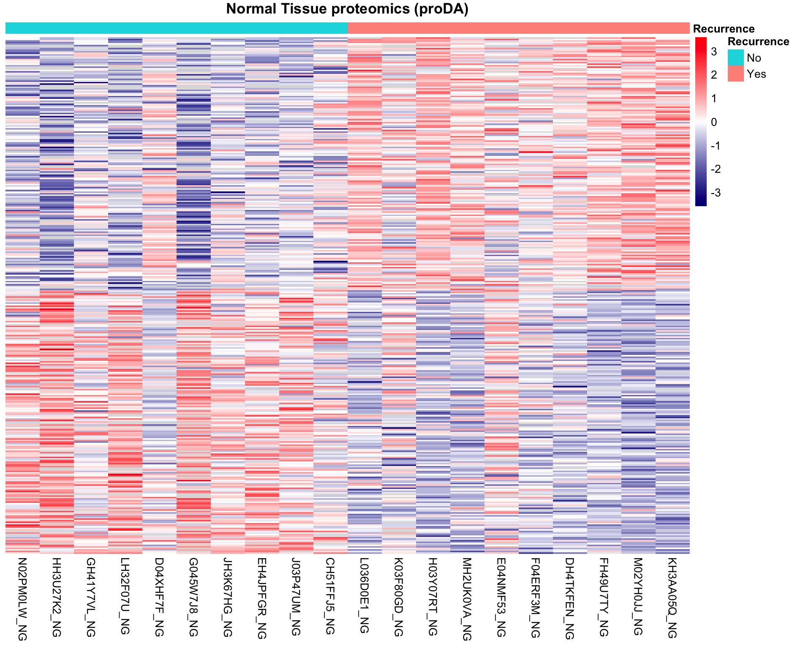
Visualize data of top 6 significant features based on proDA result
# Visualize data of top 6 significant features
topSigFeats <- proDAProNormalRes[1:6,] %>%
dplyr::select(name, pval, Gene) %>%
dplyr::rename(Feature = name, pVal = pval)
topSigFeatData <- tibble::as_tibble(datMat[topSigFeats$Feature,], rownames = 'Feature') %>%
tidyr::pivot_longer(cols = -'Feature',
names_to = 'Sample', values_to = 'Abundance') %>%
dplyr::left_join(topSigFeats, by = 'Feature') %>%
dplyr::mutate(Gene = paste0(Gene, '\n(p = ', round(pVal, 4), ')'),
Gene = factor(Gene, levels = unique(Gene))) %>%
dplyr::left_join(smpAnno, by = 'Sample')
ggplot(topSigFeatData, aes(x=Recurrence, y=Abundance, col=Recurrence, fill=Recurrence)) +
geom_boxplot(alpha = 0.3, outlier.shape = NA) +
geom_jitter(position = position_jitter(0.2), size = 2, show.legend = F) +
scale_color_manual(values=c('#00BFC4', '#F8766D')) +
scale_fill_manual(values=c('#00BFC4', '#F8766D')) +
facet_wrap(vars(Gene), scales = 'free') +
th + theme(strip.text = element_text(size = 13, face = 'bold'))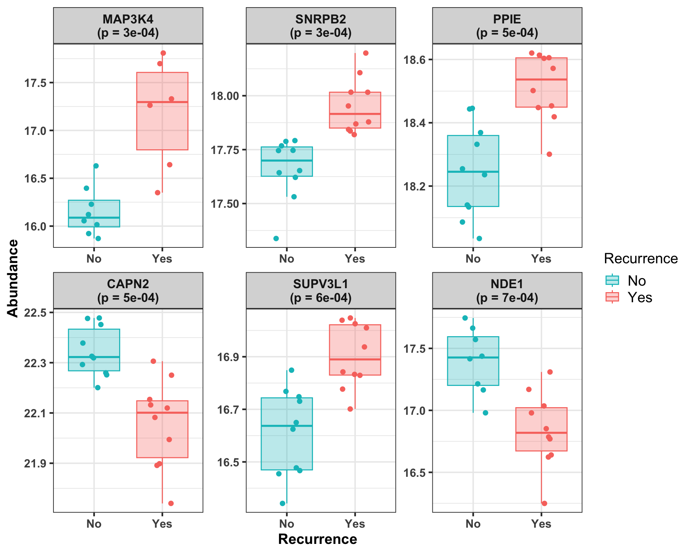
Assess data power by p-value histogram
p <- all_proDAProNormalRes$pval
hist(p, xlab = 'P-value', main = 'Normal Tissue Proteomics (proDA)')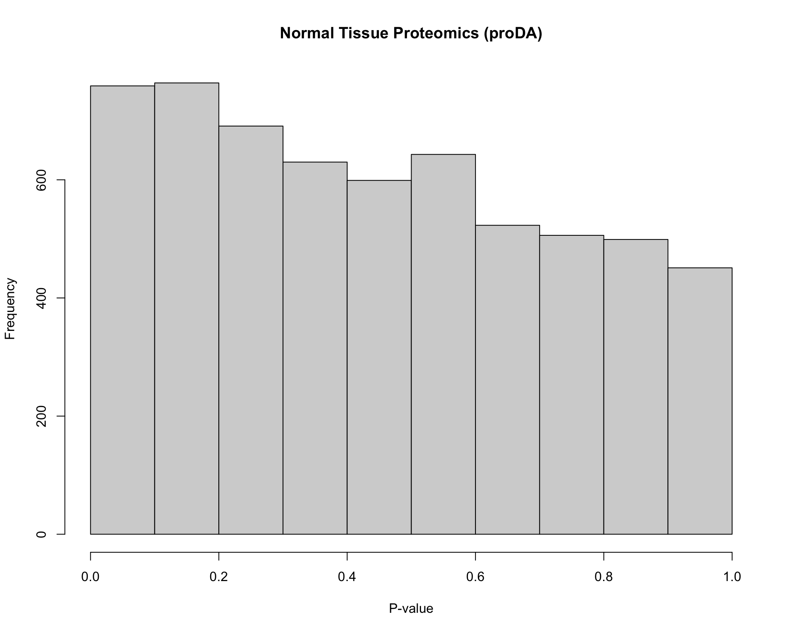
Display significant associations between PCs (Var1) and cancer recurrence (Var2)
# Display PCs that can significantly separate recurrence and non-recurrence
# patients
tPCASigRes Var1 Var2 pVal pValAdj Stat Test
1 PC15 Recurrence 0.03563831 0.5738454 2.271252 T-test# Display proportion of total variance captured by all PCs explained by each PC
varExplained <- pcaRes@sDev^2 / sum(pcaRes@sDev^2)
PC <- paste0('PC', seq(length(varExplained)))
varTab <- data.frame(PC = factor(PC, levels = PC),
Var_explained = varExplained)
ggplot(varTab, aes(x=PC, y=Var_explained*100)) +
geom_col() +
labs(x = '', y = 'Variance explained (%)',
title = 'Normal tissue proteomics') +
th + theme(axis.text.x = element_text(angle = 90, hjust = 1, vjust = 0.5))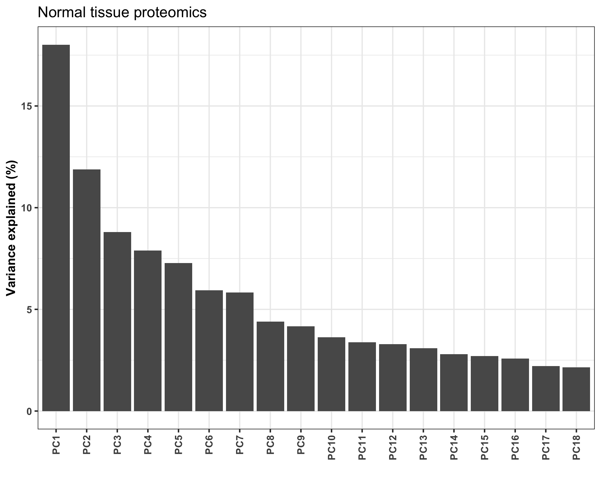
PC15 potentially separates recurrence and non-recurrence patients.
# Visualize PCs
ggplot(pcTab, aes(x=Recurrence, y=PC15, col=Recurrence, fill=Recurrence)) +
geom_boxplot(alpha = 0.3, outlier.shape = NA) +
geom_jitter(position = position_jitter(0.2), size = 2, show.legend = F) +
labs(title = 'Normal Tissue proteomics') +
scale_color_manual(values=c('#00BFC4', '#F8766D')) +
scale_fill_manual(values=c('#00BFC4', '#F8766D')) +
ggpubr::stat_compare_means(method = 't.test', paired = F, size = 6,
method.args = list(var.equal = T), hjust = 0.65,
show.legend = F) +
th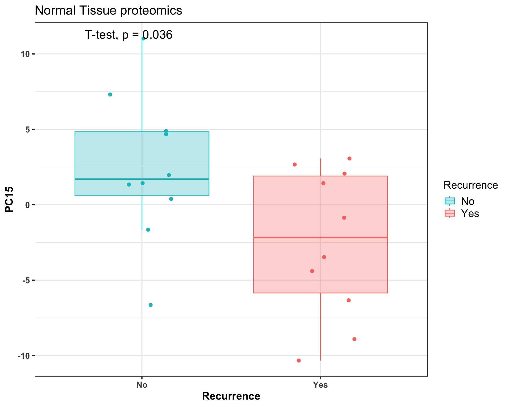
Plot molecular signatures captured by PC15 in input data. We took a look at top 20 features with highest loadings and observed protein levels of these top features through heatmap. Note that features in heatmap are ordered by their loadings.
# Plot molecular signatures in input data
# Extract top features with highest loadings
topFeats <- pcTopFeatTab$PC15$Feature[1:20]
# Order features by loadings
topFeatsIdx <- sapply(topFeats, function(feat) {which(rownames(datMat) == feat)})
# Change protein names to gene names
datMatSub <- datMat[topFeatsIdx, smpOrder]
rownames(datMatSub) <- plyr::mapvalues(rownames(datMatSub),
from = featInfo$Protein.Groups,
to = featInfo$Genes,
warn_missing = F)
pheatmap::pheatmap(datMatSub,
annotation_col = smpRecur,
color = colorRampPalette(c('navy', 'white', 'red'))(100),
cluster_rows = F, cluster_cols = F,
scale = 'row', main = 'Normal Tissue proteomics - PC15')
Display top features that build the PC15
# Display top features with highest loadings of PC of interest
dplyr::mutate(pcTopFeatTab$PC15, Gene = plyr::mapvalues(Feature,
from = featInfo$Protein.Groups,
to = featInfo$Genes,
warn_missing = F)) Feature Loading Gene
1 P15088 0.11535868 CPA3
2 P69891 0.11276443 HBG1
3 O60637 0.11054482 TSPAN3
4 Q9NWU1 0.10759244 OXSM
5 Q9NYQ6 0.09367689 CELSR1
6 A0A0J9YXX1 0.09140609 IGHV5-10-1
7 P02741 0.08489532 CRP
8 P02794 0.08276946 FTH1
9 Q9NYU1 0.08055977 UGGT2
10 P09544 0.07777357 WNT2
11 Q9BW92 0.07696229 TARS2
12 Q5M775 0.07651078 SPECC1
13 Q9P299 0.07616933 COPZ2
14 P30838 0.07589299 ALDH3A1
15 P20142 0.07563463 PGC
16 P55056 0.07529048 APOC4
17 Q7Z739 0.07262650 YTHDF3
18 Q93091 0.07172255 RNASE6
19 Q9Y2D2 0.07169566 SLC35A3
20 Q99704 0.07169436 DOK1
21 P02792 0.06954026 FTL
22 O75095 0.06661762 MEGF6
23 Q6UX04 0.06620669 CWC27
24 P02144 0.06538836 MB
25 Q9BSC4 0.06418227 NOL10
26 Q8WWH5 0.06403675 TRUB1
27 P19012 0.06384049 KRT15
28 Q9UK22 0.06314722 FBXO2
29 P16083 0.06209142 NQO2
30 Q9Y3E5 0.06183346 PTRH2Difference in tissue conditions
Differences between Tumor and Normal samples (Tumor matrix - Normal
matrix):
Display significant associations between learned PCs (Var1) and metadata variables (Var2)
# Subset tumor samples
smpTumorIdx <- which(colData(proTissue)$Condition == 'Tumor')
proTumor <- proTissue[, smpTumorIdx]
# Subset normal samples
smpNormalIdx <- which(colData(proTissue)$Condition == 'Normal')
proNormal <- proTissue[, smpNormalIdx]
# Modify column names for matching two matrices
colnames(proTumor) <- stringr::str_remove(colnames(proTumor), '_TG')
colnames(proNormal) <- stringr::str_remove(colnames(proNormal), '_NG')
# Retrieve data matrix
proTumorMat <- SummarizedExperiment::assay(proTumor)
proNormalMat <- SummarizedExperiment::assay(proNormal)
# Subtract normal matrix by tumor matrix
if (identical(colnames(proTumorMat), colnames(proNormalMat)) &
identical(rownames(proTumorMat), rownames(proNormalMat))) {
proTissueDiffMat <- proTumorMat - proNormalMat
} else {
print('Align samples or features first.')
}
# Retrieve samples metadata for creating SE object
colAnno <- as.data.frame(colData(proTumor))
proTissueDiff <- SummarizedExperiment(assays = proTissueDiffMat, colData = colAnno)
# Display significant associations between PCs and metadata variables
proTissueDiffAssoRes <- doSOA(proTissueDiff, meta_var = c('Recurrence', 'Gender', 'Age',
'Smoking', 'Stage', 'Metastasis'),
do_onlyPCA = T, pca_method = 'ppca', num_PCs = 18)
proTissueDiffAssoRes$tPCASigRes Var1 Var2 pVal pValAdj Stat Test
1 PC8 Smoking 0.005177439 0.5591635 7.2887072 ANOVA
2 PC8 Recurrence 0.027597557 0.7986823 -2.3969767 T-test
3 PC2 Metastasis 0.039349130 0.7986823 -2.2219123 T-test
4 PC9 Age 0.042066447 0.7986823 0.4584246 Correlation
5 PC10 Gender 0.047549529 0.7986823 -2.1265104 T-test
6 PC5 Metastasis 0.048708108 0.7986823 2.1142663 T-testDisplay significant associations between features (Var1) and cancer recurrence (Var2) and observe molecular signatures in input data through heatmap. Note that features in heatmap are ordered by their t-statistics.
# Perform analysis
proTissueDiffRes <- doSOA(proTissueDiff, meta_var = 'Recurrence', pca_method = 'ppca',
num_PCs = 18, num_PCfeats = 30)
datMat <- proTissueDiffRes$data
smpAnno <- proTissueDiffRes$smpMetadata
tFeatSigRes <- proTissueDiffRes$tFeatSigRes
tPCASigRes <- proTissueDiffRes$tPCASigRes
pcaRes <- proTissueDiffRes$pcaRes
pcTab <- proTissueDiffRes$pcTab
pcTopFeatTab <- proTissueDiffRes$pcTopFeatTab
# Display features that can significantly separate recurrence and non-recurrence
# patients
dplyr::mutate(tFeatSigRes, Gene = plyr::mapvalues(Var1,
from = featInfo$Protein.Groups,
to = featInfo$Genes,
warn_missing = F)) %>%
dplyr::select(-Test) Var1 Var2 pVal pValAdj Stat Gene
1 Q99487 Recurrence 4.484986e-05 0.2719695 -6.490614 PAFAH2
2 P28290 Recurrence 4.172598e-04 0.8440722 -4.314718 ITPRID2
3 Q8NBN7 Recurrence 4.380525e-04 0.8440722 -4.292781 RDH13
4 P15502 Recurrence 5.567759e-04 0.8440722 -4.184743 ELN
5 Q9HAS0 Recurrence 1.107478e-03 0.9311619 -4.375438 C17orf75
6 P54687 Recurrence 1.207246e-03 0.9311619 4.211378 BCAT1
7 P08579 Recurrence 1.587168e-03 0.9311619 3.714335 SNRPB2
8 P35555 Recurrence 1.841882e-03 0.9311619 -3.647494 FBN1
9 Q9BVM4 Recurrence 1.993741e-03 0.9311619 -3.734366 GGACT
10 O43395 Recurrence 2.026598e-03 0.9311619 3.604547 PRPF3
11 Q6UXB2 Recurrence 2.236386e-03 0.9311619 -3.560253 CXCL17
12 P06127 Recurrence 2.262048e-03 0.9311619 -3.627866 CD5
13 Q99828 Recurrence 2.689229e-03 0.9311619 -3.509307 CIB1
14 P62888 Recurrence 2.835064e-03 0.9311619 3.453435 RPL30
15 Q9BQS2 Recurrence 2.835606e-03 0.9311619 -4.488963 SYT15
16 O95168 Recurrence 2.859979e-03 0.9311619 -3.449489 NDUFB4
17 P05023 Recurrence 2.861641e-03 0.9311619 -3.449227 ATP1A1
18 Q9NQ84 Recurrence 3.303766e-03 0.9311619 -3.588496 GPRC5C
19 O00213 Recurrence 3.825470e-03 0.9311619 -3.649291 APBB1
20 O14681 Recurrence 4.080883e-03 0.9311619 -3.288806 EI24
21 Q9UNF0 Recurrence 4.356502e-03 0.9311619 -3.259169 PACSIN2
22 Q8TE77 Recurrence 4.417427e-03 0.9311619 -3.252866 SSH3
23 Q13445 Recurrence 4.479014e-03 0.9311619 3.246581 TMED1
24 Q9BZK7 Recurrence 4.500829e-03 0.9311619 3.244376 TBL1XR1
25 Q7Z406 Recurrence 4.625727e-03 0.9311619 -3.231945 MYH14
26 Q9UN86 Recurrence 4.676816e-03 0.9311619 3.226955 G3BP2
27 P12830 Recurrence 5.231433e-03 0.9311619 -3.175978 CDH1
28 Q9BZQ6 Recurrence 5.264067e-03 0.9311619 -3.227529 EDEM3
29 Q86VU5 Recurrence 5.586960e-03 0.9311619 -3.146014 COMTD1
30 Q8NBK3 Recurrence 5.765773e-03 0.9311619 -3.184216 SUMF1
31 Q8IZH2 Recurrence 5.814167e-03 0.9311619 3.127825 XRN1
32 Q9H239 Recurrence 6.208170e-03 0.9311619 -3.097870 MMP28
33 P18669 Recurrence 6.337951e-03 0.9311619 3.088408 PGAM1
34 Q96L58 Recurrence 6.340041e-03 0.9311619 -3.088258 B3GALT6
35 P08123 Recurrence 6.441018e-03 0.9311619 -3.081028 COL1A2
36 Q6P4A8 Recurrence 6.449469e-03 0.9311619 3.080428 PLBD1
37 Q9Y5B0 Recurrence 6.459857e-03 0.9311619 3.079691 CTDP1
38 P11586 Recurrence 6.502750e-03 0.9311619 3.076662 MTHFD1
39 O95573 Recurrence 7.066953e-03 0.9311619 -3.038533 ACSL3
40 Q9C0B1 Recurrence 7.708006e-03 0.9311619 2.998650 FTO
41 Q5TAQ9 Recurrence 7.969322e-03 0.9311619 2.983310 DCAF8
42 Q13158 Recurrence 8.454680e-03 0.9311619 3.029192 FADD
43 Q9NXW2 Recurrence 8.537400e-03 0.9311619 -2.996738 DNAJB12
44 P15144 Recurrence 8.590167e-03 0.9311619 2.969786 ANPEP
45 P49137 Recurrence 8.622588e-03 0.9311619 2.946997 MAPKAPK2
46 Q14331 Recurrence 8.668911e-03 0.9311619 2.965498 FRG1
47 Q92922 Recurrence 8.770567e-03 0.9311619 -3.597365 SMARCC1
48 P35221 Recurrence 8.794657e-03 0.9311619 -2.937876 CTNNA1
49 O15460 Recurrence 8.832345e-03 0.9311619 2.956718 P4HA2
50 Q5R372 Recurrence 9.314573e-03 0.9311619 2.911329 RABGAP1L
51 P09874 Recurrence 9.825442e-03 0.9311619 2.886605 PARP1
52 P04843 Recurrence 9.941755e-03 0.9311619 2.881149 RPN1
53 Q6IQ49 Recurrence 1.004165e-02 0.9311619 -3.247238 SDE2
54 Q9BVT8 Recurrence 1.011000e-02 0.9311619 -2.915516 TMUB1
55 Q15750 Recurrence 1.011127e-02 0.9311619 -2.893008 TAB1
56 P19021 Recurrence 1.022548e-02 0.9311619 -2.935737 PAM
57 Q9BYX4 Recurrence 1.063514e-02 0.9311619 -2.849851 IFIH1
58 P49447 Recurrence 1.095229e-02 0.9311619 -2.930891 CYB561
59 P30626 Recurrence 1.096513e-02 0.9311619 -2.835642 SRI
60 P48509 Recurrence 1.127610e-02 0.9311619 -2.822622 CD151
61 Q9BVS5 Recurrence 1.168667e-02 0.9311619 -2.824492 TRMT61B
62 P14555 Recurrence 1.172680e-02 0.9311619 -2.868187 PLA2G2A
63 Q9H6V9 Recurrence 1.198753e-02 0.9311619 -2.812430 LDAH
64 Q9BQ61 Recurrence 1.213866e-02 0.9311619 2.788240 TRIR
65 Q93096 Recurrence 1.229952e-02 0.9311619 -2.782088 PTP4A1
66 P46734 Recurrence 1.239051e-02 0.9311619 2.778643 MAP2K3
67 Q92562 Recurrence 1.274041e-02 0.9311619 3.321406 FIG4
68 P78381 Recurrence 1.275731e-02 0.9311619 -3.098305 SLC35A2
69 Q969X1 Recurrence 1.295263e-02 0.9311619 -2.757881 TMBIM1
70 P21860 Recurrence 1.318782e-02 0.9311619 -2.868230 ERBB3
71 Q14457 Recurrence 1.319317e-02 0.9311619 3.077498 BECN1
72 Q9BWU0 Recurrence 1.334341e-02 0.9311619 2.743951 SLC4A1AP
73 Q9Y2J8 Recurrence 1.370991e-02 0.9311619 2.731236 PADI2
74 Q07960 Recurrence 1.410930e-02 0.9311619 -2.717746 ARHGAP1
75 P83876 Recurrence 1.437558e-02 0.9311619 2.708954 TXNL4A
76 P05026 Recurrence 1.441727e-02 0.9311619 -2.707591 ATP1B1
77 O95777 Recurrence 1.450860e-02 0.9311619 2.704619 LSM8
78 P09769 Recurrence 1.473186e-02 0.9311619 2.845996 FGR
79 Q16539 Recurrence 1.488775e-02 0.9311619 2.692470 MAPK14
80 P02461 Recurrence 1.519310e-02 0.9311619 -2.682899 COL3A1
81 Q9Y6R4 Recurrence 1.536352e-02 0.9311619 3.069330 MAP3K4
82 P0CG29;P0CG30 Recurrence 1.556830e-02 0.9311619 2.752502 GSTT2;GSTT2B
83 P13674 Recurrence 1.572162e-02 0.9311619 2.666759 P4HA1
84 Q2VPB7 Recurrence 1.586356e-02 0.9311619 2.847640 AP5B1
85 O00186 Recurrence 1.593687e-02 0.9311619 -2.660332 STXBP3
86 Q9Y314 Recurrence 1.594788e-02 0.9311619 -2.844677 NOSIP
87 Q9NQT8 Recurrence 1.599058e-02 0.9311619 -2.658742 KIF13B
88 Q6IC98 Recurrence 1.611349e-02 0.9311619 -2.671218 GRAMD4
89 Q13137 Recurrence 1.624674e-02 0.9311619 -2.651226 CALCOCO2
90 Q96FZ2 Recurrence 1.666583e-02 0.9311619 -3.287496 HMCES
91 Q8N465 Recurrence 1.672229e-02 0.9311619 -2.716055 D2HGDH
92 Q8NES3 Recurrence 1.681226e-02 0.9311619 -2.741385 LFNG
93 O43660 Recurrence 1.694002e-02 0.9311619 2.631435 PLRG1
94 O14841 Recurrence 1.757968e-02 0.9311619 -2.613847 OPLAH
95 P08572 Recurrence 1.762778e-02 0.9311619 -2.612549 COL4A2
96 O75391 Recurrence 1.775064e-02 0.9311619 -3.237135 SPAG7
97 P78368;Q9Y6M4 Recurrence 1.798368e-02 0.9311619 -2.603050 CSNK1G2;CSNK1G3
98 Q9Y2J2 Recurrence 1.802011e-02 0.9311619 2.602087 EPB41L3
99 P33991 Recurrence 1.806995e-02 0.9311619 2.633413 MCM4
100 Q13555 Recurrence 1.831918e-02 0.9311619 -2.594257 CAMK2G
101 Q14318 Recurrence 1.847119e-02 0.9311619 2.590323 FKBP8
102 Q9UJV9 Recurrence 1.883649e-02 0.9311619 2.595967 DDX41
103 Q9NRP0 Recurrence 1.889424e-02 0.9311619 2.579534 OSTC
104 P09544 Recurrence 1.897027e-02 0.9311619 -2.747648 WNT2
105 O14493 Recurrence 1.914448e-02 0.9311619 -2.588119 CLDN4
106 Q8N7H5 Recurrence 1.918587e-02 0.9311619 2.572229 PAF1
107 Q9ULC4 Recurrence 1.922289e-02 0.9311619 2.571309 MCTS1
108 Q8TD10 Recurrence 1.963369e-02 0.9311619 2.832762 MIPOL1
109 Q16563 Recurrence 1.977118e-02 0.9311619 -2.557880 SYPL1
110 Q8NBM8 Recurrence 1.977831e-02 0.9311619 2.557708 PCYOX1L
111 Q08623 Recurrence 2.023799e-02 0.9311619 -2.546721 PUDP
112 Q96P70 Recurrence 2.023985e-02 0.9311619 2.546677 IPO9
113 Q9Y2A7 Recurrence 2.045428e-02 0.9311619 -2.541634 NCKAP1
114 Q01085 Recurrence 2.058798e-02 0.9311619 2.538514 TIAL1
115 P02462 Recurrence 2.064780e-02 0.9311619 -2.537124 COL4A1
116 Q9HD40 Recurrence 2.068508e-02 0.9311619 -2.585553 SEPSECS
117 O94829 Recurrence 2.079716e-02 0.9311619 -2.740996 IPO13
118 P28907 Recurrence 2.084462e-02 0.9311619 2.658617 CD38
119 O14548 Recurrence 2.092590e-02 0.9311619 -2.530714 COX7A2L
120 P50914 Recurrence 2.096334e-02 0.9311619 2.529857 RPL14
121 Q86SF2 Recurrence 2.105355e-02 0.9311619 -2.598136 GALNT7
122 Q58FG1 Recurrence 2.119103e-02 0.9311619 2.524676 HSP90AA4P
123 Q8NCH0 Recurrence 2.126950e-02 0.9311619 -2.522903 CHST14
124 O60318 Recurrence 2.127402e-02 0.9311619 -2.647577 MCM3AP
125 Q16643 Recurrence 2.141557e-02 0.9311619 2.519619 DBN1
126 O14672 Recurrence 2.179788e-02 0.9311619 -2.511122 ADAM10
127 Q9H2D6 Recurrence 2.197631e-02 0.9311619 -2.507204 TRIOBP
128 Q5R3I4 Recurrence 2.236220e-02 0.9311619 -2.498833 TTC38
129 Q9UHG3 Recurrence 2.271400e-02 0.9311619 -2.491319 PCYOX1
130 P50749 Recurrence 2.285155e-02 0.9311619 2.502053 RASSF2
131 P0DMM9;P0DMN0 Recurrence 2.287217e-02 0.9311619 -2.487976 SULT1A3;SULT1A4
132 O14920 Recurrence 2.289023e-02 0.9311619 -2.487596 IKBKB
133 P48723 Recurrence 2.289363e-02 0.9311619 2.487525 HSPA13
134 Q13232 Recurrence 2.376037e-02 0.9311619 -2.469601 NME3
135 Q14696 Recurrence 2.381307e-02 0.9311619 2.468531 MESD
136 P27694 Recurrence 2.386700e-02 0.9311619 2.467438 RPA1
137 P25325 Recurrence 2.401444e-02 0.9311619 -2.464463 MPST
138 Q8NFU3 Recurrence 2.415408e-02 0.9311619 -2.461661 TSTD1
139 P01704 Recurrence 2.445023e-02 0.9311619 2.646722 IGLV2-14
140 Q96TA2 Recurrence 2.451977e-02 0.9311619 -2.696852 YME1L1
141 P08311 Recurrence 2.453101e-02 0.9311619 2.454173 CTSG
142 P56589 Recurrence 2.457908e-02 0.9311619 -2.518349 PEX3
143 Q16585 Recurrence 2.527283e-02 0.9311619 2.587004 SGCB
144 O75821 Recurrence 2.566248e-02 0.9311619 2.432327 EIF3G
145 P26583 Recurrence 2.605974e-02 0.9311619 2.424871 HMGB2
146 O43150 Recurrence 2.616534e-02 0.9311619 -2.722056 ASAP2
147 Q92851 Recurrence 2.620115e-02 0.9311619 2.422242 CASP10
148 P21964 Recurrence 2.620561e-02 0.9311619 -2.422160 COMT
149 Q9GZS1 Recurrence 2.626772e-02 0.9311619 -2.719532 POLR1E
150 O14974 Recurrence 2.669026e-02 0.9311619 2.413252 PPP1R12A
151 Q9P107 Recurrence 2.701761e-02 0.9311619 2.517810 GMIP
152 Q86U44 Recurrence 2.731300e-02 0.9311619 2.402027 METTL3
153 Q8N573 Recurrence 2.744072e-02 0.9311619 -2.399754 OXR1
154 Q96DG6 Recurrence 2.771689e-02 0.9311619 -2.394873 CMBL
155 Q8TEM1 Recurrence 2.800043e-02 0.9311619 2.389909 NUP210
156 Q9UNQ2 Recurrence 2.814697e-02 0.9311619 2.612676 DIMT1
157 P46199 Recurrence 2.857594e-02 0.9311619 -2.392158 MTIF2
158 Q9UPW5 Recurrence 2.895904e-02 0.9311619 2.415062 AGTPBP1
159 Q9UBX1 Recurrence 2.900829e-02 0.9311619 -2.594297 CTSF
160 Q9Y6C9 Recurrence 2.925440e-02 0.9311619 -2.368505 MTCH2
161 Q8N2F6 Recurrence 2.959560e-02 0.9311619 -2.362829 ARMC10
162 O60716 Recurrence 2.966075e-02 0.9311619 -2.361752 CTNND1
163 Q99459 Recurrence 2.999976e-02 0.9311619 2.356184 CDC5L
164 O14530 Recurrence 3.008468e-02 0.9311619 2.354798 TXNDC9
165 Q13277 Recurrence 3.015122e-02 0.9311619 -2.353715 STX3
166 P08246 Recurrence 3.032997e-02 0.9311619 2.362623 ELANE
167 P21359 Recurrence 3.040422e-02 0.9311619 2.361408 NF1
168 Q9NVH1 Recurrence 3.079872e-02 0.9311619 -2.343290 DNAJC11
169 P16083 Recurrence 3.091724e-02 0.9311619 -2.341404 NQO2
170 P62263 Recurrence 3.116318e-02 0.9311619 2.337511 RPS14
171 P51689 Recurrence 3.129956e-02 0.9311619 -2.335365 ARSD
172 Q6IQ23 Recurrence 3.146095e-02 0.9311619 -2.372638 PLEKHA7
173 Q6XQN6 Recurrence 3.160613e-02 0.9311619 -2.330572 NAPRT
174 Q9Y6M5 Recurrence 3.167048e-02 0.9311619 2.329571 SLC30A1
175 Q8N1S5 Recurrence 3.195174e-02 0.9311619 -2.364691 SLC39A11
176 Q15005 Recurrence 3.198703e-02 0.9311619 2.324677 SPCS2
177 O96019 Recurrence 3.225743e-02 0.9311619 2.320531 ACTL6A
178 Q8N1F7 Recurrence 3.238842e-02 0.9311619 2.318534 NUP93
179 A0AV96 Recurrence 3.255994e-02 0.9311619 -2.315931 RBM47
180 Q8WVT3 Recurrence 3.279641e-02 0.9311619 -2.312363 TRAPPC12
181 Q9H2P0 Recurrence 3.287763e-02 0.9311619 2.350009 ADNP
182 Q13177 Recurrence 3.306431e-02 0.9311619 2.308350 PAK2
183 Q9H4E7 Recurrence 3.314561e-02 0.9311619 2.307138 DEF6
184 Q9Y259 Recurrence 3.321682e-02 0.9311619 -2.404960 CHKB
185 Q9HAB8 Recurrence 3.439616e-02 0.9311619 -2.288833 PPCS
186 Q92508 Recurrence 3.448992e-02 0.9311619 -2.298503 PIEZO1
187 Q13480 Recurrence 3.460644e-02 0.9311619 -2.720790 GAB1
188 Q6P1J9 Recurrence 3.477352e-02 0.9311619 2.283431 CDC73
189 Q96I25 Recurrence 3.486967e-02 0.9311619 2.282063 RBM17
190 P19634 Recurrence 3.497837e-02 0.9311619 -2.280521 SLC9A1
191 Q969L2 Recurrence 3.500333e-02 0.9311619 -2.280167 MAL2
192 Q8IX01 Recurrence 3.509731e-02 0.9311619 2.402174 SUGP2
193 O95359 Recurrence 3.567751e-02 0.9311619 -2.281521 TACC2
194 P16949 Recurrence 3.597522e-02 0.9311619 2.266582 STMN1
195 Q96JP5 Recurrence 3.603612e-02 0.9311619 -2.302694 ZFP91
196 Q96SW2 Recurrence 3.618327e-02 0.9311619 -2.286632 CRBN
197 P63173 Recurrence 3.619629e-02 0.9311619 2.263539 RPL38
198 Q14554 Recurrence 3.647960e-02 0.9311619 2.259664 PDIA5
199 Q96AQ8 Recurrence 3.654648e-02 0.9311619 -2.453497 MCUR1
200 P11172 Recurrence 3.660454e-02 0.9311619 2.257964 UMPS
201 Q70UQ0 Recurrence 3.664640e-02 0.9311619 2.257396 IKBIP
202 Q8NDH3 Recurrence 3.671326e-02 0.9311619 -2.256489 NPEPL1
203 Q9GZP8 Recurrence 3.677673e-02 0.9311619 -2.266264 IMUP
204 P08133 Recurrence 3.708860e-02 0.9311619 2.251429 ANXA6
205 Q8N3P4 Recurrence 3.715334e-02 0.9311619 -2.250560 VPS8
206 O00592 Recurrence 3.716742e-02 0.9311619 -2.250372 PODXL
207 Q7L5Y9 Recurrence 3.719884e-02 0.9311619 -2.286253 MAEA
208 Q8NFD5 Recurrence 3.722058e-02 0.9311619 -2.249660 ARID1B
209 P39656 Recurrence 3.748433e-02 0.9311619 2.246144 DDOST
210 Q9Y371 Recurrence 3.751047e-02 0.9311619 -2.245796 SH3GLB1
211 O00754 Recurrence 3.769644e-02 0.9311619 2.243332 MAN2B1
212 O60449 Recurrence 3.785857e-02 0.9311619 2.391545 LY75
213 Q00688 Recurrence 3.798962e-02 0.9311619 2.239470 FKBP3
214 Q9Y6W3 Recurrence 3.802934e-02 0.9311619 2.238949 CAPN7
215 Q96Q05 Recurrence 3.856418e-02 0.9311619 -2.231980 TRAPPC9
216 Q92541 Recurrence 3.872621e-02 0.9311619 2.229887 RTF1
217 Q9Y5X2 Recurrence 3.885369e-02 0.9311619 2.297290 SNX8
218 Q8IZR5 Recurrence 3.898117e-02 0.9311619 -2.316964 CMTM4
219 Q9NR09 Recurrence 3.922860e-02 0.9311619 -2.258673 BIRC6
220 P48163 Recurrence 3.932138e-02 0.9311619 -2.222265 ME1
221 Q9NZR1 Recurrence 3.975189e-02 0.9311619 2.284962 TMOD2
222 P13645 Recurrence 3.975549e-02 0.9311619 -2.216773 KRT10
223 P27986 Recurrence 3.982292e-02 0.9311619 2.215924 PIK3R1
224 P11182 Recurrence 4.000697e-02 0.9311619 -2.213616 DBT
225 P0DPB6 Recurrence 4.003889e-02 0.9311619 -2.302185 POLR1D
226 P61601 Recurrence 4.018445e-02 0.9311619 -2.246145 NCALD
227 P78539 Recurrence 4.051739e-02 0.9311619 -2.207265 SRPX
228 P49356 Recurrence 4.056464e-02 0.9311619 2.241238 FNTB
229 Q8IXM2 Recurrence 4.072359e-02 0.9311619 2.204720 BAP18
230 Q5T0N5 Recurrence 4.079728e-02 0.9311619 -2.203813 FNBP1L
231 O15270 Recurrence 4.119746e-02 0.9311619 -2.198916 SPTLC2
232 Q9UQE7 Recurrence 4.127306e-02 0.9311619 2.197996 SMC3
233 Q6ZSS7 Recurrence 4.129587e-02 0.9311619 -2.218981 MFSD6
234 O00330 Recurrence 4.162724e-02 0.9311619 -2.193705 PDHX
235 P02458 Recurrence 4.187147e-02 0.9311619 -2.200645 COL2A1
236 Q5VW38 Recurrence 4.205501e-02 0.9311619 -2.209607 GPR107
237 P54289 Recurrence 4.209057e-02 0.9311619 -2.188142 CACNA2D1
238 Q8TB03 Recurrence 4.210118e-02 0.9311619 -2.188016 CXorf38
239 Q8IZ81 Recurrence 4.210634e-02 0.9311619 2.187954 ELMOD2
240 Q9H8M7 Recurrence 4.239541e-02 0.9311619 -2.205454 MINDY3
241 P48449 Recurrence 4.249782e-02 0.9311619 -2.183299 LSS
242 O43505 Recurrence 4.261773e-02 0.9311619 -2.191660 B4GAT1
243 O75533 Recurrence 4.267315e-02 0.9311619 2.181227 SF3B1
244 P25815 Recurrence 4.285360e-02 0.9311619 -2.179102 S100P
245 P61619 Recurrence 4.302263e-02 0.9311619 2.177120 SEC61A1
246 P67812 Recurrence 4.316768e-02 0.9311619 2.175424 SEC11A
247 O95994 Recurrence 4.340415e-02 0.9311619 -2.172671 AGR2
248 Q14802 Recurrence 4.361633e-02 0.9311619 -2.203343 FXYD3
249 P68871 Recurrence 4.363706e-02 0.9311619 -2.169973 HBB
250 P02452 Recurrence 4.416137e-02 0.9311619 -2.163946 COL1A1
251 Q6NYC8 Recurrence 4.451860e-02 0.9311619 2.159878 PPP1R18
252 P42167 Recurrence 4.468431e-02 0.9311619 2.158001 TMPO
253 O75907 Recurrence 4.469178e-02 0.9311619 -2.157916 DGAT1
254 Q4KWH8 Recurrence 4.473884e-02 0.9311619 2.157384 PLCH1
255 Q9P266 Recurrence 4.486247e-02 0.9311619 -2.202820 JCAD
256 Q12805 Recurrence 4.511086e-02 0.9311619 -2.153198 EFEMP1
257 P62269 Recurrence 4.528779e-02 0.9311619 2.151218 RPS18
258 P61513 Recurrence 4.541052e-02 0.9311619 2.149849 RPL37A
259 P38646 Recurrence 4.567173e-02 0.9311619 -2.146945 HSPA9
260 P49585 Recurrence 4.580079e-02 0.9311619 2.145517 PCYT1A
261 P04632 Recurrence 4.592860e-02 0.9311619 -2.144105 CAPNS1
262 Q8WWI1 Recurrence 4.625523e-02 0.9311619 -2.140515 LMO7
263 O14949 Recurrence 4.632986e-02 0.9311619 -2.139698 UQCRQ
264 Q63HM1 Recurrence 4.638977e-02 0.9311619 -2.184947 AFMID
265 Q9P291 Recurrence 4.662446e-02 0.9311619 2.136484 ARMCX1
266 O94776 Recurrence 4.666349e-02 0.9311619 2.136059 MTA2
267 Q14839 Recurrence 4.670695e-02 0.9311619 2.135587 CHD4
268 O15121 Recurrence 4.673507e-02 0.9311619 2.180982 DEGS1
269 Q15555 Recurrence 4.686262e-02 0.9311619 -2.133899 MAPRE2
270 Q15155 Recurrence 4.696250e-02 0.9311619 2.132818 NOMO1
271 Q9NXR1 Recurrence 4.714211e-02 0.9311619 -2.162517 NDE1
272 P69905 Recurrence 4.730404e-02 0.9311619 -2.129140 HBA1
273 O43516 Recurrence 4.744317e-02 0.9311619 2.189031 WIPF1
274 P58335 Recurrence 4.749835e-02 0.9311619 2.146640 ANTXR2
275 P19367 Recurrence 4.753921e-02 0.9311619 -2.126621 HK1
276 E9PAV3 Recurrence 4.764343e-02 0.9311619 2.125508 NACA
277 Q9Y6A9 Recurrence 4.775386e-02 0.9311619 2.124331 SPCS1
278 Q92900 Recurrence 4.803124e-02 0.9311619 2.121387 UPF1
279 P51809 Recurrence 4.824128e-02 0.9311619 2.119168 VAMP7
280 Q9Y3D7 Recurrence 4.828017e-02 0.9311619 -2.248772 PAM16
281 P78536 Recurrence 4.846445e-02 0.9311619 -2.136165 ADAM17
282 Q9Y2Y0 Recurrence 4.872202e-02 0.9311619 2.123155 ARL2BP
283 P13639 Recurrence 4.874560e-02 0.9311619 2.113874 EEF2
284 P62906 Recurrence 4.880377e-02 0.9311619 2.113267 RPL10A
285 Q7L8L6 Recurrence 4.887345e-02 0.9311619 -2.172824 FASTKD5
286 P40937 Recurrence 4.890905e-02 0.9311619 2.112170 RFC5
287 Q16718 Recurrence 4.896034e-02 0.9311619 -2.111636 NDUFA5
288 Q9NUP1 Recurrence 4.903273e-02 0.9311619 -2.141776 BLOC1S4
289 Q8N5M4 Recurrence 4.920100e-02 0.9311619 2.375578 TTC9C
290 Q15311 Recurrence 4.949861e-02 0.9311619 -2.106063 RALBP1
291 Q7RTV0 Recurrence 4.972015e-02 0.9311619 2.103786 PHF5A
292 Q8N3Y3 Recurrence 4.989212e-02 0.9311619 -2.102024 LARGE2
293 O00443 Recurrence 4.994812e-02 0.9311619 -2.101452 PIK3C2A
294 Q9ULP9 Recurrence 4.995190e-02 0.9311619 -2.101413 TBC1D24# Plot molecular signatures in input data
# Order features according to t-statistics
featOrder <- dplyr::arrange(tFeatSigRes, dplyr::desc(Stat))$Var1
# Arrange samples to make same groups in same clusters
smpOrder <- c(which(smpAnno$Recurrence == 'No'),
which(smpAnno$Recurrence == 'Yes'))
# Prepare recurrence table for annotating samples in heatmap
smpRecur <- dplyr::select(smpAnno, Sample, Recurrence) %>%
tibble::column_to_rownames('Sample')
# Change protein names to gene names
datMatSub <- datMat[featOrder, smpOrder]
rownames(datMatSub) <- plyr::mapvalues(rownames(datMatSub),
from = featInfo$Protein.Groups,
to = featInfo$Genes,
warn_missing = F)
pheatmap::pheatmap(datMatSub,
annotation_col = smpRecur,
color = colorRampPalette(c('navy', 'white', 'red'))(100),
cluster_rows = F, cluster_cols = F, show_rownames = F,
scale = 'row', main = 'Differential tissue proteomics')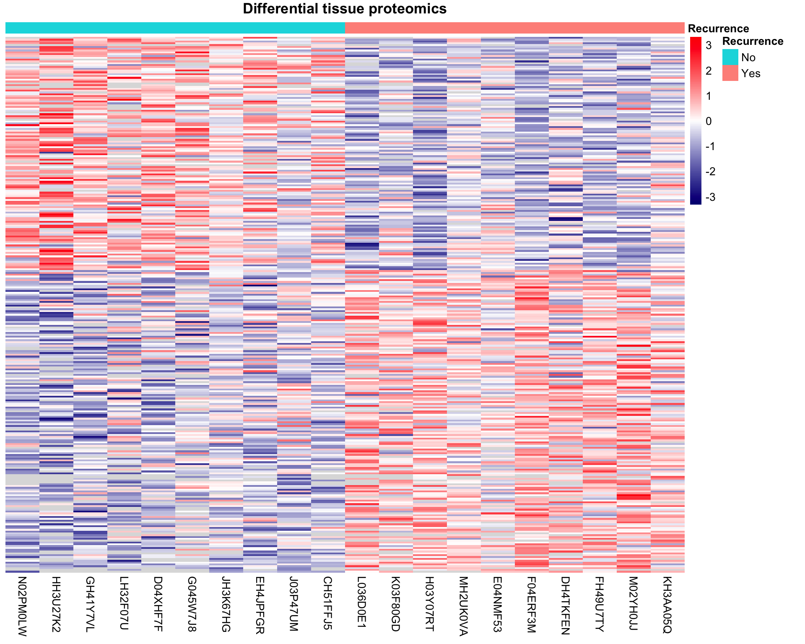
Use probabilistic dropout model to account for data missingness and identify differentially abundant entity differences that are significantly associated with cancer recurrence.
# Fit linear probabilistic dropout model to normalized data
fit <- proDA::proDA(datMat, design = ~ smpAnno$Recurrence)
# fit
# Check coefficient names for Parameter 'contrast' in proDA::test_diff()
# proDA::result_names(fit)
# Identify significant differentially abundant entities
proDAProTissueDiffRes <- proDA::test_diff(fit,
contrast = Intercept + `smpAnno$RecurrenceYes` - Intercept,
sort_by = 'pval', n_max = 20) %>%
dplyr::select(-c(diff, se, df, avg_abundance, n_approx, n_obs)) %>%
dplyr::mutate(Gene = plyr::mapvalues(name,
from = featInfo$Protein.Groups,
to = featInfo$Genes,
warn_missing = F))
proDAProTissueDiffRes name pval adj_pval t_statistic Gene
4678 Q99487 0.006470974 0.9998625 3.078904 PAFAH2
4020 Q8NBN7 0.009320805 0.9998625 2.911020 RDH13
1107 P08579 0.017213706 0.9998625 -2.623834 SNRPB2
1647 P28290 0.017840618 0.9998625 2.606847 ITPRID2
691 O95168 0.023969952 0.9998625 2.465359 NDUFB4
976 P05023 0.024121032 0.9998625 2.462323 ATP1A1
4148 Q8TE77 0.027455021 0.9998625 2.399500 SSH3
345 O43395 0.029704016 0.9998625 -2.361038 PRPF3
1426 P18669 0.033458497 0.9998625 -2.302498 PGAM1
2431 P62888 0.033579064 0.9998625 -2.300722 RPL30
5978 Q9Y5B0 0.033648657 0.9998625 -2.299699 CTDP1
4947 Q9BZK7 0.034718637 0.9998625 -2.284213 TBL1XR1
2849 Q13445 0.038388595 0.9998625 -2.234258 TMED1
4960 Q9C0B1 0.039425943 0.9998625 -2.220937 FTO
3400 Q5TAQ9 0.039679218 0.9998625 -2.217734 DCAF8
198 O14681 0.040287870 0.9998625 2.210112 EI24
1232 P11586 0.042343165 0.9998625 -2.185133 MTHFD1
749 O95573 0.043051879 0.9998625 2.176778 ACSL3
2014 P49137 0.046319840 0.9998625 -2.139807 MAPKAPK2
5768 Q9UN86 0.047667681 0.9998625 -2.125249 G3BP2Visualize data of top 6 significant features based on proDA result
# Visualize data of top 6 significant features
topSigFeats <- proDAProTissueDiffRes[1:6,] %>%
dplyr::select(name, pval, Gene) %>%
dplyr::rename(Feature = name, pVal = pval)
topSigFeatData <- tibble::as_tibble(datMat[topSigFeats$Feature,], rownames = 'Feature') %>%
tidyr::pivot_longer(cols = -'Feature',
names_to = 'Sample', values_to = 'Abundance') %>%
dplyr::left_join(topSigFeats, by = 'Feature') %>%
dplyr::mutate(Gene = paste0(Gene, '\n(p = ', round(pVal, 4), ')'),
Gene = factor(Gene, levels = unique(Gene))) %>%
dplyr::left_join(smpAnno, by = 'Sample')
ggplot(topSigFeatData, aes(x=Recurrence, y=Abundance, col=Recurrence, fill=Recurrence)) +
geom_boxplot(alpha = 0.3, outlier.shape = NA) +
geom_jitter(position = position_jitter(0.2), size = 2, show.legend = F) +
scale_color_manual(values=c('#00BFC4', '#F8766D')) +
scale_fill_manual(values=c('#00BFC4', '#F8766D')) +
facet_wrap(vars(Gene), scales = 'free') +
th + theme(strip.text = element_text(size = 13, face = 'bold'))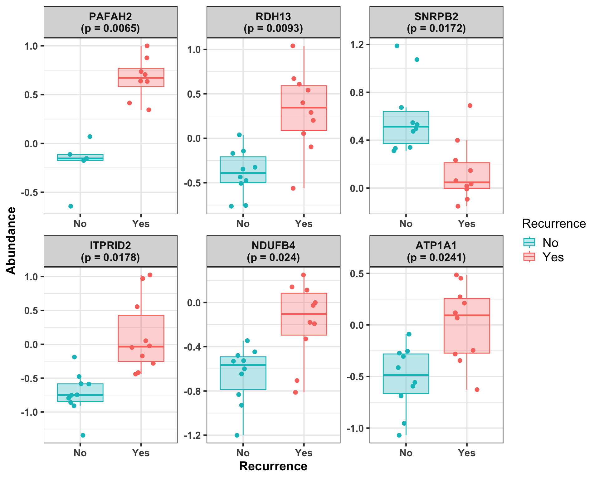
Display significant associations between PCs (Var1) and cancer recurrence (Var2)
# Display PCs that can significantly separate recurrence and non-recurrence
# patients
tPCASigRes Var1 Var2 pVal pValAdj Stat Test
1 PC8 Recurrence 0.02759756 0.496756 -2.396977 T-test# Display proportion of total variance captured by all PCs explained by each PC
varExplained <- pcaRes@sDev^2 / sum(pcaRes@sDev^2)
PC <- paste0('PC', seq(length(varExplained)))
varTab <- data.frame(PC = factor(PC, levels = PC),
Var_explained = varExplained)
ggplot(varTab, aes(x=PC, y=Var_explained*100)) +
geom_col() +
labs(x = '', y = 'Variance explained (%)',
title = 'Differential tissue proteomics') +
th + theme(axis.text.x = element_text(angle = 90, hjust = 1, vjust = 0.5))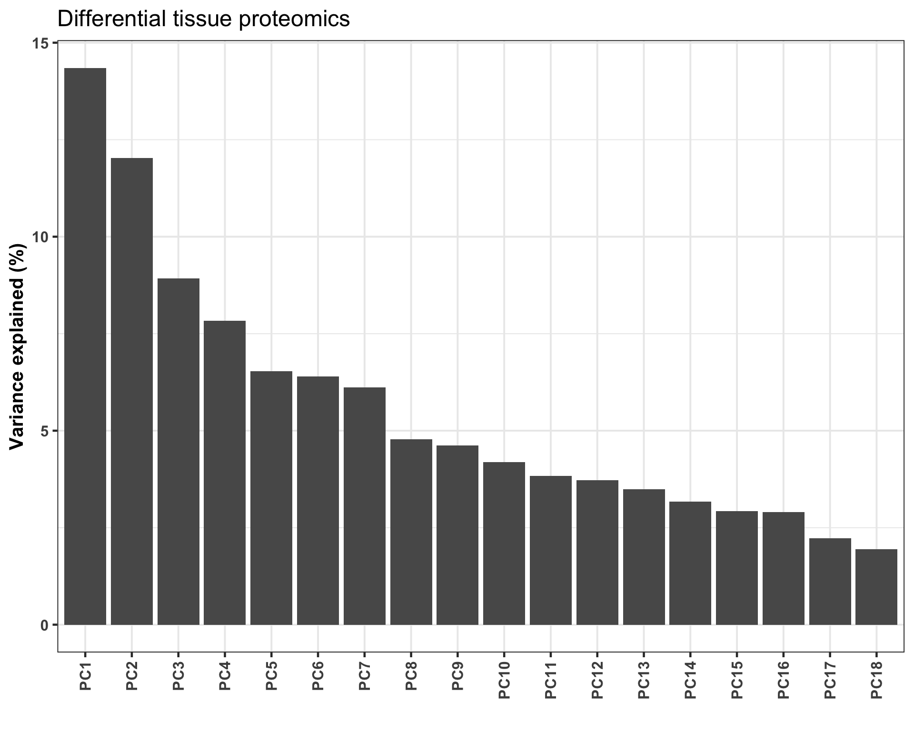
PC8 potentially separates recurrence and non-recurrence patients.
# Visualize PCs
ggplot(pcTab, aes(x=Recurrence, y=PC8, col=Recurrence, fill=Recurrence)) +
geom_boxplot(alpha = 0.3, outlier.shape = NA) +
geom_jitter(position = position_jitter(0.2), size = 2, show.legend = F) +
labs(title = 'Differential tissue proteomics') +
scale_color_manual(values=c('#00BFC4', '#F8766D')) +
scale_fill_manual(values=c('#00BFC4', '#F8766D')) +
ggpubr::stat_compare_means(method = 't.test', paired = F, size = 6,
method.args = list(var.equal = T), hjust = 0.65,
show.legend = F) +
th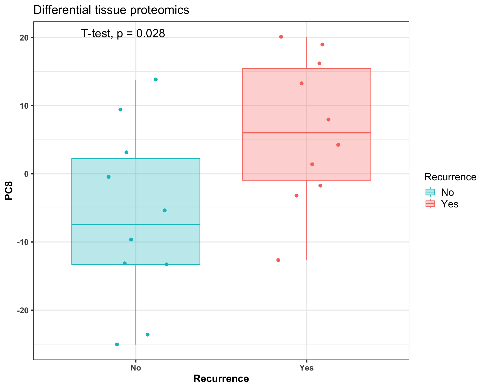
Plot molecular signatures captured by PC8 in input data. We took a look at top 20 features with highest loadings and observed protein levels of these top features through heatmap. Note that features in heatmap are ordered by their loadings.
# Plot molecular signatures in input data
# Extract top features with highest loadings
topFeats <- pcTopFeatTab$PC8$Feature[1:20]
# Order features by loadings
topFeatsIdx <- sapply(topFeats, function(feat) {which(rownames(datMat) == feat)})
# Change protein names to gene names
datMatSub <- datMat[topFeatsIdx, smpOrder]
rownames(datMatSub) <- plyr::mapvalues(rownames(datMatSub),
from = featInfo$Protein.Groups,
to = featInfo$Genes,
warn_missing = F)
pheatmap::pheatmap(datMatSub,
annotation_col = smpRecur,
color = colorRampPalette(c('navy', 'white', 'red'))(100),
cluster_rows = F, cluster_cols = F,
scale = 'row', main = 'Differential tissue proteomics - PC8')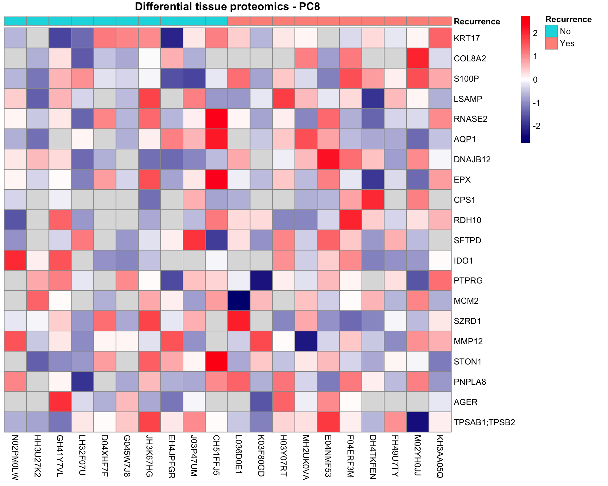
Display top features that build the PC8
# Display top features with highest loadings of PC of interest
dplyr::mutate(pcTopFeatTab$PC8, Gene = plyr::mapvalues(Feature,
from = featInfo$Protein.Groups,
to = featInfo$Genes,
warn_missing = F)) Feature Loading Gene
1 Q04695 0.11056074 KRT17
2 P25067 0.10644431 COL8A2
3 P25815 0.09896159 S100P
4 Q13449 0.08756296 LSAMP
5 P10153 0.08639938 RNASE2
6 P29972 0.08586487 AQP1
7 Q9NXW2 0.08564995 DNAJB12
8 P11678 0.08495953 EPX
9 P31327 0.08459668 CPS1
10 Q8IZV5 0.08312267 RDH10
11 P35247 0.07864348 SFTPD
12 P14902 0.07862743 IDO1
13 P23470 0.07680376 PTPRG
14 P49736 0.07278492 MCM2
15 Q7Z422 0.07173717 SZRD1
16 P39900 0.07161651 MMP12
17 Q9Y6Q2 0.07160501 STON1
18 Q9NP80 0.07061935 PNPLA8
19 Q15109 0.07012131 AGER
20 P20231;Q15661 0.06818448 TPSAB1;TPSB2
21 Q15274 0.06811605 QPRT
22 A8TX70 0.06662935 COL6A5
23 P15502 0.06635488 ELN
24 P15559 0.06224717 NQO1
25 Q3KQZ1 0.06182899 SLC25A35
26 Q9BW92 0.06153499 TARS2
27 Q6DT37 0.06097719 CDC42BPG
28 P12724 0.06012378 RNASE3
29 Q05315 0.05995061 CLC
30 Q9HC84 0.05991167 MUC5BSummary
# Load and subset all Method Development datasets except DIA Tissue Proteomics from
# AG Krijgsveld
# Specific functions for subsetting data
subPlasma <- function(summ_exp) {
smpAnno <- as.data.frame(colData(summ_exp))
base <- summ_exp[, smpAnno[['Condition']] == 'Baseline']
folo <- summ_exp[, smpAnno[['Condition']] != 'Baseline']
return(list(Base = base, Folo = folo))
}
subTissue <- function(summ_exp) {
smpAnno <- as.data.frame(colData(summ_exp))
tumor <- summ_exp[, smpAnno[['Condition']] == 'Tumor']
normal <- summ_exp[, smpAnno[['Condition']] == 'Normal']
return(list(Tumor = tumor, Normal = normal))
}
# Load normalized datasets and subset them into Baseline/Follow-up and Tumor/Normal datasets
# NO MISSINGNESS
# Targeted Plasma Metabolomics
metaPlasma_Hell <- readRDS('./data/AG_Hell/metaPlasmaNorm.rds')
metaBase_Hell <- subPlasma(metaPlasma_Hell)$Base
metaFolo_Hell <- subPlasma(metaPlasma_Hell)$Folo
# Targeted Tissue Metabolomics
metaTissue_Hell <- readRDS('./data/AG_Hell/metaTissueNorm.rds')
metaTumor_Hell <- subTissue(metaTissue_Hell)$Tumor
metaNormal_Hell <- subTissue(metaTissue_Hell)$Normal
# DDA Plasma Proteomics
proPlasma_Kri_DDA <- readRDS('./data/AG_Krijgsveld/proPlasmaNorm.rds')
proBase_Kri_DDA <- subPlasma(proPlasma_Kri_DDA)$Base
proFolo_Kri_DDA <- subPlasma(proPlasma_Kri_DDA)$Folo
# DDA Tissue Proteomics
proTissue_Kri_DDA <- readRDS('./data/AG_Krijgsveld/proTissueNorm.rds')
proTumor_Kri_DDA <- subTissue(proTissue_Kri_DDA)$Tumor
proNormal_Kri_DDA <- subTissue(proTissue_Kri_DDA)$Normal
# WITH MISSINGNESS
# Untargeted Plasma Metabolomics
metaPlasma_Hopf <- readRDS('./data/AG_Hopf/metaPlasmaVsn.rds')
metaBase_Hopf <- subPlasma(metaPlasma_Hopf)$Base
metaFolo_Hopf <- subPlasma(metaPlasma_Hopf)$Folo
# Untargeted Tissue Metabolomics
metaTissue_Hopf <- readRDS('./data/AG_Hopf/metaTissueVsn.rds')
metaTumor_Hopf <- subTissue(metaTissue_Hopf)$Tumor
metaNormal_Hopf <- subTissue(metaTissue_Hopf)$Normal
# Untargeted Plasma Lipidomics
lipPlasma_Hopf <- readRDS('./data/AG_Hopf/lipPlasmaVsn.rds')
lipBase_Hopf <- subPlasma(lipPlasma_Hopf)$Base
lipFolo_Hopf <- subPlasma(lipPlasma_Hopf)$Folo
# Untargeted Tissue Lipidomics
lipTissue_Hopf <- readRDS('./data/AG_Hopf/lipTissueVsn.rds')
lipTumor_Hopf <- subTissue(lipTissue_Hopf)$Tumor
lipNormal_Hopf <- subTissue(lipTissue_Hopf)$Normal
# DIA Plasma Proteomics
proPlasma_Kri_DIA <- readRDS('./data/AG_Krijgsveld/proPlasmaNorm_DIA.rds')
proBase_Kri_DIA <- subPlasma(proPlasma_Kri_DIA)$Base
proFolo_Kri_DIA <- subPlasma(proPlasma_Kri_DIA)$Folo
# DIA Tissue Proteomics
proTissue_Klin_DIA <- readRDS('./data/AG_Klingmuller/proTissueNorm_DIA.rds')
# Extract only Method Development samples
methodDevSmps <- colnames(metaTissue_Hell)
proTissue_Klin_DIA <- proTissue_Klin_DIA[, colnames(proTissue_Klin_DIA) %in% methodDevSmps]
proTumor_Klin_DIA <- subTissue(proTissue_Klin_DIA)$Tumor
proNormal_Klin_DIA <- subTissue(proTissue_Klin_DIA)$Normal
# New DIA Plasma Proteomics
new_proPlasma_Kri_DIA <- readRDS('./data/AG_Krijgsveld/new_proPlasmaNorm_DIA.rds')
new_proBase_Kri_DIA <- subPlasma(new_proPlasma_Kri_DIA)$Base
new_proFolo_Kri_DIA <- subPlasma(new_proPlasma_Kri_DIA)$Folo
# New DIA Tissue Proteomics
new_proTissue_Kri_DIA <- readRDS('./data/AG_Krijgsveld/new_proTissueNorm_DIA.rds')
new_proTumor_Kri_DIA <- subTissue(new_proTissue_Kri_DIA)$Tumor
new_proNormal_Kri_DIA <- subTissue(new_proTissue_Kri_DIA)$NormalVisualize Recurrence-related features from New DIA Plasma and Tissue Proteomics generated by AG Krijgsveld through volcano plots. Log2-FC (up and down) is recurrence to non-recurrence groups. To be clearer, entities on up side are more abundant in recurrence group than non-recurrence group, and so forth. For t-test between recurrence and non-recurrence groups, proDA is engaged.
# Load normalized data
proPlasma <- readRDS('./data/AG_Krijgsveld/new_proPlasmaNorm_DIA.rds')
proTissue <- readRDS('./data/AG_Krijgsveld/new_proTissueNorm_DIA.rds')
# Prepare protein-gene table for annotations
proPlasmaFeatInfo <- tibble::as_tibble(rowData(proPlasma), rownames = 'Protein.Groups')
proTissueFeatInfo <- tibble::as_tibble(rowData(proTissue), rownames = 'Protein.Groups')
# Compute log2(FC)
# PP
proPlasmaMedi <- readRDS('./data/AG_Krijgsveld/new_proPlasmaMedi_DIA.rds') %>%
summExp2df(assay = 'mediAbundance', row_id = 'Feature', col_id = 'Sample') %>%
dplyr::select(Feature, Value, Condition, Recurrence)
# BPP
proBaseLogFC <- dplyr::filter(proPlasmaMedi, Condition == 'Baseline') %>%
dplyr::group_by(Feature, Recurrence) %>%
dplyr::summarise(Mean = mean(Value, na.rm = T)) %>%
dplyr::ungroup() %>%
tidyr::pivot_wider(names_from = 'Recurrence', values_from = 'Mean') %>%
dplyr::mutate(logFC = Yes - No) %>%
dplyr::select(Feature, logFC)
# FPP
proFoloLogFC <- dplyr::filter(proPlasmaMedi, Condition != 'Baseline') %>%
dplyr::group_by(Feature, Recurrence) %>%
dplyr::summarise(Mean = mean(Value, na.rm = T)) %>%
dplyr::ungroup() %>%
tidyr::pivot_wider(names_from = 'Recurrence', values_from = 'Mean') %>%
dplyr::mutate(logFC = Yes - No) %>%
dplyr::select(Feature, logFC)
# TP
proTissueMedi <- readRDS('./data/AG_Krijgsveld/new_proTissueMedi_DIA.rds') %>%
summExp2df(assay = 'mediAbundance', row_id = 'Feature', col_id = 'Sample') %>%
dplyr::select(Feature, Value, Condition, Recurrence)
# TTP
proTumorLogFC <- dplyr::filter(proTissueMedi, Condition == 'Tumor') %>%
dplyr::group_by(Feature, Recurrence) %>%
dplyr::summarise(Mean = mean(Value, na.rm = T)) %>%
dplyr::ungroup() %>%
tidyr::pivot_wider(names_from = 'Recurrence', values_from = 'Mean') %>%
dplyr::mutate(logFC = Yes - No) %>%
dplyr::select(Feature, logFC)
# NTP
proNormalLogFC <- dplyr::filter(proTissueMedi, Condition == 'Normal') %>%
dplyr::group_by(Feature, Recurrence) %>%
dplyr::summarise(Mean = mean(Value, na.rm = T)) %>%
dplyr::ungroup() %>%
tidyr::pivot_wider(names_from = 'Recurrence', values_from = 'Mean') %>%
dplyr::mutate(logFC = Yes - No) %>%
dplyr::select(Feature, logFC)
# Compute associations between features and cancer recurrence
# BPP
proBaseRes_Kri_DIA <- doSOA(new_proBase_Kri_DIA, meta_var = 'Recurrence')
datMat <- proBaseRes_Kri_DIA$data
smpAnno <- proBaseRes_Kri_DIA$smpMetadata
fit <- proDA::proDA(datMat, design = ~ smpAnno$Recurrence)
all_proDAproBaseRes_Kri_DIA <- proDA::test_diff(fit,
contrast = Intercept + `smpAnno$RecurrenceYes` - Intercept,
sort_by = 'pval')
# FPP
proFoloRes_Kri_DIA <- doSOA(new_proFolo_Kri_DIA, meta_var = 'Recurrence')
datMat <- proFoloRes_Kri_DIA$data
smpAnno <- proFoloRes_Kri_DIA$smpMetadata
fit <- proDA::proDA(datMat, design = ~ smpAnno$Recurrence)
all_proDAproFoloRes_Kri_DIA <- proDA::test_diff(fit,
contrast = Intercept + `smpAnno$RecurrenceYes` - Intercept,
sort_by = 'pval')
# TTP
proTumorRes_Kri_DIA <- doSOA(new_proTumor_Kri_DIA, meta_var = 'Recurrence')
datMat <- proTumorRes_Kri_DIA$data
smpAnno <- proTumorRes_Kri_DIA$smpMetadata
fit <- proDA::proDA(datMat, design = ~ smpAnno$Recurrence)
all_proDAproTumorRes_Kri_DIA <- proDA::test_diff(fit,
contrast = Intercept + `smpAnno$RecurrenceYes` - Intercept,
sort_by = 'pval')
# NTP
proNormalRes_Kri_DIA <- doSOA(new_proNormal_Kri_DIA, meta_var = 'Recurrence')
datMat <- proNormalRes_Kri_DIA$data
smpAnno <- proNormalRes_Kri_DIA$smpMetadata
fit <- proDA::proDA(datMat, design = ~ smpAnno$Recurrence)
all_proDAproNormalRes_Kri_DIA <- proDA::test_diff(fit,
contrast = Intercept + `smpAnno$RecurrenceYes` - Intercept,
sort_by = 'pval')
# Collect all needed information for volcano plots
# BPP
proBaseVolTab <- dplyr::select(all_proDAproBaseRes_Kri_DIA, name, pval) %>%
dplyr::rename(Feature = name, pVal = pval) %>%
dplyr::left_join(proBaseLogFC, by = 'Feature') %>%
dplyr::mutate(Gene = plyr::mapvalues(Feature,
from = proPlasmaFeatInfo$Protein.Groups,
to = proPlasmaFeatInfo$Genes,
warn_missing = F))
# FPP
proFoloVolTab <- dplyr::select(all_proDAproFoloRes_Kri_DIA, name, pval) %>%
dplyr::rename(Feature = name, pVal = pval) %>%
dplyr::left_join(proFoloLogFC, by = 'Feature') %>%
dplyr::mutate(Gene = plyr::mapvalues(Feature,
from = proPlasmaFeatInfo$Protein.Groups,
to = proPlasmaFeatInfo$Genes,
warn_missing = F))
# TTP
proTumorVolTab <- dplyr::select(all_proDAproTumorRes_Kri_DIA, name, pval) %>%
dplyr::rename(Feature = name, pVal = pval) %>%
dplyr::left_join(proTumorLogFC, by = 'Feature') %>%
dplyr::mutate(Gene = plyr::mapvalues(Feature,
from = proTissueFeatInfo$Protein.Groups,
to = proTissueFeatInfo$Genes,
warn_missing = F))
# NTP
proNormalVolTab <- dplyr::select(all_proDAproNormalRes_Kri_DIA, name, pval) %>%
dplyr::rename(Feature = name, pVal = pval) %>%
dplyr::left_join(proNormalLogFC, by = 'Feature') %>%
dplyr::mutate(Gene = plyr::mapvalues(Feature,
from = proTissueFeatInfo$Protein.Groups,
to = proTissueFeatInfo$Genes,
warn_missing = F))Log2-FC cutoffs are 0.5 (FC=1.41) and -0.5 (FC=0.71).
# BPP
volTab <- proBaseVolTab
volTab['DE'] <- 'Not significant'
volTab$DE[volTab$pVal <= 0.05 & volTab$logFC > 0.5] <- 'Up'
volTab$DE[volTab$pVal <= 0.05 & volTab$logFC < -0.5] <- 'Down'
volTab['Label'] <- NA
label4SigFeats <- volTab$Gene[volTab$DE != 'Not significant']
volTab$Label[volTab$DE != 'Not significant'] <- label4SigFeats
ggplot(volTab, aes(x=logFC, y=-log10(pVal), col=DE, label=Label)) +
geom_point(size = 2) +
geom_hline(yintercept = -log10(0.05), col = 'red', linewidth = 0.4) +
geom_vline(xintercept = c(-0.5, 0.5), col = 'red', linewidth = 0.4) +
geom_text_repel(size = 4, show.legend = F) +
scale_color_manual(values = c('navy', 'grey', 'red')) +
labs(x = 'log2(FC)', title = 'Baseline Plasma Proteomics') +
th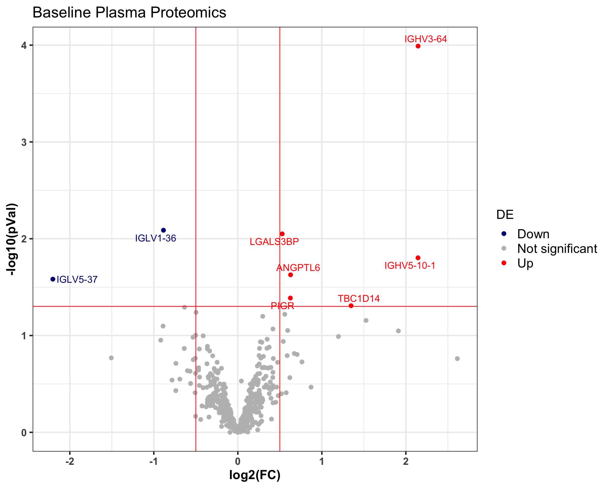
Log2-FC cutoffs are 0.8 (FC=1.74) and -0.8 (FC=0.57).
# FPP
volTab <- proFoloVolTab
volTab['DE'] <- 'Not significant'
volTab$DE[volTab$pVal <= 0.05 & volTab$logFC > 0.8] <- 'Up'
volTab$DE[volTab$pVal <= 0.05 & volTab$logFC < -0.8] <- 'Down'
volTab['Label'] <- NA
label4SigFeats <- volTab$Gene[volTab$DE != 'Not significant']
volTab$Label[volTab$DE != 'Not significant'] <- label4SigFeats
ggplot(volTab, aes(x=logFC, y=-log10(pVal), col=DE, label=Label)) +
geom_point(size = 2) +
geom_hline(yintercept = -log10(0.05), col = 'red', linewidth = 0.4) +
geom_vline(xintercept = c(-0.8, 0.8), col = 'red', linewidth = 0.4) +
geom_text_repel(size = 4, show.legend = F) +
scale_color_manual(values = c('navy', 'grey', 'red')) +
labs(x = 'log2(FC)', title = 'Follow-up Plasma Proteomics') +
th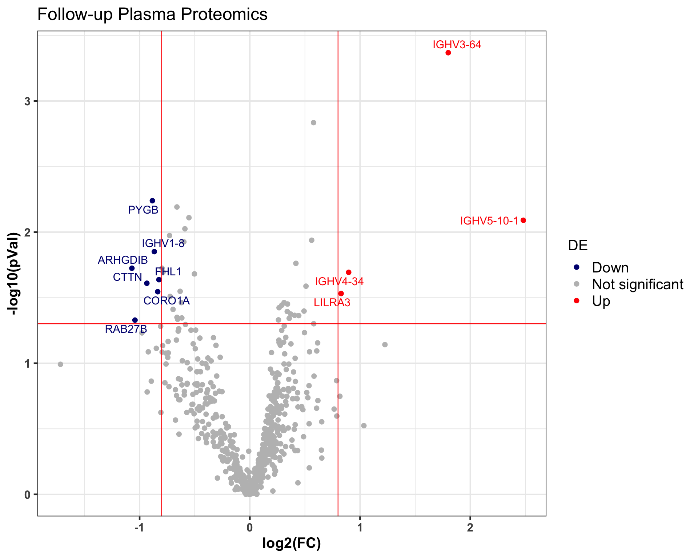
Log2-FC cutoffs are 0.8 (FC=1.74) and -0.8 (FC=0.57).
# TTP
volTab <- proTumorVolTab
volTab['DE'] <- 'Not significant'
volTab$DE[volTab$pVal <= 0.05 & volTab$logFC > 0.8] <- 'Up'
volTab$DE[volTab$pVal <= 0.05 & volTab$logFC < -0.8] <- 'Down'
volTab['Label'] <- NA
label4SigFeats <- volTab$Gene[volTab$DE != 'Not significant']
volTab$Label[volTab$DE != 'Not significant'] <- label4SigFeats
ggplot(volTab, aes(x=logFC, y=-log10(pVal), col=DE, label=Label)) +
geom_point(size = 2) +
geom_hline(yintercept = -log10(0.05), col = 'red', linewidth = 0.4) +
geom_vline(xintercept = c(-0.8, 0.8), col = 'red', linewidth = 0.4) +
geom_text_repel(size = 4, show.legend = F) +
scale_color_manual(values = c('navy', 'grey', 'red')) +
labs(x = 'log2(FC)', title = 'Tumor Tissue Proteomics') +
th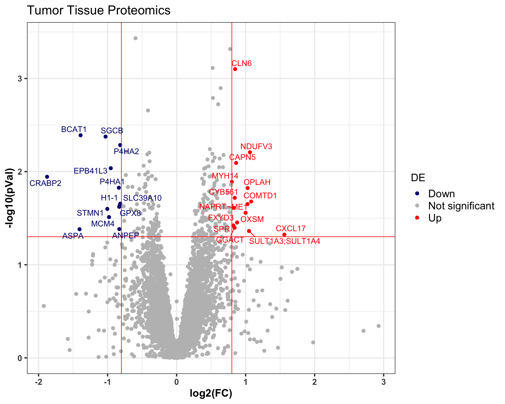
Log2-FC cutoffs are 0.8 (FC=1.74) and -0.8 (FC=0.57).
# NTP
volTab <- proNormalVolTab
volTab['DE'] <- 'Not significant'
volTab$DE[volTab$pVal <= 0.05 & volTab$logFC > 0.8] <- 'Up'
volTab$DE[volTab$pVal <= 0.05 & volTab$logFC < -0.8] <- 'Down'
volTab['Label'] <- NA
label4SigFeats <- volTab$Gene[volTab$DE != 'Not significant']
volTab$Label[volTab$DE != 'Not significant'] <- label4SigFeats
ggplot(volTab, aes(x=logFC, y=-log10(pVal), col=DE, label=Label)) +
geom_point(size = 2) +
geom_hline(yintercept = -log10(0.05), col = 'red', linewidth = 0.4) +
geom_vline(xintercept = c(-0.8, 0.8), col = 'red', linewidth = 0.4) +
geom_text_repel(size = 4, show.legend = F) +
scale_color_manual(values = c('navy', 'grey', 'red')) +
labs(x = 'log2(FC)', title = 'Normal Tissue Proteomics') +
th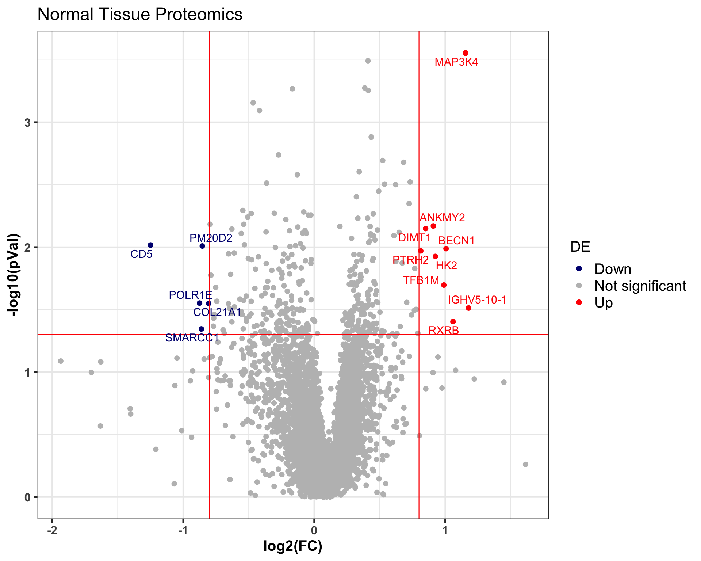
Display proportions of significant features that can separate cancer recurrence and non-recurrence patient groups for all Method Development datasets we currently have, including Targeted/Untargeted Plasma/Tissue Metabolomics and Lipidomics (6 datasets) and DIA/DDA Plasma/Tissue Proteomics (6 datasets). Numbers above bars indicate total feature numbers.
# Prepare significant feature lists for all datasets
# NO MISSINGNESS
# Targeted Plasma Metabolomics
metaBaseRes_Hell <- doSOA(metaBase_Hell, meta_var = 'Recurrence')
metaFoloRes_Hell <- doSOA(metaFolo_Hell, meta_var = 'Recurrence')
# Targeted Tissue Metabolomics
metaTumorRes_Hell <- doSOA(metaTumor_Hell, meta_var = 'Recurrence')
metaNormalRes_Hell <- doSOA(metaNormal_Hell, meta_var = 'Recurrence')
# DDA Plasma Proteomics
proBaseRes_Kri_DDA <- doSOA(proBase_Kri_DDA, meta_var = 'Recurrence')
proFoloRes_Kri_DDA <- doSOA(proFolo_Kri_DDA, meta_var = 'Recurrence')
# DDA Tissue Proteomics
proTumorRes_Kri_DDA <- doSOA(proTumor_Kri_DDA, meta_var = 'Recurrence')
proNormalRes_Kri_DDA <- doSOA(proNormal_Kri_DDA, meta_var = 'Recurrence')
# WITH MISSINGNESS (use proDA)
# Untargeted Plasma Metabolomics
metaBaseRes_Hopf <- doSOA(metaBase_Hopf, meta_var = 'Recurrence')
datMat <- metaBaseRes_Hopf$data
smpAnno <- metaBaseRes_Hopf$smpMetadata
fit <- proDA::proDA(datMat, design = ~ smpAnno$Recurrence)
all_proDAmetaBaseRes_Hopf <- proDA::test_diff(fit,
contrast = Intercept + `smpAnno$RecurrenceYes` - Intercept,
sort_by = 'pval')
proDAmetaBaseRes_Hopf <- dplyr::filter(all_proDAmetaBaseRes_Hopf, pval < 0.05)
metaFoloRes_Hopf <- doSOA(metaFolo_Hopf, meta_var = 'Recurrence')
datMat <- metaFoloRes_Hopf$data
smpAnno <- metaFoloRes_Hopf$smpMetadata
fit <- proDA::proDA(datMat, design = ~ smpAnno$Recurrence)
all_proDAmetaFoloRes_Hopf <- proDA::test_diff(fit,
contrast = Intercept + `smpAnno$RecurrenceYes` - Intercept,
sort_by = 'pval')
proDAmetaFoloRes_Hopf <- dplyr::filter(all_proDAmetaFoloRes_Hopf, pval < 0.05)
# Untargeted Tissue Metabolomics
metaTumorRes_Hopf <- doSOA(metaTumor_Hopf, meta_var = 'Recurrence')
datMat <- metaTumorRes_Hopf$data
smpAnno <- metaTumorRes_Hopf$smpMetadata
fit <- proDA::proDA(datMat, design = ~ smpAnno$Recurrence)
all_proDAmetaTumorRes_Hopf <- proDA::test_diff(fit,
contrast = Intercept + `smpAnno$RecurrenceYes` - Intercept,
sort_by = 'pval')
proDAmetaTumorRes_Hopf <- dplyr::filter(all_proDAmetaTumorRes_Hopf, pval < 0.05)
metaNormalRes_Hopf <- doSOA(metaNormal_Hopf, meta_var = 'Recurrence')
datMat <- metaNormalRes_Hopf$data
smpAnno <- metaNormalRes_Hopf$smpMetadata
fit <- proDA::proDA(datMat, design = ~ smpAnno$Recurrence)
all_proDAmetaNormalRes_Hopf <- proDA::test_diff(fit,
contrast = Intercept + `smpAnno$RecurrenceYes` - Intercept,
sort_by = 'pval')
proDAmetaNormalRes_Hopf <- dplyr::filter(all_proDAmetaNormalRes_Hopf, pval < 0.05)
# Untargeted Plasma Lipidomics
lipBaseRes_Hopf <- doSOA(lipBase_Hopf, meta_var = 'Recurrence')
datMat <- lipBaseRes_Hopf$data
smpAnno <- lipBaseRes_Hopf$smpMetadata
fit <- proDA::proDA(datMat, design = ~ smpAnno$Recurrence)
all_proDAlipBaseRes_Hopf <- proDA::test_diff(fit,
contrast = Intercept + `smpAnno$RecurrenceYes` - Intercept,
sort_by = 'pval')
proDAlipBaseRes_Hopf <- dplyr::filter(all_proDAlipBaseRes_Hopf, pval < 0.05)
lipFoloRes_Hopf <- doSOA(lipFolo_Hopf, meta_var = 'Recurrence')
datMat <- lipFoloRes_Hopf$data
smpAnno <- lipFoloRes_Hopf$smpMetadata
fit <- proDA::proDA(datMat, design = ~ smpAnno$Recurrence)
all_proDAlipFoloRes_Hopf <- proDA::test_diff(fit,
contrast = Intercept + `smpAnno$RecurrenceYes` - Intercept,
sort_by = 'pval')
proDAlipFoloRes_Hopf <- dplyr::filter(all_proDAlipFoloRes_Hopf, pval < 0.05)
# Untargeted Tissue Lipidomics
lipTumorRes_Hopf <- doSOA(lipTumor_Hopf, meta_var = 'Recurrence')
datMat <- lipTumorRes_Hopf$data
smpAnno <- lipTumorRes_Hopf$smpMetadata
fit <- proDA::proDA(datMat, design = ~ smpAnno$Recurrence)
all_proDAlipTumorRes_Hopf <- proDA::test_diff(fit,
contrast = Intercept + `smpAnno$RecurrenceYes` - Intercept,
sort_by = 'pval')
proDAlipTumorRes_Hopf <- dplyr::filter(all_proDAlipTumorRes_Hopf, pval < 0.05)
lipNormalRes_Hopf <- doSOA(lipNormal_Hopf, meta_var = 'Recurrence')
datMat <- lipNormalRes_Hopf$data
smpAnno <- lipNormalRes_Hopf$smpMetadata
fit <- proDA::proDA(datMat, design = ~ smpAnno$Recurrence)
all_proDAlipNormalRes_Hopf <- proDA::test_diff(fit,
contrast = Intercept + `smpAnno$RecurrenceYes` - Intercept,
sort_by = 'pval')
proDAlipNormalRes_Hopf <- dplyr::filter(all_proDAlipNormalRes_Hopf, pval < 0.05)
# DIA Plasma Proteomics
proBaseRes_Kri_DIA <- doSOA(proBase_Kri_DIA, meta_var = 'Recurrence')
datMat <- proBaseRes_Kri_DIA$data
smpAnno <- proBaseRes_Kri_DIA$smpMetadata
fit <- proDA::proDA(datMat, design = ~ smpAnno$Recurrence)
all_proDAproBaseRes_Kri_DIA <- proDA::test_diff(fit,
contrast = Intercept + `smpAnno$RecurrenceYes` - Intercept,
sort_by = 'pval')
proDAproBaseRes_Kri_DIA <- dplyr::filter(all_proDAproBaseRes_Kri_DIA, pval < 0.05)
proFoloRes_Kri_DIA <- doSOA(proFolo_Kri_DIA, meta_var = 'Recurrence')
datMat <- proFoloRes_Kri_DIA$data
smpAnno <- proFoloRes_Kri_DIA$smpMetadata
fit <- proDA::proDA(datMat, design = ~ smpAnno$Recurrence)
all_proDAproFoloRes_Kri_DIA <- proDA::test_diff(fit,
contrast = Intercept + `smpAnno$RecurrenceYes` - Intercept,
sort_by = 'pval')
proDAproFoloRes_Kri_DIA <- dplyr::filter(all_proDAproFoloRes_Kri_DIA, pval < 0.05)
# DIA Tissue Proteomics
proTumorRes_Klin_DIA <- doSOA(proTumor_Klin_DIA, meta_var = 'Recurrence')
datMat <- proTumorRes_Klin_DIA$data
smpAnno <- proTumorRes_Klin_DIA$smpMetadata
fit <- proDA::proDA(datMat, design = ~ smpAnno$Recurrence)
all_proDAproTumorRes_Klin_DIA <- proDA::test_diff(fit,
contrast = Intercept + `smpAnno$RecurrenceYes` - Intercept,
sort_by = 'pval')
proDAproTumorRes_Klin_DIA <- dplyr::filter(all_proDAproTumorRes_Klin_DIA, pval < 0.05)
proNormalRes_Klin_DIA <- doSOA(proNormal_Klin_DIA, meta_var = 'Recurrence')
datMat <- proNormalRes_Klin_DIA$data
smpAnno <- proNormalRes_Klin_DIA$smpMetadata
fit <- proDA::proDA(datMat, design = ~ smpAnno$Recurrence)
all_proDAproNormalRes_Klin_DIA <- proDA::test_diff(fit,
contrast = Intercept + `smpAnno$RecurrenceYes` - Intercept,
sort_by = 'pval')
proDAproNormalRes_Klin_DIA <- dplyr::filter(all_proDAproNormalRes_Klin_DIA, pval < 0.05)
# New DIA Plasma Proteomics
new_proBaseRes_Kri_DIA <- doSOA(new_proBase_Kri_DIA, meta_var = 'Recurrence')
datMat <- new_proBaseRes_Kri_DIA$data
smpAnno <- new_proBaseRes_Kri_DIA$smpMetadata
fit <- proDA::proDA(datMat, design = ~ smpAnno$Recurrence)
new_all_proDAproBaseRes_Kri_DIA <- proDA::test_diff(fit,
contrast = Intercept + `smpAnno$RecurrenceYes` - Intercept,
sort_by = 'pval')
new_proDAproBaseRes_Kri_DIA <- dplyr::filter(new_all_proDAproBaseRes_Kri_DIA, pval < 0.05)
new_proFoloRes_Kri_DIA <- doSOA(new_proFolo_Kri_DIA, meta_var = 'Recurrence')
datMat <- new_proFoloRes_Kri_DIA$data
smpAnno <- new_proFoloRes_Kri_DIA$smpMetadata
fit <- proDA::proDA(datMat, design = ~ smpAnno$Recurrence)
new_all_proDAproFoloRes_Kri_DIA <- proDA::test_diff(fit,
contrast = Intercept + `smpAnno$RecurrenceYes` - Intercept,
sort_by = 'pval')
new_proDAproFoloRes_Kri_DIA <- dplyr::filter(new_all_proDAproFoloRes_Kri_DIA, pval < 0.05)
# New DIA Tissue Proteomics
new_proTumorRes_Kri_DIA <- doSOA(new_proTumor_Kri_DIA, meta_var = 'Recurrence')
datMat <- new_proTumorRes_Kri_DIA$data
smpAnno <- new_proTumorRes_Kri_DIA$smpMetadata
fit <- proDA::proDA(datMat, design = ~ smpAnno$Recurrence)
new_all_proDAproTumorRes_Kri_DIA <- proDA::test_diff(fit,
contrast = Intercept + `smpAnno$RecurrenceYes` - Intercept,
sort_by = 'pval')
new_proDAproTumorRes_Kri_DIA <- dplyr::filter(new_all_proDAproTumorRes_Kri_DIA, pval < 0.05)
new_proNormalRes_Kri_DIA <- doSOA(new_proNormal_Kri_DIA, meta_var = 'Recurrence')
datMat <- new_proNormalRes_Kri_DIA$data
smpAnno <- new_proNormalRes_Kri_DIA$smpMetadata
fit <- proDA::proDA(datMat, design = ~ smpAnno$Recurrence)
new_all_proDAproNormalRes_Kri_DIA <- proDA::test_diff(fit,
contrast = Intercept + `smpAnno$RecurrenceYes` - Intercept,
sort_by = 'pval')
new_proDAproNormalRes_Kri_DIA <- dplyr::filter(new_all_proDAproNormalRes_Kri_DIA, pval < 0.05)# Make barplot about proportion of significant features in each dataset
# Compute proportion of significant features
metaBaseSigFeats_Hell <- nrow(metaBaseRes_Hell$tFeatSigRes) / nrow(metaBaseRes_Hell$data) * 100
metaFoloSigFeats_Hell <- nrow(metaFoloRes_Hell$tFeatSigRes) / nrow(metaFoloRes_Hell$data) * 100
metaTumorSigFeats_Hell <- nrow(metaTumorRes_Hell$tFeatSigRes) / nrow(metaTumorRes_Hell$data) * 100
metaNormalSigFeats_Hell <- nrow(metaNormalRes_Hell$tFeatSigRes) / nrow(metaNormalRes_Hell$data) * 100
proBaseSigFeats_Kri_DDA <- nrow(proBaseRes_Kri_DDA$tFeatSigRes) / nrow(proBaseRes_Kri_DDA$data) * 100
proFoloSigFeats_Kri_DDA <- nrow(proFoloRes_Kri_DDA$tFeatSigRes) / nrow(proFoloRes_Kri_DDA$data) * 100
proTumorSigFeats_Kri_DDA <- nrow(proTumorRes_Kri_DDA$tFeatSigRes) / nrow(proTumorRes_Kri_DDA$data) * 100
proNormalSigFeats_Kri_DDA <- nrow(proNormalRes_Kri_DDA$tFeatSigRes) / nrow(proNormalRes_Kri_DDA$data) * 100
metaBaseSigFeats_Hopf <- nrow(proDAmetaBaseRes_Hopf) / nrow(metaBaseRes_Hopf$data) * 100
metaFoloSigFeats_Hopf <- nrow(proDAmetaFoloRes_Hopf) / nrow(metaFoloRes_Hopf$data) * 100
metaTumorSigFeats_Hopf <- nrow(proDAmetaTumorRes_Hopf) / nrow(metaTumorRes_Hopf$data) * 100
metaNormalSigFeats_Hopf <- nrow(proDAmetaNormalRes_Hopf) / nrow(metaNormalRes_Hopf$data) * 100
lipBaseSigFeats_Hopf <- nrow(proDAlipBaseRes_Hopf) / nrow(lipBaseRes_Hopf$data) * 100
lipFoloSigFeats_Hopf <- nrow(proDAlipFoloRes_Hopf) / nrow(lipFoloRes_Hopf$data) * 100
lipTumorSigFeats_Hopf <- nrow(proDAlipTumorRes_Hopf) / nrow(lipTumorRes_Hopf$data) * 100
lipNormalSigFeats_Hopf <- nrow(proDAlipNormalRes_Hopf) / nrow(lipNormalRes_Hopf$data) * 100
proBaseSigFeats_Kri_DIA <- nrow(proDAproBaseRes_Kri_DIA) / nrow(proBaseRes_Kri_DIA$data) * 100
proFoloSigFeats_Kri_DIA <- nrow(proDAproFoloRes_Kri_DIA) / nrow(proFoloRes_Kri_DIA$data) * 100
proTumorSigFeats_Klin_DIA <- nrow(proDAproTumorRes_Klin_DIA) / nrow(proTumorRes_Klin_DIA$data) * 100
proNormalSigFeats_Klin_DIA <- nrow(proDAproNormalRes_Klin_DIA) / nrow(proNormalRes_Klin_DIA$data) * 100
new_proBaseSigFeats_Kri_DIA <- nrow(new_proDAproBaseRes_Kri_DIA) / nrow(new_proBaseRes_Kri_DIA$data) * 100
new_proFoloSigFeats_Kri_DIA <- nrow(new_proDAproFoloRes_Kri_DIA) / nrow(new_proFoloRes_Kri_DIA$data) * 100
new_proTumorSigFeats_Kri_DIA <- nrow(new_proDAproTumorRes_Kri_DIA) / nrow(new_proTumorRes_Kri_DIA$data) * 100
new_proNormalSigFeats_Kri_DIA <- nrow(new_proDAproNormalRes_Kri_DIA) / nrow(new_proNormalRes_Kri_DIA$data) * 100
# Prepare needed information for barplot
dat <- c('Untargeted Metabolomics', 'Untargeted Metabolomics',
'Targeted Metabolomics', 'Targeted Metabolomics',
'Untargeted Lipidomics', 'Untargeted Lipidomics',
'DIA Proteomics', 'DIA Proteomics',
'New DIA Proteomics', 'New DIA Proteomics',
'DDA Proteomics', 'DDA Proteomics',
'Untargeted Metabolomics', 'Untargeted Metabolomics',
'Targeted Metabolomics', 'Targeted Metabolomics',
'Untargeted Lipidomics', 'Untargeted Lipidomics',
'DIA Proteomics', 'DIA Proteomics',
'New DIA Proteomics', 'New DIA Proteomics',
'DDA Proteomics', 'DDA Proteomics')
datModal <- c(rep(c('Baseline', 'Follow-up'), 6), rep(c('Tumor', 'Normal'), 6))
datOf <- c(rep('Plasma', 12), rep('Tissue', 12))
proportion <- c(metaBaseSigFeats_Hopf, metaFoloSigFeats_Hopf,
metaBaseSigFeats_Hell, metaFoloSigFeats_Hell,
lipBaseSigFeats_Hopf, lipFoloSigFeats_Hopf,
proBaseSigFeats_Kri_DIA, proFoloSigFeats_Kri_DIA,
new_proBaseSigFeats_Kri_DIA, new_proFoloSigFeats_Kri_DIA,
proBaseSigFeats_Kri_DDA, proFoloSigFeats_Kri_DDA,
metaTumorSigFeats_Hopf, metaNormalSigFeats_Hopf,
metaTumorSigFeats_Hell, metaNormalSigFeats_Hell,
lipTumorSigFeats_Hopf, lipNormalSigFeats_Hopf,
proTumorSigFeats_Klin_DIA, proNormalSigFeats_Klin_DIA,
new_proTumorSigFeats_Kri_DIA, new_proNormalSigFeats_Kri_DIA,
proTumorSigFeats_Kri_DDA, proNormalSigFeats_Kri_DDA)
numFeat <- c(c(nrow(metaBaseRes_Hopf$data), NA), c(nrow(metaBaseRes_Hell$data), NA),
c(NA, nrow(lipFoloRes_Hopf$data)), c(nrow(proBaseRes_Kri_DIA$data), NA),
c(NA, nrow(new_proFoloRes_Kri_DIA$data)), c(nrow(proBaseRes_Kri_DDA$data), NA),
c(NA, nrow(metaNormalRes_Hopf$data)), c(nrow(metaTumorRes_Hell$data), NA),
c(NA, nrow(lipNormalRes_Hopf$data)), c(NA, nrow(proNormalRes_Klin_DIA$data)),
c(NA, nrow(new_proNormalRes_Kri_DIA$data)), c(nrow(proTumorRes_Kri_DDA$data), NA))
# numSigFeat <- c(c(nrow(proDAmetaBaseRes_Hopf), nrow(proDAmetaFoloRes_Hopf)),
# c(nrow(metaBaseRes_Hell$tFeatSigRes), nrow(metaFoloRes_Hell$tFeatSigRes)),
# c(nrow(proDAlipBaseRes_Hopf), nrow(proDAlipFoloRes_Hopf)),
# c(nrow(proDAproBaseRes_Kri_DIA), nrow(proDAproFoloRes_Kri_DIA)),
# c(nrow(new_proDAproBaseRes_Kri_DIA), nrow(new_proDAproFoloRes_Kri_DIA)),
# c(nrow(proBaseRes_Kri_DDA$tFeatSigRes), nrow(proFoloRes_Kri_DDA$tFeatSigRes)),
# c(nrow(proDAmetaTumorRes_Hopf), nrow(proDAmetaNormalRes_Hopf)),
# c(nrow(metaTumorRes_Hell$tFeatSigRes), nrow(metaNormalRes_Hell$tFeatSigRes)),
# c(nrow(proDAlipTumorRes_Hopf), nrow(proDAlipNormalRes_Hopf)),
# c(nrow(proDAproTumorRes_Klin_DIA), nrow(proDAproNormalRes_Klin_DIA)),
# c(nrow(new_proDAproTumorRes_Kri_DIA), nrow(new_proDAproNormalRes_Kri_DIA)),
# c(nrow(proTumorRes_Kri_DDA$tFeatSigRes), nrow(proNormalRes_Kri_DDA$tFeatSigRes)))
sigFeatPropTab <- data.frame(Data = factor(dat, levels = unique(dat)),
Data_modality = datModal,
Data_of = datOf,
Proportion = proportion,
Feature_number = numFeat)
ggplot(sigFeatPropTab, aes(x=Data, y=Proportion, fill = Data_modality, label=Feature_number)) +
geom_bar(stat = 'identity', position=position_dodge()) +
geom_text(size = 5, vjust = -0.3) +
facet_wrap(~Data_of) +
labs(x = 'Data', y = 'Percentage (%)',
title = 'Proportion of Cancer Recurrence-Related Features') +
scale_fill_discrete(name = 'Sample Condition') +
th + theme(axis.text.x = element_text(angle = 65, vjust = 1, hjust = 1),
strip.text = element_text(size = 16, face = 'bold'))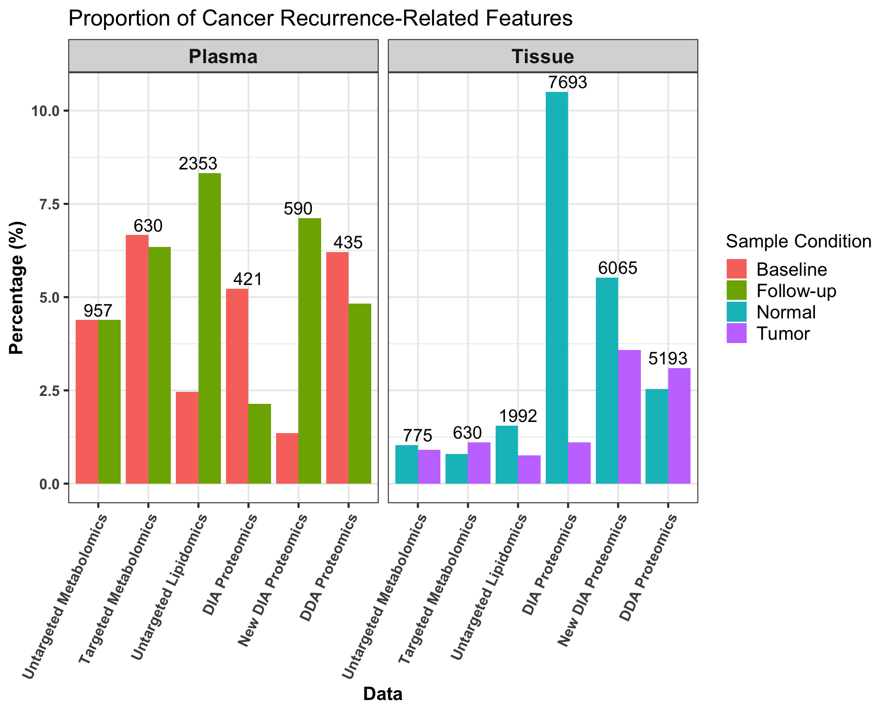
# theme(strip.text = element_text(size = 26), axis.title = element_text(size = 26),
# axis.text.x = element_text(size = 11.5, angle = 60, vjust = 1, hjust = 1), axis.text.y = element_text(size = 22),
# legend.title = element_text(size = 24), legend.text = element_text(size = 24),
# panel.background = element_blank(), axis.line = element_line(color = 'black'))
# ggsave('./output/percentage_sigFeats.png', device = 'png', dpi = 400, height = 8, width = 18)=> Plasma samples in general perform better than Tissue samples and Baseline samples perform as good as Follow-up samples in terms of separating recurrence and non-recurrence patient groups. Noticeably, DIA Normal Tissue Proteomics performs nicely, indicating that tumor microenvironment may be critical to cancer recurrence.
sessionInfo()R version 4.3.0 (2023-04-21)
Platform: aarch64-apple-darwin20 (64-bit)
Running under: macOS Ventura 13.4
Matrix products: default
BLAS: /Library/Frameworks/R.framework/Versions/4.3-arm64/Resources/lib/libRblas.0.dylib
LAPACK: /Library/Frameworks/R.framework/Versions/4.3-arm64/Resources/lib/libRlapack.dylib; LAPACK version 3.11.0
locale:
[1] en_US.UTF-8/en_US.UTF-8/en_US.UTF-8/C/en_US.UTF-8/en_US.UTF-8
time zone: Europe/Berlin
tzcode source: internal
attached base packages:
[1] stats4 stats graphics grDevices utils datasets methods
[8] base
other attached packages:
[1] lubridate_1.9.2 forcats_1.0.0
[3] stringr_1.5.0 dplyr_1.1.2
[5] purrr_1.0.1 readr_2.1.4
[7] tidyr_1.3.0 tibble_3.2.1
[9] tidyverse_2.0.0 openxlsx_4.2.5.2
[11] ggfortify_0.4.16 ggrepel_0.9.3
[13] ggplot2_3.4.2 proDA_1.14.0
[15] SummarizedExperiment_1.30.2 Biobase_2.60.0
[17] GenomicRanges_1.52.0 GenomeInfoDb_1.36.1
[19] IRanges_2.34.1 S4Vectors_0.38.1
[21] BiocGenerics_0.46.0 MatrixGenerics_1.12.2
[23] matrixStats_1.0.0 workflowr_1.7.0
loaded via a namespace (and not attached):
[1] tidyselect_1.2.0 farver_2.1.1 bitops_1.0-7
[4] fastmap_1.1.1 RCurl_1.98-1.12 promises_1.2.0.1
[7] digest_0.6.33 timechange_0.2.0 lifecycle_1.0.3
[10] processx_3.8.2 magrittr_2.0.3 compiler_4.3.0
[13] rlang_1.1.1 sass_0.4.7 tools_4.3.0
[16] utf8_1.2.3 yaml_2.3.7 knitr_1.43
[19] ggsignif_0.6.4 labeling_0.4.2 S4Arrays_1.0.4
[22] DelayedArray_0.26.6 RColorBrewer_1.1-3 plyr_1.8.8
[25] abind_1.4-5 withr_2.5.0 grid_4.3.0
[28] fansi_1.0.4 ggpubr_0.6.0 git2r_0.32.0
[31] colorspace_2.1-0 scales_1.2.1 cli_3.6.1
[34] rmarkdown_2.23 crayon_1.5.2 generics_0.1.3
[37] rstudioapi_0.15.0 httr_1.4.6 tzdb_0.4.0
[40] cachem_1.0.8 zlibbioc_1.46.0 XVector_0.40.0
[43] vctrs_0.6.3 Matrix_1.6-0 carData_3.0-5
[46] jsonlite_1.8.7 car_3.1-2 callr_3.7.3
[49] hms_1.1.3 rstatix_0.7.2 jquerylib_0.1.4
[52] glue_1.6.2 ps_1.7.5 stringi_1.7.12
[55] gtable_0.3.3 later_1.3.1 munsell_0.5.0
[58] pillar_1.9.0 pcaMethods_1.92.0 htmltools_0.5.5
[61] GenomeInfoDbData_1.2.10 R6_2.5.1 rprojroot_2.0.3
[64] evaluate_0.21 lattice_0.21-8 extraDistr_1.9.1
[67] highr_0.10 backports_1.4.1 pheatmap_1.0.12
[70] broom_1.0.5 httpuv_1.6.11 bslib_0.5.0
[73] Rcpp_1.0.11 zip_2.3.0 gridExtra_2.3
[76] whisker_0.4.1 xfun_0.39 fs_1.6.2
[79] getPass_0.2-2 pkgconfig_2.0.3